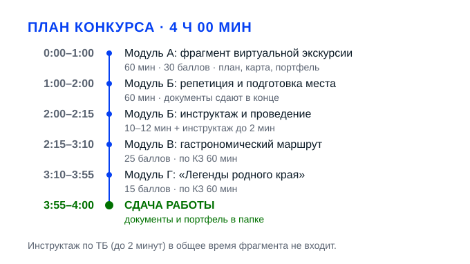
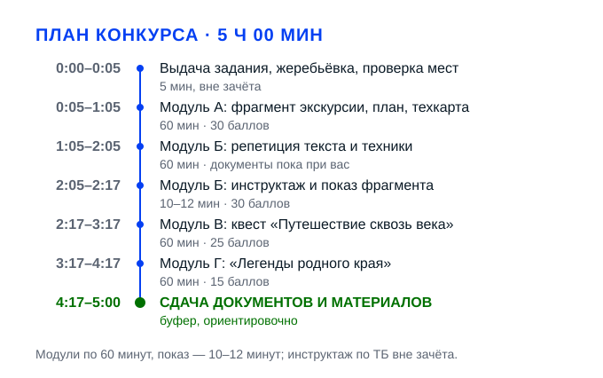
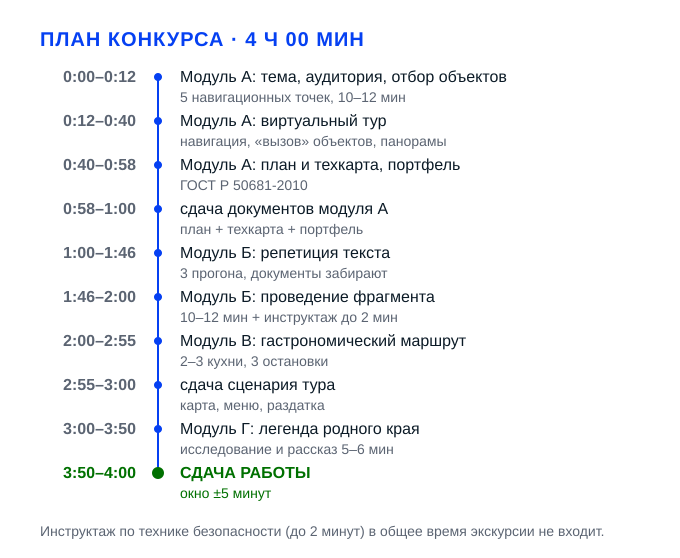

Гид-экскурсовод (Р,О)
Задания ниже — официальные файлы «Абилимпикс» (источник: abilympics-russia.ru), разложенные по категориям. Решения написаны по тексту задания, регламенту и критериям оценки; в них указано, что именно проверяет эксперт.
Школьник
14–16 лет, базовый уровень заданияВыдержка из официального конкурсного задания: страницы, относящиеся к категории «Школьник» (стр. 7–8, 12–13 источника).
Пошаговое решение
Задание для школьников — 4 часа и 100 баллов: модуль А на разработку фрагмента виртуальной экскурсии (60 минут, 30 баллов), модуль Б на репетицию и проведение этого фрагмента (60 минут на подготовку и ещё 10–12 минут с группой, 30 баллов), модуль В на гастрономический маршрут (60 минут, 25 баллов) и региональный модуль Г с легендами родного края (60 минут, 15 баллов). Работа идёт на ноутбуке с интернетом: тур собирается на панорамах Яндекс Карт, документы — план и технологическая карта по ГОСТ Р 50681-2010 — сдаются в электронную папку. Главное, что стоит понять сразу: модуль А делается для модуля Б, поэтому маршрут, текст и портфель экскурсовода должны работать, а не просто лежать в папке.

Задача 1. Разработать фрагмент виртуальной экскурсииМодуль А · 30 баллов · 60 минут
Первый модуль — самый дорогой: за 60 минут нужно придумать фрагмент на 10–12 минут, собрать его из панорам Яндекс Карт и сдать два документа. Тема, четыре-пять объектов, три навигационные точки, текст, технологическая карта по ГОСТ Р 50681-2010 и портфель экскурсовода — всё это делается строго по порядку, потому что каждое следующее действие опирается на предыдущее. Ошибка здесь стоит дороже всего: 30 баллов из 100.
Действие 1.1. Выбрать тему, аудиторию и цель
Шаг 1.1.1
Первые десять минут модуля отдаём листу бумаги, а не компьютеру: читаем задание целиком и выписываем три строки — тему, аудиторию, город. Тему формулируем так, чтобы в ней был предмет показа и обещание: например, «Уфа купеческая: три дома, три судьбы». Аудиторию называем точно — школьники 12–14 лет, группа до 15 человек, — потому что от неё зависят и лексика, и темп, и длина каждой порции рассказа.
Тема и аудитория — то, с чего начинается оценка модуля А, а он весит 30 баллов из 100. Формулировка «достопримечательности Уфы» не годится: под неё можно подставить что угодно, и эксперт сразу видит, что участник ещё не решил, о чём говорит. Точный возраст нужен и для речи: для школьников 12–14 лет фраза длиннее двадцати слов уже не воспринимается на слух.
На листе три законченные строки: тема с предметом показа, аудитория с возрастом, город. Проверьте формулировку вопросом: можно ли по ней сразу сказать, какие объекты войдут во фрагмент? Если ответ «не очень» — тема ещё не выбрана.
Самая частая ошибка — взять «Историю Уфы» и начать искать панорамы, надеясь, что тема сложится по ходу. К середине модуля выясняется, что объекты не связаны, а переделывать план и карту уже нет времени. Вторая ошибка — писать для взрослых, а потом удивляться, что группа отвлеклась на второй минуте.
Эксперт подходит к рабочему месту на пятой–десятой минуте и смотрит, есть ли на листе тема и аудитория: это видно за секунду и сразу показывает, планирует участник работу или импровизирует.
Шаг 1.1.2
Открываем Яндекс Карты, включаем панорамы и проверяем каждый объект темы на «показуемость»: есть ли панорама нужного ракурса, виден ли фасад целиком, не перекрыт ли он деревом или остановкой. На фрагмент в 10–12 минут нужно четыре-пять объектов, и все они должны стоять так, чтобы экскурсант с первого взгляда понимал, на что смотрит. Объект без панорамы вычёркиваем сразу — рассказывать о том, чего не видно, в виртуальной экскурсии нельзя.
Требование задания прямое: виртуальный тур на базе Яндекс Карт должен давать навигационные элементы, вызов объектов и информационные материалы. Если панорамы нет, точка превращается в пустой экран, и балл уходит по критерию показа, а модуль А целиком стоит 30 баллов. Проверка на этом шаге экономит полчаса: найти замену объекту проще сейчас, чем переписывать технологическую карту.
Рядом с каждым объектом в списке пишем пометку «виден фасад», «виден фрагмент» или «не виден» и короткую ссылку на панораму. В маршрут идут только первые две пометки, и на одну точку — не больше трёх объектов.
Взять объект «по памяти» и наткнуться на пустую панораму во время репетиции: в модуле Б это уже катастрофа, потому что документы сданы, а маршрут не работает. Вторая ошибка — набрать восемь объектов на двенадцать минут: показ превращается в перелистывание кадров.
Эксперт во время проверки плана может попросить открыть панораму любого объекта — и смотрит, откроется ли она за три секунды. Если панорама грузится медленно, это видно уже здесь, а не на сцене.
Шаг 1.1.3
На том же листе формулируем цель одной фразой и три задачи к ней. Цель отвечает на вопрос «зачем эта экскурсия»: показать, как за сто лет менялся купеческий центр Уфы, — а не «рассказать о городе». Задачи разбивают цель на проверяемые шаги: назвать три эпохи, показать два архитектурных слоя, дать аудитории один запоминающийся факт по каждому объекту.
Цель и задачи — обязательные пункты плана фрагмента, они прямо названы в конкурсном задании, и документ без них не принимается. Кроме того, задачи задают тайминг: одна задача — это примерно три минуты, и три задачи как раз укладываются в 10–12 минут вместе со вступлением и финалом.
Под каждой задачей должны подписываться объекты, которые её решают. Если задача не опирается ни на один объект, она лишняя, и её лучше убрать, чем тащить в технологическую карту. Если задача опирается на два объекта, это нормально: один объект редко решает целую задачу.
Написать вместо цели лозунг — «воспитать любовь к родному городу»: эксперт не увидит, что именно участник показывает. Вторая ошибка — пять задач на двенадцать минут, из-за чего каждая остаётся недоделанной.
Эксперт смотрит связку «цель — задачи — объекты» в плане: она должна читаться без пояснений самого участника. Отдельно смотрит, не подменена ли цель перечислением того, что находится рядом.
Действие 1.2. Выстроить маршрут по навигационным точкам
Шаг 1.2.1
Отмечаем на карте навигационные точки — места, откуда открывается вид. Держим правило: одна точка — до трёх объектов показа, и это не то же самое, что объект: с одной точки на площади видно и памятник, и дом, и колокольню. На фрагмент в 10–12 минут хватает трёх точек; четвёртую добавляем только тогда, когда она стоит по пути и не ломает логику прогулки.
В задании это выделено отдельным пунктом: при передвижении используются именно навигационные точки, и путать их с объектами показа — типичная ошибка, которую эксперт фиксирует отдельно. Три точки дают спокойный темп: полторы минуты вступления, по три минуты на точку и минута на финал.
На карте три точки, расстояние между ними пешком не больше пяти минут, каждая подписана номером и списком объектов. Всего объектов — от четырёх до семи: меньше четырёх фрагмент выглядит пустым. Считайте не точки, а объекты: три точки по два объекта — это уже шесть.
Сделать по точке на каждый объект и получить семь переездов: экскурсия превращается в беготню по карте. Обратная ошибка — одна точка на весь фрагмент, тогда навигация не используется и балл за неё не ставится.
Эксперт слушает, называет ли участник переходы вслух — «переходим к следующей точке», — так видно, что навигация осознанная, а не случайная. Заодно видно, различает ли участник эти два понятия хотя бы на уровне речи.
Шаг 1.2.2
Раскладываем 10–12 минут по секундам: вступление — полторы минуты, каждая точка — три минуты, переход между точками — 15–20 секунд, финал — минута. Внутри точки тоже есть порядок: 20 секунд на показ и ориентацию, две минуты рассказа, 40 секунд на деталь или вопрос. Итог записываем в план цифрами, а не словами «примерно». Рядом с каждой цифрой подписываем, что именно происходит: показ, рассказ, вопрос или переход.
Хронометраж фрагмента — обязательный пункт плана и критерий модуля Б: рамка 10–12 минут, и выход за границу виден сразу. Разложенный тайминг спасает и в проведении: если к середине фрагмента накопилось отставание, видно, где забрать минуту, а не паниковать в конце.
Сложите цифры — должно выйти ровно от 10 до 12 минут. Проверьте, что ни одна точка не занимает больше четырёх минут: после четвёртой минуты аудитория 12–14 лет начинает отвлекаться. Если сумма ушла за двенадцать минут, режьте переходы — они самые безболезненные.
Оставить тайминг «на глаз»: на репетиции фрагмент идёт шестнадцать минут, и урезать приходится на ходу, комкая финал. Вторая ошибка — отдать вступлению три минуты, оставив на объекты по две. Третья ошибка — считать точки, не учитывая переходы между ними.
На проведении эксперт держит секундомер и отмечает, уложился ли участник в 10–12 минут и не сократил ли содержание ради времени. Если участник смотрит на часы каждые полминуты, спокойный темп уже потерян.
Шаг 1.2.3
Выстраиваем точки в том порядке, в котором по ним реально идти: от верхней террасы вниз или вдоль одной улицы, без прыжков через город. В панораме проверяем ещё и ракурс: если на первой точке камера смотрит на восток, а на второй — на запад, каждый раз придётся объяснять, откуда мы смотрим. Маршрут должен читаться как одна прогулка, а не как список адресов.
Последовательность и логичность маршрута — отдельный пункт в последовательности выполнения задания, и он влияет на оценку модуля А. Связный маршрут экономит слова: не нужно объяснять, почему мы вдруг оказались в другом конце центра, и освободившиеся секунды уходят на содержание.
Пройдите маршрут глазами: между двумя соседними точками проводится линия по улице, и она не пересекает город дважды. Если приходится возвращаться — поменяйте точки местами, пока карта не подписана. Если маршрут рисуется одной линией без возвратов, он выстроен верно.
Собрать точки по значимости, а не по географии: экскурсант теряет ощущение места, а рассказ распадается на отдельные справки. Вторая ошибка — поставить финал в точке, откуда не видно ничего, что подводило бы итог.
Эксперт проверяет маршрут по карте и по технологической карте — порядок точек в обоих документах должен совпадать. Если порядок точек в плане и на карте расходится, эксперт спрашивает, какой вариант верный.
Шаг 1.2.4
Для каждой точки сохраняем короткую ссылку на панораму и подписываем её номером: 01_точка, 02_точка. Ссылки проверяем в том браузере, который стоит на конкурсном ноутбуке, и обязательно без входа в аккаунт: панорама должна открываться за пару секунд. Рядом в плане оставляем строку «если панорама не грузится» — например, открыть объект по фотографии из портфеля.
Рабочее место на площадке — ноутбук с интернетом, и стабильность канала не гарантирована: запасной вариант спасает модуль Б, который весит 30 баллов. Ссылки без авторизации нужны и потому, что личный аккаунт на конкурсной машине недоступен, а панорама из личной коллекции просто не откроется.
Откройте каждую ссылку дважды — сразу и после перезагрузки страницы. Убедитесь, что адрес короткий и его можно набрать руками, если файл со ссылками не откроется. Держите ссылки и в текстовом файле, и в закладках — два способа надёжнее одного.
Сохранить ссылку на панораму, которая требует входа в аккаунт: на сцене вы получаете пустой экран и тратите время на импровизацию. Вторая ошибка — держать ссылки только в закладках браузера, который могут обновить.
Технический эксперт проверяет рабочее место до старта, и участник, у которого всё открывается с первого щелчка, начинает без потерь времени. Он же подскажет, если на конкурсной машине не хватает какого-то плагина или расширения.
Действие 1.3. Написать план фрагмента и текст рассказа
Шаг 1.3.1
Пишем краткий план в свободной форме, но с обязательным набором: наименование темы, цель, задачи, тайминг, пункты содержания, примечания. Пункт содержания — это одна строка на объект: что именно говорим, а не «рассказ о доме». Примечания оставляем для того, что нельзя забыть: «здесь повернуть камеру влево», «показать фото 1913 года». Пункты содержания нумеруем по точкам: 1.1, 1.2, 2.1 — так план читается как оглавление.
Состав плана перечислен в задании дословно, и документ без любого пункта теряет баллы модуля А, где на кону 30 из 100. Свободная форма не значит «как получится»: план читают эксперты, и по нему должно быть понятно, что произойдёт на каждой минуте фрагмента.
Пройдите по плану пальцем: тема есть, цель есть, задач три, тайминг в цифрах, пунктов содержания столько же, сколько объектов. Если какого-то блока нет — допишите, это две минуты. Отдельно проверьте примечания: если их нет вовсе, значит, вы чего-то не продумали.
Сдать вместо плана оглавление из трёх слов — «вступление, основная часть, заключение»: такой документ не показывает содержания и оценивается как пустой. Вторая ошибка — план на пять страниц, который некогда читать.
Эксперт читает план до проведения и сверяет с ним то, что участник говорит на сцене: расхождение видно сразу. Если в плане написано «рассказ о доме», он просит уточнить, что именно будет сказано.
Шаг 1.3.2
Пишем текст на каждый объект порциями по 700–900 знаков: это 45–55 секунд спокойной речи, то есть как раз две порции на трёхминутную точку с показом. Начинаем с того, что видно, — «перед нами двухэтажный дом с проездной аркой», — и только потом переходим к истории. В каждой порции держим один факт и одну деталь, которую можно разглядеть в панораме.
Текст — ядро содержания, и именно он отличает экскурсию от пересказа статьи: модуль А оценивает содержание, модуль Б — подачу, и оба опираются на этот текст. Порция в 700–900 знаков удобна ещё и тем, что её можно выучить за час репетиции, а длинный абзац на сцене всегда сокращается до первой фразы.
Прочитайте вслух с секундомером: каждая порция должна звучать 45–55 секунд без спешки. Если уходит больше минуты — режьте прилагательные, а не факты. Средний темп спокойной речи — около ста знаков в десять секунд, по нему и считайте.
Скачать текст из интернета и читать с листа: на слух это выдаёт себя сразу, а после репетиции документы забирают. Вторая ошибка — начинать с истории города вообще, теряя сорок секунд до предмета показа.
Эксперт слушает, есть ли в рассказе то, что видно на экране: совпадение показа и слова — отдельный критерий модуля Б. Он также отмечает ритм: после длинной фразы должна идти короткая, иначе текст убаюкивает.
Шаг 1.3.3
В каждый объект добавляем одну «изюминку»: цифру, которую трудно забыть, короткую легенду или деталь, видную только внимательному. Не «дом построен в XIX веке», а «на фасаде сохранились кронштейны для вывесок — по ним считали, сколько лавок было на улице». Изюминку ставим в конец порции, чтобы она стала крючком для перехода к следующей точке. Следите, чтобы изюминка не перебивала сам объект и не превращалась в отдельный рассказ.
Интересные факты и легенды прямо названы в последовательности выполнения задания, и они держат внимание группы 12–14 лет лучше любого перечисления дат. На изюминке удобно строить интерактив: вопрос аудитории после такого факта звучит естественно и не выглядит проверкой знаний.
У каждого объекта должна быть деталь, которую можно показать в панораме или вызвать отдельным изображением. Если деталь не показывается, она превращается в радиоспектакль и теряет половину силы. Деталь должна быть видна в кадре целиком, а не угадываться по краю.
Перегрузить рассказ датами и фамилиями: аудитория перестаёт следить за показом и смотрит в телефон. Вторая ошибка — взять легенду, не связанную с местом, и получить красивую историю ни о чём. Третья ошибка — собрать пять изюминок в одну порцию и потерять объект.
Эксперт отмечает, звучит ли в рассказе то, чего нет в путеводителе: авторская деталь — признак самостоятельной работы, а не скачанного текста. Именно такая деталь остаётся в памяти группы после фрагмента.
Действие 1.4. Заполнить технологическую карту по ГОСТ Р 50681-2010
Шаг 1.4.1
Открываем Приложение 1 и переносим шапку карты без пропусков: тема фрагмента, продолжительность в минутах, автор-разработчик, краткое содержание, маршрут. Краткое содержание пишем в три строки — по одной на точку, чтобы карта читалась с одного взгляда. Маршрут перечисляем через тире в том порядке, в котором пойдём. Автора пишем так, как в заявке: фамилия и имя, без сокращений и прозвищ.
Технологическая карта — второй обязательный документ сдачи, и заполняется она согласно ГОСТ Р 50681-2010: пропущенная строка шапки бросается в глаза сразу. Шапка ещё и связывает документы: тема и продолжительность в карте должны совпадать с планом до цифры, иначе эксперт фиксирует небрежность.
Сверьте карту с планом: тема дословно та же, продолжительность та же, маршрут в том же порядке. Расхождение в одну минуту заметно, потому что сумма по графам таблицы должна сходиться. Это первое, что проверяют при сдаче документов, ещё до чтения таблицы.
Назвать в карте одну тему, а в плане другую — документы начинают противоречить друг другу. Вторая ошибка — оставить строку «Автор-разработчик» пустой: формально карта неполная. Третья ошибка — указать продолжительность «10–12 минут» вместо конкретного числа.
Эксперт сверяет шапку карты с планом в первые же минуты проверки документов, не читая их целиком. Если в шапке стоит двенадцать минут, а сумма по графам даёт пятнадцать, вопрос задаётся сразу.
Шаг 1.4.2
Заполняем семь графов таблицы по строкам-точкам: участки перемещения по маршруту, продолжительность осмотра в минутах, основное содержание информации, место остановки, объект показа, указания по организации, методические указания. В графе содержания — тезисы по пять-семь слов, а не полный текст рассказа. В графе объектов перечисляем всё, что показываем с точки, включая детали фасада.
Структура таблицы взята из Приложения 1 к заданию, и оценивается именно заполненность всех графов: пустая графа — минус по критерию оформления модуля А. Тезисный формат нужен ещё и потому, что в модуле Б картой пользоваться уже нельзя, и она работает как страховка при подготовке, а не как шпаргалка.
Сумма минут по графе продолжительности должна дать 10–12. Проверьте, что в каждой строке заполнены все семь графов и что объекты показа совпадают с отмеченными на панораме. Проверьте, что графа «место остановки» заполнена адресом, а не словом «площадь».
Заполнить четыре графа из семи и написать в методических указаниях «по ситуации»: карта выглядит недоделанной. Вторая ошибка — вписать в содержание весь текст рассказа, из-за чего таблица расползается на три страницы.
Эксперт сравнивает число строк карты с числом точек, о которых участник говорит на сцене: они должны совпадать. Он также смотрит, нет ли в карте строк, которые ни разу не звучат в проведении.
Действие 1.5. Собрать портфель экскурсовода
Шаг 1.5.1
Собираем портфель из пяти–семи файлов: старая фотография улицы, портрет персонажа, схема квартала, крупное изображение экспоната, короткая справка в PDF. Каждый файл называем с номером точки впереди — 01_фото_1913, 02_портрет, — чтобы на сцене найти его за секунду. Формат держим простой: JPG и PDF, без тяжёлых презентаций и без видео. Один файл — одно назначение, иначе портфель превращается в свалку картинок.
«Портфель экскурсовода» — третий элемент работы в модуле А, и он же обеспечивает требование «вызова объектов»: возможность открыть отдельное изображение экспоната. Имена с номерами экономят секунды в проведении, когда документы уже сданы и открывать файлы приходится по памяти.
Откройте каждый файл двойным щелчком: изображение должно появляться на весь экран и читаться с трёх метров. Проверьте, что нет файлов с одинаковыми именами и что папка весит не больше 20–30 мегабайт. Проверьте имена на отсутствие пробелов и кириллицы — так файлы надёжнее открываются.
Сложить в портфель двадцать фотографий «на всякий случай»: на сцене вы теряетесь в списке и открываете не то. Вторая ошибка — файл в формате, который на конкурсном ноутбуке не открывается. Третья ошибка — назвать файл просто «схема», когда схем в портфеле две.
Эксперт смотрит, пользуется ли участник портфелем по делу и открывает ли изображение в тот момент рассказа, когда оно нужно. Если участник не может закрыть изображение за секунду, темп рассказа падает.
Шаг 1.5.2
Складываем готовые документы и портфель в «Электронную папку участника», в подпапку «Туристическое бюро», и сразу делаем копию на флеш-накопитель. Имена файлов — по шаблону: тема_план, тема_карта, тема_портфель. В конце модуля открываем папку и убеждаемся, что документов ровно столько, сколько требует задание: план, технологическая карта и портфель.
Сдача идёт через электронную папку, и файл, названный «новый документ 2», эксперт может просто не найти, а это прямые потери в модуле А. Копия на флешке страхует от сбоя машины: замена ноутбука занимает минуты, а время модуля не останавливается. Кроме того, порядок в папке экономит время на сдаче, а его всегда не хватает.
Откройте папку в режиме списка и назовите вслух каждый файл: если хотя бы один приходится искать глазами дольше трёх секунд, переименуйте. Флешка проверена на этом же ноутбуке. Проверьте, что на флешке нет посторонних файлов и что она читается в другом разъёме.
Сохранить документы на рабочий стол под автоматическими именами: при сдаче вы тратите пять минут на поиск и рискуете отдать не тот файл. Вторая ошибка — единственная копия, которая исчезает вместе с зависшей программой.
Технический эксперт проверяет наличие файлов при сдаче модуля, и порядок в папке виден ему сразу. Он смотрит и на время правки файлов: документы, изменённые после сдачи, видны в свойствах.
Задача 2. Отрепетировать фрагмент и подготовить рабочее местоМодуль Б · подготовка к проведению · 60 минут
На подготовку к проведению даётся час, и этот час нельзя тратить на дописывание текста. Работа идёт по трём направлениям: проверить технику и тур, прогнать текст по секундомеру и выйти на сцену без бумаг. После сигнала об окончании репетиции документы и материалы забирают, поэтому к этому моменту всё нужное должно быть в памяти и в пальцах.
Действие 2.1. Проверить тур и оборудование
Шаг 2.1.1
Открываем страницу с виртуальным туром и сразу переходим на первую навигационную точку — так требует задание. Проверяем три вещи: панорама загрузилась целиком, масштаб выставлен так, что объект занимает две трети экрана, а поворот камеры даёт нужный ракурс. Затем отодвигаем ноутбук: экран должен быть на расстоянии 60–70 сантиметров от глаз, не ближе 50.
Подготовленное рабочее место — отдельное требование в задании, и проверяется оно до начала фрагмента. Если панорама грузится двадцать секунд, вы теряете эти секунды уже на сцене, при работающем секундомере. Расстояние до экрана — ещё и вопрос охраны труда: за него отвечает участник, и это указано в требованиях безопасности.
Экран на две трети занят объектом, кнопки навигации видны и не перекрыты всплывающими окнами, шрифт читается без наклона. Проверьте прокрутку колесом мыши — она должна работать без рывков. Проверьте, что панорама не обрезана сверху, а небо не занимает половину кадра.
Оставить тур на обзорной карте города: на сцене вы начинаете с возни с мышью и объяснений, где мы находимся. Вторая ошибка — открыть панораму в маленьком окне, из которого объект не разглядеть. Третья ошибка — открыть тур в полноэкранном режиме и потерять кнопки навигации.
Эксперт фиксирует, подготовлено ли рабочее место до начала проведения: это отдельный пункт требований модуля Б. Если участник поправляет окна при группе, это читается как неподготовленное рабочее место.
Шаг 2.1.2
Открываем файлы портфеля и материалы для интерактива, проверяем каждое изображение и сразу сворачиваем окна — в задании это сказано отдельно. Порядок окон держим по номерам точек: первое свёрнутое — то, что понадобится на первой точке. Всё лишнее закрываем: почту, мессенджеры, вкладки с поиском. Если сервис предлагает войти в аккаунт, входим заранее и записываем пароль на бумаге: на сцене искать его некогда.
Требование «убедиться, что все изображения и файлы корректны, свернуть их» записано в конкурсном задании дословно, и его проверяют. Свёрнутые окна открываются одним движением и не выдают беспорядка на экране, который видит и эксперт, и группа. Это касается и всплывающих окон, которые перекрывают панораму в самый неподходящий момент.
Каждый файл открывается за один щелчок, изображение читается целиком, порядок окон совпадает с номерами точек. На рабочем столе не больше трёх значков. Проверьте, что каждое свёрнутое окно восстанавливается одним щелчком, а не сворачивается обратно.
Оставить открытыми десять окон: на сцене вы щёлкаете не туда и показываете аудитории переписку. Вторая ошибка — держать свёрнутым только то, что нужно на первой точке, и потерять файлы для третьей. Третья ошибка — держать файлы в папке загрузок вместо рабочего стола.
Эксперт смотрит на экран в момент старта: чистота рабочего стола и порядок окон читаются как часть организации. Ему также видно, сколько секунд уходит на открытие первого файла.
Шаг 2.1.3
Проверяем гарнитуру и микрофон: надеваем, регулируем так, чтобы микрофон был в 10–15 сантиметрах ото рта, и говорим пробную фразу. Просим технического эксперта подтвердить, что слышно ровно, без шипения и эха. Заодно проверяем уровень громкости на микшере — он не должен быть выкручен на максимум. Если гарнитура своя, проверяем её на этом же ноутбуке до старта: разъём и настройки звука на чужой машине могут отличаться.
Микрофон — часть рабочего места, и правила обращения с ним прописаны в инструкции по безопасности: расстояние 10–15 сантиметров, плавные движения головой, никакой влаги рядом. Плохо настроенный звук съедает всю работу над текстом: эксперты оценивают подачу, а не разбирают слова.
Пробная фраза слышна чисто, шипения нет, микрофон не касается щеки, кабель не натянут. Скажите скороговорку — если её разбирают, звук в порядке. Попросите волонтёра в последнем ряду поднять руку, если хоть одно слово прозвучит неразборчиво.
Надеть микрофон в последний момент и не проверить: половина фрагмента уходит в «проверку, проверку». Вторая ошибка — держать микрофон в пяти сантиметрах ото рта, из-за чего согласные превращаются в шум.
Технический эксперт помогает с настройкой, но отвечает за звук сам участник: в критериях подачи это видно. Первую минуту он слушает особенно внимательно: при плохом звуке оценка подачи дальше не растёт.
Действие 2.2. Прогнать текст по секундомеру
Шаг 2.2.1
Включаем секундомер и проводим первый полный прогон — вслух, стоя, с переходами по точкам. Записываем время каждого отрезка: вступление, три точки, финал. Первый прогон почти всегда длиннее нормы на две-четыре минуты, и это нормально: именно он показывает, где текст «распух». Рядом с таймером держим план, чтобы записывать фактическое время напротив каждой точки, а не только общий итог.
Рамка 10–12 минут проверяется секундомером, а не ощущением: на сцене время идёт быстрее, чем кажется. Отрезки нужны, чтобы резать осознанно — обычно лишнее сидит в первых порциях, где хочется рассказать всё сразу. Без цифр по отрезкам решение «сократим вот это» принимается вслепую, и на сцене снимается самое ценное.
Вступление — до полутора минут, точка — до трёх, финал — до минуты. Сумма отрезков должна попасть в рамку 10–12 минут. Если какая-то порция вылезает за неё, отметьте это место карандашом прямо в тексте. Если отставание больше двух минут, дело не в темпе, а в лишних абзацах, которые надо снять.
Прогнать текст молча, «в голове»: так время всегда короче, и на сцене вы удивитесь, что не уложились. Вторая ошибка — репетировать сидя, а выступать стоя: дыхание и темп меняются. Третья ошибка — прогонять текст без переходов, забывая, что они тоже занимают время.
Эксперт в проведении сверяет фактические отрезки с планом; на репетиции его интересует, работает ли участник с секундомером. Если участник не смотрел на часы ни разу, темп на сцене будет случайным.
Шаг 2.2.2
Переписываем текст в маркеры: на каждую точку — пять слов-опор, написанных крупно на одном листе. Например: «арка», «1913», «кронштейны», «пожар», «лавки». Маркеры держим в том порядке, в котором они звучат, и на прогулке проверяем, что по каждому слову речь разворачивается без запинки. Пишем их от руки: печатный текст на сцене читается как шпаргалка, а пять слов — как план.
После окончания репетиции документы и материалы забирают, и пользоваться записями нельзя — это условие задания. Маркеры нужны на самом деле не для сцены, а для последнего прогона: пять слов держат в голове всю порцию, тогда как абзац текста на сцене не воспроизводится.
По каждому маркеру вы говорите 40–50 секунд без подглядывания. Проверьте обратный ход: закройте лист и назовите пять слов по памяти — если не выходит, слов слишком много. Проверьте, что маркеры расположены в порядке объектов из технологической карты.
Учить текст дословно: на сцене одно забытое слово останавливает всю порцию. Вторая ошибка — тащить на сцену лист с маркерами, что прямо запрещено. Третья ошибка — держать в голове весь абзац: на сцене он рассыпается после первой забытой фразы.
Эксперт отмечает естественность речи: дословно выученный текст звучит ровно и одинаково, живой — меняется вместе с показом. Если речь звучит как чтение, он просит повторить порцию без листа и смотрит на разницу.
Шаг 2.2.3
Делаем второй и третий прогон без документов: лист с маркерами убираем в стол, текст — в сторону, работаем только с панорамой. Если на каком-то объекте возникает пауза, возвращаемся к нему отдельно и повторяем одну порцию три раза подряд. Третий прогон должен идти на минуту короче первого. Если пауза возникает дважды в одном месте, значит, там нет опоры: добавьте цифру или деталь, за которую можно зацепиться.
Условие «после репетиции документы недоступны» означает, что третий прогон и есть генеральная репетиция: он показывает реальное время и реальные провалы. Повтор одной порции трижды подряд закрывает именно те места, где память спотыкается, — обычно это цифры и имена.
Третий прогон укладывается в 10–12 минут, пауз длиннее трёх секунд нет, переходы между точками называются вслух. Если сбились — начинайте не сначала, а с начала порции. Отметьте, где именно вы сбиваетесь, и повторите эти места отдельно, а не весь текст заново.
Потратить весь час на чтение текста с листа: к концу репетиции вы его знаете глазами, а не на слух. Вторая ошибка — репетировать только первую точку, которая и так самая гладкая. Третья ошибка — репетировать в тишине, не представляя перед собой группы.
Эксперт может присутствовать на репетиции и отмечает, как участник работает с собственным текстом. Он может попросить провести фрагмент с середины: так проверяют, держится ли структура без разгона.
Действие 2.3. Подготовиться к выходу к группе
Шаг 2.3.1
За пять минут до конца репетиции останавливаем работу и приводим место в порядок: листы с текстом убираем, лишние окна закрываем, на столе остаются только ноутбук и свёрнутый портфель. Документы складываем в папку сдачи и отдаём эксперту. После сигнала рабочее место нужно покинуть — это правило задания. Папку сдачи подписываем своим именем и номером рабочего места, чтобы её не перепутали с чужой.
Правило про сдачу документов и уход с рабочего места записано в задании прямо: после окончания времени на репетицию участник не может пользоваться разработанными материалами. Нарушение этого правила видно сразу и стоит баллов модуля Б, который весит 30.
На столе нет бумаг с текстом, все окна, кроме тура и портфеля, закрыты, документы у эксперта. Пройдите взглядом по столу, как будто вы эксперт: что здесь можно было бы подсказать участнику? Проверьте стол на ощупь: под клавиатурой и за ноутбуком не должно остаться листов.
Оставить лист с текстом под клавиатурой «на всякий случай»: это нарушение условий, и оно фиксируется. Вторая ошибка — затянуть репетицию и уходить в спешке, забыв сдать карту. Третья ошибка — оставить в браузере вкладку с текстом рассказа: её видно на экране.
Эксперт проверяет, что рабочее место освобождено от материалов, и отмечает время ухода. Отдельно он отмечает, не осталось ли на столе личных вещей и черновиков.
Шаг 2.3.2
Возвращаемся к рабочему месту уже перед своим выходом и за тридцать секунд выставляем первую навигационную точку: панорама открыта, объект в кадре, окна портфеля свёрнуты. Руки на клавиатуре, микрофон на месте, спина прямая, ноги на полу. Ничего не ищем — всё уже открыто. Если панорама сбилась, не поправляем её при группе: сначала короткая фраза по теме, потом спокойное движение мышью.
Требование задания говорит открыть страницу с туром и перейти на первую точку до начала фрагмента, а не во время. Тридцать секунд подготовки — это разница между «здравствуйте, мы на площади» и «сейчас что-то загрузится», которую эксперт замечает в первые же секунды.
Панорама открыта на нужном ракурсе, курсор не на кнопке закрытия окна, гарнитура надета. Сделайте вдох и выдох — и начинайте инструктаж. Проверьте, что в кадре виден объект целиком, а не его верхняя треть.
Начать искать первую точку при группе: пока вы щёлкаете, проходит полминуты молчания, и контакт с аудиторией теряется. Вторая ошибка — начать говорить до того, как проверили микрофон. Третья ошибка — начинать с извинения за технику, которого никто не просил.
Эксперт фиксирует момент старта и смотрит, готова ли панорама к показу в первую секунду. Он отмечает, сколько секунд проходит от приглашения группы до первой содержательной фразы.
Шаг 2.3.3
Репетируем инструктаж по технике безопасности отдельно и укладываем его в две минуты: на инструктаж отведено отдельное время, но и растягивать его нельзя. Говорим только то, что относится к виртуальной экскурсии: не трогать оборудование, не переходить по ссылкам на своих устройствах, держать расстояние до экрана, задавать вопросы после точки. Инструктаж проговариваем стоя, чтобы группа видела ваше лицо и понимала, к кому обращаются.
Инструктаж — обязательный элемент перед началом, и в задании указано, что он проводится с учётом формы экскурсии, то есть должен иметь отношение именно к виртуальной прогулке. Формальный текст про автобус и выход из него эксперт не засчитает, а время на него уйдёт.
Инструктаж звучит 1 минуту 40 секунд — 2 минуты, содержит ровно три правила и заканчивается фразой о переходе к экскурсии. Проговорите его дважды с секундомером. Если инструктаж длиннее двух минут, вы объясняете лишнее: три правила — это предел.
Прочитать общую инструкцию по охране труда на четыре минуты: время уходит, а к виртуальной экскурсии она отношения не имеет. Вторая ошибка — забыть инструктаж совсем и получить минус по обязательному элементу.
На репетиции эксперт отмечает, укладывается ли инструктаж в две минуты, и запоминает, какими словами участник называет правила. Он сверяет инструктаж с формой экскурсии: упоминание автобуса или ступенек сразу снижает оценку.
Задача 3. Провести фрагмент виртуальной экскурсииМодуль Б · 30 баллов · 10–12 минут
Проведение длится 10–12 минут и идёт с группой до 15 человек: инструктаж до двух минут в это время не входит, а вот всё остальное — вход, показ, рассказ, интерактив и финал — входит целиком. Здесь проверяют не документы, а живую работу: владение навигацией тура, совпадение слова и картинки, контакт с аудиторией и дисциплину времени.
Действие 3.1. Провести инструктаж по технике безопасности
Шаг 3.1.1
Встаём перед группой, ждём тишины и говорим инструктаж своими словами: во время экскурсии не трогаем оборудование и провода, не переходим по ссылкам со своих телефонов, держим расстояние до экрана 50–70 сантиметров, вопросы задаём после точки, а не посреди рассказа. Заканчиваем фразой «если что-то пойдёт не так — обращаемся к эксперту», чтобы группа знала, куда смотреть.
Инструктаж обязателен и проводится с учётом формы экскурсии: раз прогулка виртуальная, речь идёт об экране и оборудовании, а не о ступеньках и автобусе. Он не входит в общее время фрагмента — до двух минут, — поэтому экономить на нём не нужно, а вот потерять на нём балл по критерию организации легко.
Инструктаж содержит ровно три-четыре правила и занимает 1:40–2:00. Проверьте себя вопросом: поняла бы группа 12–14 лет, что ей можно и чего нельзя, если бы услышала это один раз? Проверьте, что инструктаж не превратился в пересказ всей инструкции по охране труда.
Прочитать общий текст про охрану труда на четыре минуты: группа перестаёт слушать на второй, а к виртуальной экскурсии это не относится. Вторая ошибка — проговорить инструктаж скороговоркой, глядя в экран.
Эксперт слушает инструктаж целиком и отдельно отмечает, относится ли он к виртуальному формату и был ли вообще. Он также отмечает, говорит ли участник инструктаж по памяти, а не читает его с экрана.
Шаг 3.1.2
Перед началом объявляем группе порядок работы: сколько будет точек, сколько времени займёт фрагмент, где можно задавать вопросы. Это те пятнадцать секунд, после которых люди перестают ёрзать и начинают слушать. Затем делаем паузу в один вдох и только после неё открываем первую панораму. Если в зале шумно, начинаем с короткой просьбы пересесть ближе к экрану — это тоже часть организации.
Пауза между инструктажом и началом — приём, который отделяет организационную часть от содержательной: без него первая фраза экскурсии падает в шум пересаживания. Кроме того, объявленный порядок дисциплинирует самого участника: сказав «три точки», вы уже не сможете растянуть их на пять.
Группа знает число точек и правила вопросов, в зале тишина, первая панорама открыта. Если кто-то опоздал — коротко повторите порядок для него, не прерывая рассказа. Проверьте, что первая фраза после паузы — про объект, а не про технику.
Начать рассказ, не обозначив рамку: группа не понимает, сколько это будет длиться, и начинает переговариваться. Вторая ошибка — объявить пять точек, а показать три. Третья ошибка — объявить рамку, пока группа ещё рассаживается и не слушает.
Эксперт отмечает контакт с аудиторией с первых секунд — это часть критериев модуля Б. Ему также слышно, говорит участник с группой или в экран, и хватает ли ему громкости без микрофона.
Действие 3.2. Показать объекты и рассказать о них
Шаг 3.2.1
Начинаем вступление: называем тему, объясняем, почему выбрали именно этот квартал, и обещаем одну конкретную вещь — например, показать, где в Уфе впервые зажглись электрические вывески. Вступление — полторы минуты, не больше: в нём нет объектов, только рамка и обещание. Заканчиваем фразой «начнём с площади». Если группа пришла с опозданием, вступление сокращаем на четверть, но не отменяем совсем.
Вступление задаёт ожидание, и от него зависит, будут ли слушать дальше: аудитория 12–14 лет решает за первые сорок секунд. Одновременно это и проверка тайминга: растянутое вступление всегда отнимает минуту у объектов, а именно объектов в фрагменте больше всего.
Вступление звучит 1:20–1:40, в нём есть тема, обещание и точка старта. Проверьте по часам: если больше двух минут — вы уже начали рассказывать объект. Проверьте, что во вступлении нет ни одного объекта: как только вы начинаете описывать дом, время уходит.
Отдать вступлению три минуты, чтобы «настроить» группу: на объекты остаётся по две минуты, и показ комкается. Вторая ошибка — начать с извинений «я волнуюсь, у меня не очень получилось». Третья ошибка — начать с биографии экскурсовода и своих достижений.
Эксперт слушает вступление как отдельный элемент: есть ли в нём тема и обещание, а не только приветствие. Он также засекает по часам, сколько длится вступление.
Шаг 3.2.2
Открываем первую навигационную точку и работаем по схеме «показ — слово»: сначала двадцать секунд показываем и ориентируем группу, потом рассказываем. Показ строим приёмом локализации — «правее колокольни, третий дом от угла, с арочным проездом», — и показываем указкой или курсором, не обводя полэкрана кругами. Если объект не помещается в кадр, отходим на шаг назад, а не крутим камеру вокруг него.
Совпадение показа и рассказа — главный критерий экскурсии: если вы говорите о детали, которой не видно, слушатель теряет нить. Локализация нужна ещё и потому, что в панораме человек не всегда понимает, куда смотреть, и без подсказки смотрит в пустое небо.
Группа смотрит туда, куда вы указываете: это видно по повороту голов. Объект в кадре целиком, кнопки навигации не перекрывают фасад, курсор стоит на названной детали. Если группа смотрит не туда, значит, локализация была неточной и её надо повторить.
Водить курсором по всему экрану и говорить «вот здесь всё видно»: взгляд не цепляется ни за что. Вторая ошибка — рассказывать про объект, который в этот момент за кадром. Третья ошибка — показывать объект, стоя к экрану спиной и закрывая его собой.
Эксперт смотрит на экран вместе с группой и проверяет, совпадает ли сказанное с показанным. Он отмечает и приём показа: локализация, панорамный показ или зрительная реконструкция.
Шаг 3.2.3
Между точками делаем связку на 15–20 секунд и обязательно называем переход вслух: «переходим на следующую точку, к дому с башенкой». В панораме двигаемся плавно, одним-двумя шагами, не прокручивая колесом мыши десять оборотов. Если тур позволяет, поворачиваем камеру так, чтобы направление движения совпадало с реальной улицей. Связку готовим заранее и произносим одними и теми же словами: так она не отнимает времени на придумывание.
Требование использовать навигационные точки при передвижении записано в задании отдельным пунктом: эксперту важно видеть, что участник идёт по маршруту, а не прыгает между объектами. Связка вслух нужна и группе — без неё переход выглядит как техническая пауза, во время которой люди отвлекаются.
Переход занимает 15–20 секунд, из них 5–7 — речь. После перехода панорама показывает объект, о котором вы начинаете говорить, а не соседний двор. Проверьте по часам: если переход длится больше двадцати пяти секунд, вы объясняете лишнее.
Молча крутить панораму, пока группа ждёт: пауза длиннее десяти секунд читается как сбой. Вторая ошибка — перескакивать к объекту без объяснения, почему мы оказались в другом месте. Третья ошибка — извиняться за то, что тур «немного тормозит».
Эксперт фиксирует, пользуется ли участник навигацией и называет ли переходы. Он также смотрит, не теряется ли группа в паузах между точками и не приходится ли ей ждать, пока участник найдёт кадр.
Шаг 3.2.4
Финал строим из трёх частей: короткий итог в одну фразу, возврат к обещанию из вступления и один вопрос группе. Например: «мы прошли три дома и увидели, как менялась улица; а теперь скажите, какой из трёх вы бы отреставрировали первым». На всё — минута, и только после ответов благодарим группу. Если группа не отвечает, задаём вопрос с вариантами: «первый дом или второй?» — на такой отвечают почти всегда.
Финал — то, что запоминается, и он же показывает, выполнены ли задачи из плана: эксперт сверяет итог с заявленной целью. Вопрос в конце возвращает интерактив, который в виртуальной экскурсии ценится выше, чем в обычной: группа смотрит на экран, а не на город, и её легче потерять.
Финал занимает 50–60 секунд, в нём есть итог, отсылка к вступлению и вопрос. Ответы группа даёт — если тишина, задайте вопрос конкретнее, но не отвечайте за них. Проверьте, что финал не длиннее минуты: затянутое прощание смазывает впечатление от всего фрагмента.
Закончить на полуслове из-за времени: обрывать фрагмент хуже, чем сократить среднюю часть. Вторая ошибка — финал на три минуты с перечислением всего, что осталось за рамками. Третья ошибка — закончить фразой «ну, вот и всё, спасибо» и замолчать.
Эксперт отмечает завершённость фрагмента и наличие обратной связи с группой. Он также отмечает, прозвучал ли в финале вопрос к группе и дождался ли участник хоть одного ответа.
Действие 3.3. Использовать портфель и интерактив
Шаг 3.3.1
На заранее выбранном объекте открываем файл из портфеля: старую фотографию того же места или крупное изображение детали. Держим изображение на экране 30–40 секунд, проговаривая, что именно на нём видно и чем оно отличается от сегодняшнего вида, — и обязательно возвращаемся к панораме, а не оставляем группу с картинкой. Файл открываем со второго экрана, чтобы панорама осталась на первом и возврат занимал один щелчок.
Возможность «вызова» объектов — требование к виртуальному туру, записанное в задании, и портфель как раз её обеспечивает. Приём сравнения «было — стало» держит внимание лучше любого описания: аудитория сама находит различия, и рассказ становится диалогом.
Изображение открывается за один щелчок, видно целиком, не меньше 30 секунд в кадре. После возврата панорама стоит на том же ракурсе, что и до вызова. Проверьте, что курсор после закрытия файла не оказался на кнопке выхода из панорамы.
Открыть картинку и забыть про неё на две минуты: панорама уходит из фокуса, а время рассказа тратится на разглядывание файла. Вторая ошибка — открыть изображение, которое не совпадает с точкой показа.
Эксперт смотрит момент вызова объекта и оценивает, работает ли изображение на содержание. Он засекает, сколько изображение держится на экране и не превращается ли показ в листание.
Шаг 3.3.2
Задаём группе один-два вопроса по ходу: «сколько, по-вашему, этажей было в этом доме сто лет назад?» — и после двух-трёх ответов даём настоящую цифру. Вопрос задаём после показа детали, чтобы было от чего оттолкнуться, и держим паузу три секунды: этого хватает, чтобы люди решились говорить. Если ответов нет, даём подсказку и всё равно озвучиваем верную цифру: молчание в эфире хуже неточного ответа.
Интерактив в виртуальной экскурсии — не украшение, а способ удержать внимание, которое на экране рассеивается быстрее, чем на улице. Вопрос с конкретной цифрой в ответе заодно закрепляет факт, который вы хотите оставить в памяти, и это видно эксперту по критерию работы с аудиторией.
На вопрос отвечают хотя бы два человека, ответ звучит в зале, а не только у вас. Если группа молчит — переформулируйте вопрос короче, но не отвечайте сами сразу. Проверьте, что вопрос звучит один раз: повтор одного и того же читается как давление на группу.
Задать вопрос «вам интересно?»: он не про содержание и ставит группу в неловкое положение. Вторая ошибка — превратить интерактив в экзамен с оценками. Третья ошибка — отвечать на свой вопрос сразу, не дав группе и трёх секунд на размышление.
Эксперт отмечает, умеет ли участник работать с ответами группы, а не только задавать вопросы. Он также смотрит, не превратился ли интерактив в монолог.
Действие 3.4. Уложиться во время и держать подачу
Шаг 3.4.1
Держим время по часам в углу экрана или по ощущению отработанного темпа: если на второй точке вы отстали на минуту, сокращаем третью порцию, а не финал. Сокращать лучше за счёт прилагательных и повторов, оставляя цифры и детали. Выход из рамки 10–12 минут — это потеря баллов, даже если рассказ был хорош. Держим контрольные точки: к концу второй минуты — вступление, к седьмой — вторая точка, к десятой — финал.
Рамка 10–12 минут записана в задании, и на проведении её держит секундомер эксперта. Отставание обычно накапливается на переходах и на ответах группы: именно там и стоит забирать секунды, потому что содержательные порции сокращать больнее. Расхождение с планом на две минуты уже считается выходом из рамки.
К третьей точке вы всё ещё в графике: до финала остаётся минута с небольшим. Если отставание больше двух минут — снимайте одну порцию целиком, но финал оставляйте полным. Если к седьмой минуте вы всё ещё на первой точке, план уже не выполнить без потерь.
Догонять время скороговоркой: темп растёт, разборчивость падает, и эксперт фиксирует уже не содержание, а спешку. Вторая ошибка — выбросить финал и закончить на объекте. Третья ошибка — сокращать переходы, оставив длинные содержательные порции.
Эксперт сверяет фактическую длительность с рамкой 10–12 минут и отмечает, как участник управлял темпом. Он фиксирует и то, как участник реагирует на сигнал об оставшемся времени.
Шаг 3.4.2
Следим за подачей: стоим, а не сидим, смотрим на группу, а не в экран, говорим в среднем темпе и делаем паузу после каждой значимой фразы. Микрофон держим в 10–15 сантиметрах, головой резко не двигаем, руки свободны. Указка, если её используем, работает не дольше двух минут подряд. Перед началом делаем три спокойных вдоха и один длинный выдох: это снимает дрожь в голосе лучше, чем попытки говорить громче.
Подача — половина оценки модуля Б: содержание, произнесённое в экран, не воспринимается даже при идеальном тексте. Ограничение по указке прописано в требованиях безопасности: лазерную указку включают не более чем на две минуты, и это правило проверяется.
Вас слышно в последнем ряду, глаза на группе больше половины времени, паузы есть, слов-заполнителей «эээ» не больше двух за фрагмент. Попросите волонтёра показать знак, если станет тихо. Проверьте, что руки не в карманах и не теребят край стола во время рассказа.
Читать с экрана, повернувшись к группе спиной: голос уходит в монитор, а контакт теряется полностью. Вторая ошибка — говорить громче, когда не слышно, вместо того чтобы поправить микрофон. Третья ошибка — стоять вполоборота к экрану, теряя группу из вида.
Эксперт оценивает голос, дикцию, позу и зрительный контакт в течение всего фрагмента, а не только в начале. Он оценивает и то, как участник держится в паузах: прямое молчание работает лучше суеты.
Задача 4. Собрать гастрономический маршрут к Году единства народов РоссииМодуль В · 25 баллов · 60 минут
Модуль В — авторская работа: за час нужно придумать гастрономический маршрут, охватывающий кухни двух-трёх народов, и написать рассказ о блюдах для каждой остановки. Оценивается оригинальность концепции, логика маршрута и содержание рассказов: происхождение блюда, особенности приготовления, традиции потребления. Формально это сценарий, но по сути — экскурсия, где объектом показа становится еда и люди, которые её готовят.
Действие 4.1. Определить концепцию и кухни
Шаг 4.1.1
Выбираем две-три кухни, которые реально представлены там, где вы живёте: для Уфы это башкирская, татарская и русская, и каждая подтверждается конкретным местом — рынком, кафе, фермерским хозяйством. Проверяем выбор простым тестом: можно ли назвать человека, который в этом городе готовит именно так. Если нельзя, кухня остаётся теоретической и в маршрут не идёт.
В задании сказано отразить кулинарные предпочтения и традиции народов, проживающих в вашей местности, — то есть выбор должен быть привязан к региону, а не к туристическому буклету. Модуль В весит 25 баллов, и первое, что смотрит эксперт, — связь концепции с местом.
На листе три кухни и рядом с каждой — конкретное заведение или место. Проверьте: если убрать название города, маршрут всё равно узнаётся как башкирский? Если да, привязка настоящая. Если кухня держится только на одном кафе, маршрут получится хрупким и легко рассыплется.
Собрать «интернациональный» маршрут из парижских круассанов и итальянской пасты: к Году единства народов России и к местности это отношения не имеет. Вторая ошибка — взять одну кухню, хотя задание требует двух-трёх.
Эксперт проверяет, отражены ли в концепции кухни народов, живущих в регионе, и нет ли подмены общими словами о дружбе народов. Он просит назвать человека или место, которое подтверждает каждую кухню в вашем списке.
Шаг 4.1.2
Придумываем название и идею тура, которые можно сказать одной фразой: например, «Соль, мёд и кумыс: три кухни на одной улице». Идея должна быть конфликтом или обещанием, а не перечислением: «попробуем одно блюдо в трёх исполнениях» или «найдём, что общего у бишбармака и щей». Название пишем в шапку сценария крупно. Название проверяем на произношение: если его трудно выговорить, группа его не запомнит.
Оригинальная концепция — прямое требование задания, там даже приведены примеры вроде «Тайн татарской кухни». Название работает как рамка для всех рассказов: если его нет, маршрут распадается на отдельные дегустации, и эксперт видит набор точек вместо тура.
Название произносится за три секунды и запоминается с первого раза. Проверьте идею вопросом: какое блюдо или место будет в финале тура? Если ответа нет, у концепции нет развития. Если идея не объясняется одной фразой, значит, она ещё не готова.
Назвать тур «Гастрономическая Уфа»: это жанр, а не концепция. Вторая ошибка — придумать красивый слоган, который не связан с содержанием остановок. Третья ошибка — соединить в названии всё сразу: «Уфа гастрономическая многонациональная» не запоминается.
Эксперт оценивает оригинальность идеи в первые же минуты защиты: название и одна фраза о замысле. Он оценивает и то, насколько название соответствует содержанию остановок, а не только звучит.
Шаг 4.1.3
Выбираем формат и объявляем его в сценарии: пешая прогулка на 2,5–3 часа с четырьмя остановками, автобусный тур или мастер-класс. Для школьной аудитории и городского центра удобнее пеший формат: переходы по 7–10 минут, на каждой остановке 20–25 минут. Формат определяет и логистику, и вес раздаточного материала. Для каждого формата сразу прикидываем, где группа садится и где моет руки после еды.
Формат — пункт, который задание предлагает решить до разработки маршрута, и он влияет на всё остальное: в пешем туре нельзя ставить точку за городом, а в автобусном бессмысленно вести группу переулками. Ошибка в формате проявляется на защите сразу — маршрут просто не сходится по времени.
Сумма времени по остановкам и переходам даёт 2,5–3 часа, маршрут замкнут или заканчивается у транспорта. Проверьте, что последняя точка — не самая дальняя от старта. Если маршрут заканчивается в двух километрах от старта, добавьте точку возврата.
Заявить автобусный тур, а расписать пешие переходы по 15 минут: сценарий начинает противоречить сам себе. Вторая ошибка — шесть остановок за два часа, то есть по пятнадцать минут на каждую вместе с дорогой.
Эксперт смотрит, соответствует ли заявленный формат протяжённости и таймингу маршрута. Он проверяет, учтены ли в формате ограничения по возрасту: школьной группе нужны паузы и места, где сесть.
Действие 4.2. Выстроить маршрут и точки остановки
Шаг 4.2.1
Определяем четыре остановки и записываем для каждой тип места: рынок, кафе, фермерское хозяйство, мастер-класс. Разные типы нужны, чтобы тур не превратился в череду обедов: на рынке смотрим продукты и торгуемся, в кафе пробуем готовое, в мастер-классе лепим эчпочмак руками. Каждая остановка должна давать свой способ знакомства с кухней. Расстояние между остановками держим не больше десяти минут пешком, иначе тур превращается в переход.
Задание предлагает выбрать главные остановки среди ресторанов, фермерских хозяйств и рынков, и разнообразие здесь не формальность: именно оно превращает дегустацию в экскурсию. Кроме того, разные типы точек дают разный материал для рассказа — от продукта до технологии.
Четыре остановки разных типов, у каждой — адрес и время работы. Проверьте, что в каждой точке есть что показать, а не только что съесть. Проверьте по карте, что между остановками нет закрытых дворов и строек: в описании такая ошибка заметна.
Сделать четыре ресторана подряд: группа устаёт от еды к третьей остановке, а содержания в рассказе становится меньше. Вторая ошибка — поставить рынок в 19:00, когда он уже закрыт. Третья ошибка — поставить две остановки в одном здании и считать это двумя точками.
Эксперт оценивает разнообразие и логику остановок, а также проверяет реальность режима работы. Он спрашивает, что группа делает на каждой остановке кроме еды, и по ответу видит, продуман ли тур.
Шаг 4.2.2
Раскладываем маршрут по времени: старт, переход, остановка, снова переход. На остановку — 20–25 минут, на переход — 7–10, на вступление — 10 минут. Итог сводим в таблицу из четырёх строк и проверяем, что сумма даёт заявленные 2,5–3 часа. Обязательно оставляем 15 минут запаса на «задержались на рынке». В таблицу добавляем графу «что происходит»: дегустация, рассказ, мастер-класс или свободное время.
Хронометраж — часть сценария, и без него маршрут невозможно защитить: эксперт спросит, сколько времени группа проводит в каждой точке. Запас в четверть часа нужен и потому, что на рынке и в мастерской темп задаёт не гид, а люди, которые там работают.
Сумма времени сходится, запас учтён, каждая остановка имеет точное время входа и выхода. Пройдите маршрут по карте: переходы совпадают с заявленными минутами. Проверьте, что время входа в мастерскую совпадает с её расписанием, а не с вашим планом.
Посчитать только остановки и забыть переходы: на бумаге выходит два часа, а в реальности — три с половиной. Вторая ошибка — не оставить запаса и опоздать на мастер-класс, который начинается по расписанию.
Эксперт сверяет сумму времени в сценарии с заявленной продолжительностью тура. Ему также важно, есть ли в таблице запас на задержку у прилавка или на мастер-классе.
Шаг 4.2.3
Рисуем схему маршрута на одном листе: точки номерами, линия пути, подписи улиц, время в пути между точками. Схема идёт и в сценарий, и в раздаточный материал — это один и тот же рисунок, просто в разных размерах. Рядом записываем, что видно по дороге: переход — тоже часть экскурсии, а не пауза. Подписи на схеме делаем крупно и без сокращений: «улица Октябрьской Революции», а не «ул. Окт. Рев.».
Задание требует найти фотографии, карты и схемы расположения заведений, и схема — самый практичный из этих материалов. Кроме того, линия на карте показывает эксперту, что маршрут продуман, а не собран из знакомых адресов. Содержание переходов часто спасает тур: именно там звучат легенды и истории улиц.
Схема читается без пояснений: точки пронумерованы по порядку, линия не пересекает сама себя, у каждой точки подписано время. Проверьте, что схему поймёт человек, который в городе впервые. Проверьте, что схема читается в чёрно-белой печати и без цветовых подсказок.
Нарисовать точки без линии и порядка: схема превращается в список адресов. Вторая ошибка — забыть про содержание переходов и вести группу молча. Третья ошибка — рисовать схему по памяти: улицы не совпадут с реальными, и это заметят на защите.
Эксперт смотрит схему в сценарии и оценивает, можно ли по ней пройти маршрут самостоятельно. Он также проверяет, сходятся ли номера точек на схеме с номерами в тексте сценария.
Действие 4.3. Написать рассказы о блюдах
Шаг 4.3.1
На каждую остановку пишем рассказ на 3–4 минуты по одной схеме: происхождение блюда, как его готовят, как его едят и с кем. Про бишбармак рассказываем, что это блюдо для гостей и что мясо с тестом едят руками, запивая бульоном; про катламу — что тесто тонкое, как лист, и его пекут на сухой сковороде. Три части по минуте, и ни одна не длиннее другой.
В задании прямо перечислены три обязательных элемента рассказа: блюда, особенности приготовления, традиции потребления, — и все три проверяются в модуле В. Схема «откуда — как — с кем» ещё и удобна для памяти: три опоры держат четыре минуты речи лучше, чем выученный абзац.
В каждом рассказе есть все три части и хотя бы одна деталь, которую можно потрогать или попробовать. Проверьте: если убрать название блюда, рассказ останется узнаваемым по традиции потребления? Проверьте, что в рассказе нет рецепта без традиции и нет традиции без конкретного блюда.
Пересказать рецепт из интернета: происхождение и традиция выпадают, а именно они отличают экскурсию от кулинарной книги. Вторая ошибка — рассказывать о блюде, которого в этой точке нет. Третья ошибка — рассказывать о блюде, не сказав, кто и в какой день его готовит.
Эксперт слушает рассказ на защите и отмечает, есть ли в нём традиция потребления, а не только состав. Он задаёт вопрос о происхождении блюда: нужен ответ с привязкой к народу и эпохе, а не к сайту.
Шаг 4.3.2
Связываем рассказы между собой общей мыслью: у башкирской, татарской и русской кухни один принцип — тесто, мясо и долгое томление, — но разные формы и разные праздники. В каждой остановке оставляем одну отсылку к предыдущей: «то же тесто, что в катламе, но раскатанное иначе». Так маршрут читается как одна история, а не как три отдельные дегустации.
Модуль В посвящён Году единства народов России, и оценивается не только знание блюд, но и умение показать общее, не стирая различия. Общая мысль нужна и для защиты: она позволяет за три минуты объяснить весь тур, не пересказывая четыре рассказа. Без неё модуль превращается в четыре отдельные дегустации подряд.
В сценарии есть одна фраза-связка на каждую остановку и общая мысль, сформулированная в вступлении. Проверьте, что ни одна кухня не выглядит «главной», а остальные — дополнением. Проверьте, что связка звучит естественно, а не как вступление к лекции о дружбе народов.
Сравнивать кухни оценочно — «это вкуснее, чем то»: на конкурсе про единство народов такая подача работает против участника. Вторая ошибка — четыре рассказа без единой связки. Третья ошибка — оставить одну из кухонь без своей истории, сведя её к «обычной еде».
Эксперт отмечает, отражена ли тема единства народов и уважительна ли подача. Он отмечает, прозвучала ли мысль о единстве через конкретику: общее тесто, общий праздник, общий обычай.
Действие 4.4. Подготовить раздаточный материал и защиту
Шаг 4.4.1
Готовим раздаточный материал на одном листе: схема маршрута, четыре остановки с временем, короткое меню с названиями блюд и одна строка о том, что взять с собой. Печатать не обязательно — лист сдаётся в электронном виде вместе со сценарием. Шрифт не мельче 12 пунктов, чтобы лист читался с руки. На обороте листа — короткая справка о каждом блюде в две строки: это то, что группа уносит с собой.
Задание требует подготовить раздаточный материал — карту, меню или путеводитель, — и это отдельный элемент оценки модуля В. Один лист лучше буклета на четыре страницы: его видно целиком и его можно проверить за минуту до сдачи. Кроме того, лист удобно проверять: на нём сразу видны все ошибки и несовпадения.
На листе помещается всё: схема, четыре точки, время, меню. Проверьте, что он читается без увеличения и что названия блюд написаны без ошибок — это замечают. Проверьте, что на листе нет обрезанных краёв и что меню совпадает с рассказами о блюдах.
Сделать раздаточный материал «потом» и не сделать вовсе: минус по критерию оформления. Вторая ошибка — лист, на котором только логотип и красивая картинка без содержания. Третья ошибка — сделать лист в цвете, который не читается на чёрно-белом принтере.
Эксперт смотрит раздаточный материал вместе со сценарием и проверяет, совпадает ли он с маршрутом. Ему важно видеть, что на листе нет ничего лишнего: только то, что участник успевает проговорить.
Шаг 4.4.2
Готовим вступление к защите на 30 секунд и саму защиту на 3 минуты: название, идея, четыре остановки, общая мысль о единстве кухонь. Прогоняем вслух с секундомером дважды, чтобы уложиться. Заканчиваем приглашением: «если хотите, начнём с рынка — там самое шумное и самое честное место тура». Четыре ключевые фразы записываем на карточку и держим в кармане: подсмотреть строку проще, чем искать абзац.
Время на защиту ограничено, и вступительная речь, вводящая в атмосферу гастрономического приключения, прямо названа в задании. Три минуты — это ровно столько, чтобы эксперт успел увидеть структуру: без прогона защита расползается на пять и обрывается на середине.
Защита укладывается в 3:00–3:20, в ней звучат название, идея, все четыре остановки и общая мысль. Проверьте, что вы не читаете с листа: ключевые четыре фразы знайте наизусть. Проверьте, что в защите нет пересказа рецептов: только названия блюд и смысл маршрута.
Пересказывать на защите все четыре рассказа целиком: времени не хватит, и финал оборвётся. Вторая ошибка — оправдываться за то, что маршрут не совсем гастрономический. Третья ошибка — начать защиту с пересказа задания, которое эксперт знает наизусть, и потерять минуту.
Эксперт оценивает структуру защиты и понимание собственного маршрута: вопрос «а почему именно этот рынок?» должен иметь ответ. Он задаёт один уточняющий вопрос и смотрит, есть ли на него готовый ответ.
Задача 5. Подготовить экскурсию по легенде родного краяМодуль Г · 15 баллов · 60 минут
Региональный модуль: нужно выбрать легенду родного края, исследовать её и рассказать так, чтобы её слушали. Письменное описание с историческим и культурным контекстом плюс сценарий рассказа на 4–5 минут — это минимум; максимум — выразительная подача с творческим элементом. Модуль небольшой по весу, но именно здесь видно, умеет ли участник работать с материалом края, а не с общими текстами.
Действие 5.1. Выбрать и исследовать легенду
Шаг 5.1.1
Выбираем одну-две легенды, связанные с конкретным местом: родник «Семь девушек» под Уфой, предания о Шульган-Таше, истории о Салавате. Главный критерий — привязка к точке на карте: легенда должна иметь место, куда можно привести группу хотя бы виртуально. Второй критерий — длина: легенда, которую можно пересказать за четыре минуты, лучше эпоса на сорок.
Задание разрешает взять до двух легенд и требует, чтобы они были связаны с родным краем — городом, регионом, местностью. Модуль Г весит 15 баллов, и первое, что проверяет эксперт, — местная привязка: легенда о принцессе из соседней области здесь не работает.
У легенды есть место на карте и один герой, которого можно назвать. Проверьте объём: пересказ занимает 3–4 минуты, а не десять. Убедитесь, что легенду можно рассказать, показав одну фотографию: на мультимедиа в модуле Г времени немного.
Взять легенду из сборника без привязки к месту: получится красивый текст, но не экскурсия. Вторая ошибка — выбрать эпос, который невозможно пересказать за отведённое время. Третья ошибка — взять две легенды из разных эпох и не связать их между собой.
Эксперт первым делом спрашивает, где происходит действие легенды и что находится там сейчас. Он спрашивает, почему выбрана именно эта легенда, и ждёт ответа про место, а не про красоту сюжета.
Шаг 5.1.2
Исследуем легенду по трём линиям: происхождение (когда и кем записана, что в ней древнего), основные элементы (персонажи, предметы, запреты), место действия (что там сейчас). Источники берём разные: краеведческую книгу, научную статью, рассказ местного жителя. Каждый факт помечаем, откуда он, — хотя бы сокращённо, в углу листа. Записываем и вариант, который слышали сами, — он пригодится в рассказе как живая деталь.
Задание прямо требует провести исследование и узнать происхождение легенды, её элементы, персонажей и место действия; можно использовать книги, интернет и опросы местных жителей. Разные источники нужны ещё и потому, что легенды часто существуют в нескольких вариантах, и эксперт ценит, когда участник это видит.
На листе три блока — происхождение, элементы, место — и в каждом не меньше двух фактов с указанием источника. Проверьте, что можете назвать вариант легенды, отличный от вашего. Проверьте, что у вас есть хотя бы одна дата записи легенды и одно имя собирателя.
Переписать первую статью из поиска: в тексте не будет ни происхождения, ни вариантов, и это слышно на первом же вопросе эксперта. Вторая ошибка — не проверить, существует ли место действия сегодня. Третья ошибка — не указать, где и когда легенда была записана.
Эксперт может задать вопрос об источнике: ответ «прочитал в интернете» не засчитывается как исследование. Он оценивает глубину: отличие научной статьи от пересказа в соцсети видно по деталям.
Шаг 5.1.3
Отделяем легенду от исторического факта и говорим об этом прямо в описании: «записана в XIX веке со слов жителей, подтверждений нет» или «в основе — реальное событие 1774 года». Такая честность не ослабляет рассказ, а усиливает его: слушатель понимает, что имеет дело с памятью, а не с выдумкой. Формулировку подбираем аккуратно: «предание говорит» звучит лучше, чем «на самом деле это выдумка».
Культурный и исторический контекст — обязательная часть письменного описания по заданию. Кроме того, различение факта и предания показывает зрелость работы: экскурсовод, который выдаёт легенду за факт, теряет доверие, а вместе с ним и баллы за содержание модуля Г.
В описании есть абзац о том, что в легенде подтверждено, а что нет, и одна фраза о том, почему люди в это верили. Проверьте формулировку: она не должна звучать как разоблачение. Проверьте, что в описании есть хотя бы одна дата и одно имя, а не только общие слова.
Подать легенду как документальную историю: при первом уточнении эксперта рассказ рассыпается. Вторая ошибка — уйти в обратную крайность и объявить всё выдумкой, лишив рассказ силы. Третья ошибка — пересказать легенду, ничего не сказав о её происхождении.
Эксперт оценивает исторический и культурный контекст в письменном описании и умение отличать предание от факта. Он ценит, когда участник сам называет слабое место своей версии и объясняет, почему выбрал её.
Действие 5.2. Написать сценарий рассказа
Шаг 5.2.1
Строим рассказ на 4–5 минут из четырёх частей: завязка с места («на этом склоне бьёт родник, и вода в нём не замерзает даже в январе»), появление героев, поворот — то, из-за чего легенда запомнилась, и финал с вопросом к слушателям. Каждая часть — около минуты, и в каждой есть одна картинка, которую можно увидеть или представить. Финальный вопрос готовим заранее и не меняем его на ходу, даже если группа молчит.
Сценарий рассказа легенды — отдельное требование задания, и структура из четырёх частей держит внимание лучше линейного пересказа. Завязка с места особенно важна: она связывает легенду с точкой на карте, а значит, и с идеей экскурсии, за которую дают баллы модуля Г.
Рассказ звучит 4–5 минут, в нём есть все четыре части и хотя бы одна прямая речь героя. Проверьте, что финальный вопрос не подразумевает единственного правильного ответа. Проверьте по часам, что каждая часть занимает около минуты, а не тридцать секунд.
Пересказать сюжет по порядку, без завязки и финала: слушатель не понимает, зачем ему это слушать. Вторая ошибка — растянуть легенду на восемь минут и не уложиться в регламент. Третья ошибка — начать с морали, а сам сюжет рассказать в конце.
Эксперт отмечает композицию: есть ли в рассказе начало, поворот и завершение. Он слушает, держится ли рассказ на четырёх опорах: место, герой, поворот, вопрос.
Шаг 5.2.2
Адаптируем рассказ под аудиторию: для школьников 12–14 лет убираем длинные имена и родословные, оставляем поступки и запреты — то, что можно обсуждать. Добавляем одно обращение к опыту слушателей: «представьте, что вам запрещено возвращаться домой после заката». Держим фразы короче двадцати слов. Проверяем текст на знакомых школьниках, если есть возможность: одно чтение вслух показывает, где теряется нить.
Задание требует составить сценарий с учётом особенностей целевой аудитории, и это проверяется по лексике: текст, написанный для взрослых, на школьниках провисает. Обращение к опыту нужно ещё и для того, чтобы легенда перестала быть далёкой историей и стала ситуацией, в которой можно оказаться.
В рассказе нет слов, которые придётся объяснять, и есть одно обращение к слушателям. Прочитайте вслух: если сбиваетесь на середине фразы — фраза длинная. Проверьте, что в рассказе не больше двух имён: остальных заменяем ролями — «старшая сестра», «охотник».
Сохранить книжный стиль с архаизмами: аудитория перестаёт понимать, о чём речь, уже на второй минуте. Вторая ошибка — упростить до уровня сказки для малышей, потеряв культурный контекст. Третья ошибка — объяснять смысл легенды в конце, вместо того чтобы его показать.
Эксперт слушает, соответствует ли рассказ заявленной аудитории по языку и темпу. Он отмечает, следит ли аудитория за сюжетом: если группа переспрашивает, кто кому кем приходится, адаптация не удалась.
Действие 5.3. Добавить творческий элемент и подать легенду
Шаг 5.3.1
Готовим мультимедийное сопровождение из трёх-пяти слайдов: место сегодня, старая фотография, портрет или рисунок героя, карта. Каждый слайд держится на экране не дольше минуты, иначе группа читает его вместо того, чтобы слушать. Звук, если он есть, проверяем заранее и держим на низкой громкости — как фон, а не как второй рассказчик. Слайды идут в том же порядке, что и части рассказа, и на экране нет ничего, чего нет в тексте.
Задание предлагает мультимедийное сопровождение — иллюстрации, видеоролики, аудиозаписи, — и это один из способов получить баллы за творческий элемент. Ограничение в три-пять слайдов связано с регламентом: больше внимания уходит на переключение, чем на саму легенду.
Слайды открываются без задержки, текст на них читается, звук не перекрывает голос. Прогоните показ с секундомером: переключения должны попадать на смысловые паузы. Проверьте, что презентация открывается в полноэкранном режиме и курсор на экране скрыт.
Поставить презентацию на двадцать слайдов: рассказ превращается в комментарий к картинкам. Вторая ошибка — включить музыку громко, из-за чего слова не разобрать. Третья ошибка — включить двухминутное видео: оно съедает половину времени рассказа.
Эксперт отмечает, помогает ли мультимедиа рассказу или отвлекает от него. Он смотрит, меняется ли слайд в момент, когда о нём заходит речь: показанный заранее слайд мешает.
Шаг 5.3.2
Подаём легенду выразительно: начинаем с паузы, первые две фразы говорим медленнее обычного, в момент поворота меняем темп и делаем паузу в две секунды. Творческий элемент — костюм, платок, курай в записи или предмет в руках — вводим один, не больше: он должен поддерживать рассказ, а не заменять его. Заканчиваем, не спеша, глядя на группу. Костюм надеваем заранее, а не на сцене, и проверяем, что он не мешает жестам.
Умение эмоционально и выразительно представить легенду названо в задании отдельным пунктом, и это самая заметная часть модуля Г: 15 баллов ставят в том числе за подачу. Один творческий элемент работает сильнее трёх: внимание группы рассеивается, когда на сцене слишком много всего.
В рассказе слышны паузы, темп меняется хотя бы дважды, предмет или костюм используется по делу. Проверьте на записи: если слушать скучно вам самим — группе тоже будет скучно. Проверьте, что предмет в руках не закрывает лицо и не отвлекает от рассказа.
Прочитать легенду ровным голосом с листа: содержание есть, подачи нет, и баллы за выразительность не ставятся. Вторая ошибка — переиграть, превратив легенду в театральную сцену на десять минут. Третья ошибка — надеть костюм и забыть про текст, надеясь, что образ вытянет рассказ.
Эксперт оценивает именно момент подачи: смотрит, слушает ли группа и есть ли в рассказе эмоциональные акценты. Он фиксирует паузы и темп: именно они отличают рассказ от чтения вслух.
Студент
учащиеся колледжей и техникумовВыдержка из официального конкурсного задания: страницы, относящиеся к категории «Студент» (стр. 8–9, 13–14 источника).
Пошаговое решение
Студенческая категория «Гида-экскурсовода» — это четыре модуля по часу и сто баллов: 30 за разработку фрагмента виртуальной экскурсии, 30 за его проведение, 25 за квест «Путешествие сквозь века» и 15 за региональный модуль «Легенды родного края». Работа строится вокруг Яндекс Карт: маршрут идёт по навигационным точкам панорам, объекты «вызываются» отдельными изображениями, а всё, что придумано, превращается в план, технологическую карту по ГОСТ Р 50681-2010 и папку «портфеля экскурсовода». Фрагмент длится 10–12 минут, на репетицию даётся час, после которого документы забирают. Решение ниже разложено по модулям: сначала документы и маршрут, потом показ с группой, потом квест с заданиями и, наконец, легенда, рассказанная голосом.

Задача 1. Собрать фрагмент виртуальной экскурсии и его документыМодуль А · 60 мин · 30 баллов
Час на то, чтобы из пустого листа получился работающий фрагмент на 10–12 минут: маршрут по панорамам Яндекса, план в свободной форме, технологическая карта по ГОСТ Р 50681-2010 и папка «портфеля экскурсовода». Здесь дают 30 баллов из 100 и оценивают не замысел, а сдачу: два документа и папку, по которым другой человек сможет провести ваш фрагмент без вас. Всё, что не успели оформить, в модуле Б уже не сыграет.
Действие 1.1. Выбрать тему, город и объекты
Шаг 1.1.1
Первые пять минут модуля тратим не на карту, а на задание: выписываем на лист четыре требования, которые проверяют в модуле А — фрагмент на 10–12 минут, виртуальный тур по городу на Яндекс Картах, наличие навигационных элементов, возможность «вызова» объекта и информационные материалы. Ниже дописываем, что сдаём на выходе: краткий план, технологическую карту и портфель. Лист держим перед глазами весь час — он заменяет память и не даёт уйти в сторону.
Требования в задании перечислены списком, и оценивают ровно по ним: 30 баллов складываются из наличия всех четырёх элементов и качества документов, а не из красоты темы. Участники, которые сразу начинают листать панорамы, к сороковой минуте обнаруживают, что забыли про «вызов» объектов, и дописывают его на ходу — это видно в карте и стоит баллов.
На листе четыре пункта требований и три пункта сдачи, каждый подчёркнут. Прочитайте их вслух и объясните своими словами каждый — если хотя бы один вызывает вопрос «а что это значит», идите к эксперту до старта работы, а не после неё.
Самая частая ошибка — принять «вызов объекта» за переход по панораме: тогда в туре нет ни одного отдельного изображения, и целый критерий провален. Вторая — считать, что план и техкарта нужны «для отчёта», и писать их в последние десять минут.
Эксперт подходит к рабочему месту в первые минуты и смотрит, выписаны ли требования. Позже он сверяет сданные документы с этим перечнем: всё заявленное должно быть видно в тексте, а не только названо на словах.
Шаг 1.1.2
Выбираем город и тему так, чтобы они совпали с панорамами: открываем Яндекс Карты, включаем слой «Панорамы», ставим синий человечек на улицу и смотрим дату съёмки в правом нижнем углу. Нужен участок, где панорамы сняты не раньше 2019 года и где четыре-пять объектов стоят в двух-трёх переходах друг от друга: Уфа — набережная Белой, Монумент Дружбы, памятник Салавату Юлаеву, Гостиный двор. Тему формулируем одной фразой с глаголом: «показать, как Уфа росла от крепости к городу на семи холмах».
Свежесть съёмки — не придирка: на панораме 2013 года может стоять забор или снесённый киоск, и участник показывает то, чего в городе нет. Формулировка темы с глаголом сразу задаёт цель экскурсии, из которой потом вырастут задачи в плане; без неё план получается набором фактов и теряет баллы за содержательность.
Проверьте три вещи: дата съёмки на каждой панораме не старше пяти лет, между крайними объектами не больше трёх кликов по стрелкам, тема записана в одну строку и в ней есть действие. Если объект на панораме закрыт деревом или рекламным щитом — меняем ракурс или объект.
Брать город, где панорамы только по центральной площади: маршрут рассыпается, переходы становятся длинными, а на показ остаётся три минуты. Вторая ошибка — тема «История Уфы»: под неё нельзя подобрать пять объектов так, чтобы они держали одну мысль.
Эксперт проверяет, что заявленный город и тема действительно раскрыты в панорамах, и открывает две-три точки наугад. Если объект не читается в кадре или снят десять лет назад, это заметно сразу.
Шаг 1.1.3
Составляем черновой список из шести объектов: пять пойдут в маршрут, один останется в запасе на замену. По каждому пишем строку: название, что именно видно на панораме, год постройки или события, одна цифра для рассказа (высота, длина, число ступеней). Например: «Монумент Дружбы — 1965 год, около 35 метров, поставлен к 400-летию вхождения Башкирии в состав России; виден с набережной целиком, обе стелы в кадре».
Список с цифрами нужен потому, что в плане и техкарте требуется содержание информации по каждому объекту — без дат и чисел графа заполняется общими словами, и баллы за содержательность падают. Запасной объект страхует: если на панораме обнаружится стройка, замена займёт минуту, а не двадцать.
В списке шесть строк, у каждой заполнены название, что видно на панораме, дата и цифра; хотя бы у четырёх объектов есть проверяемая цифра. Проверьте по карте, что объекты стоят не дальше километра друг от друга, иначе переходы съедят время.
Писать «красивое здание XIX века» без адреса и даты: в техкарте графа «объект показа» останется пустой по сути. Вторая ошибка — набрать объекты из разных концов города и потом полчаса строить логику переходов.
Эксперт смотрит на список объектов в плане и сверяет, есть ли по каждому хотя бы одна дата и одна цифра. Список из названий без характеристик читается как отсутствие подготовки к содержанию.
Действие 1.2. Построить маршрут по навигационным точкам
Шаг 1.2.1
Разводим два понятия, которые в задании специально оговорены: навигационная точка — место, откуда вы смотрите, а экскурсионный объект — то, что показываете. На одной навигационной точке спокойно показываются два-три объекта: с набережной Белой в кадр попадают и Монумент Дружбы, и панорама реки, и старый корпус. Поэтому маршрут строим по точкам: пять точек на десять-двенадцать минут, а объектов в рассказе будет шесть-семь. Каждой точке даём рабочее имя: «Т1 набережная», «Т2 мост».
Если считать точку и объект одним и тем же, маршрут растягивается: участник делает по клику на каждый объект, и на рассказ не остаётся времени. В задании это разведение стоит отдельным пунктом требований, и эксперт проверяет, что переходы сделаны именно по навигационным точкам, а не «прыжками» по карте.
На черновике схемы пять кружков с именами Т1–Т5, у каждого подписаны один-два объекта. Если у точки нечего показать, кроме самой себя, это пересадка, и её надо убрать: на десяти минутах лишний клик стоит дорого.
Строить маршрут по объектам, а не по точкам: получается восемь-девять переходов и рывки через полгорода, на рассказ остаётся четыре минуты. Вторая ошибка — ставить точки так, что объект виден сбоку или сзади, и группа не понимает, на что смотрит.
Эксперт слушает, как участник называет точки, и смотрит на схему: пять точек, на каждой по одному-двум объектам, движение вперёд без возвратов. Возврат назад читается как непродуманный маршрут.
Шаг 1.2.2
Раскладываем двенадцать минут по точкам заранее, на бумаге: зачин 1 минута, четыре точки по 2 минуты, финал 1 минута, резерв 2 минуты на переходы и сбой техники. Внутри двух минут держим пропорцию: 20–25 секунд показа (что в кадре, куда смотреть), 60–70 секунд рассказа, 20 секунд на вопрос или вызов изображения. Переход между точками — не больше 20 секунд: три клика по стрелке и одна связующая фраза.
Фрагмент жёстко ограничен 10–12 минутами, и выход за верхнюю границу читается как неумение держать регламент; при этом недобор до десяти минут тоже виден. Разложение по 2 минуты даёт предсказуемый финал: вы всегда знаете, на какой минуте должны стоять на третьей точке, и можете поправить темп по ходу.
Сумма по графам ровно 12 минут, на каждой точке не меньше 90 секунд рассказа и не больше 150. Проговорите одну точку с секундомером: если уходит три минуты, режьте текст, а не ускоряйте речь — скороговорка слышна сразу.
Планировать «по 3 минуты на объект» и надеяться уложиться: пять объектов по три минуты — это 15 минут, и фрагмент обрывается на середине. Вторая ошибка — не заложить резерв и потерять минуту на загрузку панорамы.
Эксперт сверяет фактические 10–12 минут с заявленным таймингом в плане. Расхождение больше двух минут считается нарушением регламента, и балл снимают независимо от качества рассказа.
Шаг 1.2.3
Проходим маршрут руками и записываем инструкцию перехода: из точки Т1 «набережная» стрелка вправо ведёт на «мост», оттуда вверх по улице — на «площадь». Записываем словами, которые видит зритель: «поворачиваем направо, идём вдоль ограды до входа». Каждую связку проверяем кликом: если панорама не грузится или стрелка ведёт в тупик, меняем точку сейчас, пока есть время, а не в модуле Б перед группой.
Инструкция перехода — это и есть навигационные элементы из требований задания. Кроме того, на репетиции в модуле Б документы у вас заберут, и восстановить последовательность кликов можно будет только по памяти: записанная связка запоминается в разы быстрее, чем хаотичное листание.
Все пять переходов проходятся без карты, только по стрелкам на панораме, и полный прогон без рассказа занимает не больше двух минут. Ни одна связка не требует возврата назад — если требует, маршрут построен неправильно.
Оставить переходы «на потом» и в день показа искать нужную стрелку в прямом эфире: пауза на 20 секунд молчания видна и стоит баллов за владение материалом. Вторая ошибка — переход через карту, когда группа теряет, где она находится.
Эксперт смотрит, свободно ли участник двигается по туру: навигация без поиска, комментарий к каждому переходу и возврат к нужному ракурсу — отдельный показатель владения материалом.
Действие 1.3. Написать краткий план фрагмента
Шаг 1.3.1
Берём лист и пишем шапку плана: наименование темы фрагмента, цель, три задачи, целевую аудиторию, продолжительность и автора. Тему повторяем дословно из черновика; цель — одно предложение с результатом для экскурсанта («чтобы после фрагмента группа могла назвать три эпохи, которые оставили след в облике города»); задачи — три глагола: показать, рассказать, вовлечь. Аудиторию описываем конкретно: «студенты 16–19 лет, впервые в городе».
Задание требует именно эти элементы плана, и каждый из них — отдельный повод для балла: наличие цели и задач проверяется буквально. Формулировка цели через результат сразу подсказывает, чем закончить фрагмент, а описанная аудитория оправдывает и выбор объектов, и сложность языка.
В шапке пять заполненных строк, цель — одно предложение, задачи пронумерованы и не повторяют цель. Проверьте, что из цели вытекает финальный вопрос группе: если не вытекает, цель сформулирована слишком общо.
Писать цель «познакомить с городом»: под неё нельзя проверить результат, и задачи превращаются в список «рассказать то, рассказать это». Вторая ошибка — оставить аудиторию пустой строкой, тогда непонятно, почему выбраны именно эти объекты.
Эксперт читает шапку первой и по ней решает, есть ли у фрагмента замысел: цель, задачи и аудитория должны объяснять выбор объектов, а не существовать отдельно от маршрута.
Шаг 1.3.2
Ниже шапки чертим таблицу на пять строк: точка, время, объекты показа, содержание (две-три ключевые мысли), примечание. Заполняем по минутам: 0:00–1:00 зачин, 1:00–3:00 Т1, дальше по нарастающей. В графе «содержание» пишем не текст рассказа, а опорные тезисы с цифрами: «1965 год, 35 метров, 400-летие». В примечании — что открыть в этот момент: «фото 03, снимок стелы снизу».
План в свободной форме должен содержать тайминг и пункты содержания — это два отдельных требования задания. Таблица удобна тем, что её потом один в один переносят в технологическую карту: экономится минут пятнадцать, а в модуле А время дороже всего остального.
В таблице пять строк с заполненным временем, сумма сходится к 12 минутам, у каждой точки минимум один тезис с цифрой. Прочитайте таблицу как сценарий: должно быть видно, как одна мысль переходит в другую.
Переписать в план весь текст рассказа: таблица распухает, времени на техкарту не остаётся, а на показе всё равно придётся говорить своими словами. Вторая ошибка — оставить графу «содержание» пустой, ограничившись названиями объектов.
Эксперт проверяет, что тайминг в плане совпадает с техкартой и с тем, что участник делает на показе: расхождение на две минуты видно и стоит баллов за согласованность документов.
Шаг 1.3.3
Дописываем примечания и комментарии — третий обязательный элемент плана. Сюда идёт всё, что может пойти не так: «если панорама Т3 не грузится, показываем фото 05 и идём дальше», «на Т4 в кадре рекламный щит, начинаем рассказ с левой стелы», «вопрос группе задаём после второй точки, не раньше». Отдельной строкой — что делать с оборудованием: запасная вкладка с туром, скриншоты панорам в папке.
Примечания прямо предусмотрены заданием, и это самый дешёвый способ показать зрелость: видно, что участник думал не только о рассказе, но и о сбоях. На показе именно этот лист спасает, когда интернет подвисает, — но пользоваться документами в модуле Б уже нельзя, поэтому примечания стоит проговорить на репетиции.
В примечаниях минимум три строки, каждая начинается с условия «если» и заканчивается действием. Ни одна не дублирует содержание — это именно страховки, и на репетиции их стоит проговорить вслух, потому что документы заберут.
Оставить раздел пустым или написать «примечаний нет»: план выглядит недоделанным, хотя это отдельный пункт требований. Вторая ошибка — записать общие слова вроде «следить за временем», такой комментарий ничего не даёт на показе.
Эксперт смотрит на примечания как на признак того, что участник мысленно репетировал фрагмент и предусмотрел сбои. Пустой раздел он отмечает отдельно.
Действие 1.4. Заполнить технологическую карту по ГОСТ Р 50681-2010
Шаг 1.4.1
Открываем Приложение 1 и заполняем шапку карты: наименование экскурсии (фрагмента), тему, вид экскурсии — виртуальная интерактивная, продолжительность 10–12 минут, протяжённость маршрута (для виртуального фрагмента пишем «виртуальный маршрут, 5 навигационных точек»), состав группы и автора-разработчика. Наименование пишем так, как оно будет звучать для экскурсанта, а не как рабочий черновик: «Уфа: город на семи холмах».
Технологическая карта — основной документ модуля А, и её форма задана ГОСТ Р 50681-2010: незаполненная шапка сразу читается как небрежность. Кроме того, наименование и продолжительность из шапки эксперт сверяет с планом — расхождение между двумя документами стоит баллов, потому что показывает несогласованность.
В шапке нет пустых строк, продолжительность совпадает с планом до минуты, вид экскурсии указан как виртуальная. Проверьте, что название читается вслух без запинки — его придётся произносить в модуле Б.
Оставить поля «протяжённость» и «состав группы» пустыми, потому что «это же виртуально»: форма не терпит пустот. Вторая ошибка — назвать карту «карта экскурсии по Уфе» и потом трижды переписывать название.
Эксперт открывает карту и первым делом смотрит шапку: наименование, продолжительность и вид экскурсии. Затем сверяет их с планом — расхождение читается как небрежность в документах.
Шаг 1.4.2
Заполняем табличную часть по графам: маршрут экскурсии, остановки, объект показа, продолжительность, содержание информации, указания по организации, методические указания. Пишем построчно по точкам: «Т2, набережная Белой — Монумент Дружбы, 1965 г., 35 м — 2 мин — история установки к 400-летию — переход по стрелке вправо — приём локализации: показываем обе стелы в кадре». Содержание — тезисы с цифрами, не пересказ рассказа.
Именно эти графы и есть суть карты: по ним другой гид может провести фрагмент без вашего текста. Оценивают полноту: если в графе «объект показа» стоит только название, а «методические указания» пусты, документ формально сдан, но баллов за качество не даёт.
Каждая строка заполнена по всем графам, сумма минут равна шапке, у каждого объекта есть дата и цифра. Прочитайте карту как инструкцию для чужого человека: где встать, что открыть, что сказать — понятно без домыслов.
Скопировать в карту план целиком, включая цель и задачи: графы не совпадают, таблица рассыпается. Вторая ошибка — оставить «методические указания» общими словами «рассказ по фото», и тогда карта не отвечает на вопрос, как вести фрагмент.
Эксперт выборочно читает две-три строки карты и проверяет, можно ли по ним провести фрагмент без вашего текста. Полностью заполненные графы — главный признак качества документа.
Шаг 1.4.3
Дописываем методическую часть: какие приёмы показа и рассказа используем на каждой точке — локализация (что именно в кадре), экскурсионная справка (даты и цифры), приём сравнения (как выглядело раньше и сейчас), вопрос-завязка. В указаниях по организации фиксируем техническую сторону: полноэкранный режим, вызов изображения из папки «портфель», возврат к панораме, порядок переключения окон.
Приёмы показа и рассказа — то, что отличает экскурсию от чтения Википедии, и именно они дают баллы за методическую грамотность. Технические указания нужны не эксперту, а вам: в модуле Б документы заберут, и единственный способ не забыть порядок переключения — прописать его здесь и отрепетировать.
На каждой точке назван минимум один приём показа и один приём рассказа, технические указания записаны как последовательность действий. Проверьте, что приёмы не повторяются механически на всех пяти точках.
Написать во всех строках «рассказ» и «показ объекта»: это не приёмы, а их отсутствие, и графа превращается в формальность. Вторая ошибка — не указать, как вызывается изображение, и искать файл в проводнике перед группой.
Эксперт отмечает, названы ли приёмы показа и рассказа и различаются ли они по точкам. В модуле Б он слушает, применяются ли заявленные приёмы на самом деле.
Действие 1.5. Собрать «портфель экскурсовода»
Шаг 1.5.1
Складываем папку «Портфель» с подпапками: «01_изображения», «02_интерактив», «03_схема». В изображения — по два снимка на объект, не меньше 1600 пикселей по длинной стороне, имена файлов по номерам точек: «t1_salavat_01.jpg». Подписи к снимкам держим отдельным файлом «подписи.txt»: объект, дата, автор или источник. Схему маршрута сохраняем как PNG с пятью подписанными точками.
Портфель — обязательный элемент задания, и его оценивают по составу: изображения объектов, наглядные материалы, раздатка. Имена файлов по номерам точек экономят секунды на показе: вы не ищете «тот красивый кадр», а открываете t2_02 и говорите. Подписи с источниками защищают от вопроса «откуда фото».
В папке не меньше десяти изображений, все открываются, вес каждого до 3 МБ, имена читаются без открытия файла. Схема видна целиком при увеличении 100%, все пять точек подписаны. Откройте три файла наугад — так портфель проверяют на приёмке.
Скачать первые попавшиеся фото из поиска без источника: часть из них — чужие панорамы с водяными знаками, и на показе это выглядит слабо. Вторая ошибка — свалить всё в одну папку без имён, а потом искать нужный кадр по очереди.
Эксперт открывает портфель и проверяет, что материалы соответствуют заявленным объектам и готовы к показу: изображения по точкам, схема, раздатка. Файлы с именами вроде «IMG_2041» он отмечает как неготовность.
Шаг 1.5.2
Готовим интерактив: три вопроса по фрагменту с ответами для себя, одну карточку-задание («найдите на панораме элемент, которого не было в 1965 году») и, если тема позволяет, короткую схему-раздатку на одну страницу. Всё складываем в «02_интерактив» отдельными файлами с номерами: «в1.txt», «карточка.txt». Вопросы формулируем так, чтобы ответ был в рассказе, а не в интернете.
«Вызов объектов» и информационные материалы — прямые требования задания, и интерактив закрывает оба: группе показывают изображение и дают задание. Вопросы с ответом внутри рассказа держат внимание и дают естественные паузы, куда вставляется вызов фотографии.
Три вопроса, у каждого записан ответ, ни один не требует знания вне фрагмента. Карточка-задание выполняется за 30–40 секунд и не ломает тайминг — проверьте на знакомом человеке. Проверьте, что вопрос не начинается со слова «кто»: на такие вопросы отвечают хором и не думая.
Придумать вопросы «на эрудицию»: группа молчит, повисает пауза, время уходит. Вторая ошибка — сделать интерактив, но не оставить на него времени в тайминге, и на показе он просто не случается. Интерактив, который в плане не имеет своего времени, на показе просто не случается.
Эксперт смотрит, есть ли в портфеле материалы для взаимодействия с группой и используются ли они на показе. Вопросы, которых нет в папке, но которые прозвучали, тоже засчитываются.
Шаг 1.5.3
Проводим приёмку собственной работы за пять минут до конца модуля: открываем каждый файл, проверяем, что изображения не битые, панорама стартует на первой точке, план и карта распечатаны или сохранены в двух форматах (docx и PDF). Складываем сдачу в один комплект в порядке, указанном в задании: план, технологическая карта, портфель. Сдаём лично и называем, что внутри, — не «вот папка», а «план на двух листах, карта на трёх, портфель из двенадцати файлов».
Сдача — последний рубеж модуля А: 30 баллов ставят за то, что реально лежит на столе, а не за то, что осталось в черновике. Порядок и короткий устный перечень показывают, что участник владеет своей работой; PDF-копия страхует от того, что на чужом компьютере поедут шрифты и таблица развалится.
Все файлы открываются, комплект полный, PDF совпадает с docx по содержанию, навигация в панораме стартует с Т1. Сверьте по своему листу требований из шага 1.1.1: четыре пункта и три документа на месте.
Досохранять файлы после сдачи или просить «ещё минуту»: время модуля закончилось, дописывание не принимается. Вторая ошибка — сдать папку без плана, считая, что карта его заменяет; комплект из двух документов вместо трёх виден сразу.
Эксперт принимает комплект и фиксирует полноту: план, технологическая карта, портфель. Отсутствие одного документа из трёх — прямой минус из 30 баллов модуля, а не мелкая придирка.
Задача 2. Провести фрагмент экскурсии с группойМодуль Б · 60 мин репетиции + 10–12 мин показа · 30 баллов
Час на репетицию, после которого документы забирают и вы остаётесь один на один с панорамой и группой. Дальше — инструктаж по технике безопасности, который в зачётное время не входит, и сам фрагмент на 10–12 минут. Здесь 30 баллов из 100 и три вещи, за которые их дают: свободное движение по навигационным точкам, работа с «вызовом» объектов и речь, которую слушают. Всё, что не отрепетировано, в этом модуле уже не исправить.
Действие 2.1. Уложить текст в 60 минут репетиции
Шаг 2.1.1
Первый прогон делаем сразу, без правок и с секундомером на экране: говорим весь фрагмент от зачина до финала, кликая по точкам так, как будет на показе. Записываем время выхода на каждую точку: Т1 — 1:10, Т2 — 3:20 и так далее. После прогона сравниваем с планом: где разошлись больше чем на 30 секунд, там текст длинный, и режем его, а не ускоряем речь.
Первый прогон показывает реальный хронометраж — обычно он на две-три минуты длиннее задуманного, потому что в голове текст короче, чем в речи. Регламент модуля Б — 10–12 минут, и выход за него фиксируется как нарушение; лучше узнать про перерасход сейчас, за час, чем на десятой минуте перед экспертом.
После прогона на листе пять отметок времени, сумма укладывается в 12 минут с резервом хотя бы 40 секунд. Разница с планом ни на одной точке не больше 30 секунд — иначе текст надо резать. Секундомер держим на виду, а не в телефоне под столом.
Сразу начать «улучшать» текст, не замерив: к концу часа выясняется, что фрагмент идёт 16 минут. Вторая ошибка — репетировать молча, глазами: хронометраж молчания не имеет ничего общего с хронометражем речи.
Эксперт на показе отмечает время начала и конца. Перерасход больше двух минут снимает баллы за регламент, а недобор до десяти минут читается как нераскрытая тема.
Шаг 2.1.2
Учим не текст, а каркас: зачин, пять связок-переходов и финал — семь коротких кусков по одному-двум предложениям, которые нужно знать наизусть. Остальное пересказываем своими словами по трём тезисам на точку. Делаем пять карточек размером с ладонь: на каждой номер точки, три слова-опоры и цифра. Карточки — последняя легальная шпаргалка: после репетиции материалы забирают, и в кармане остаётся только память, поэтому карточки отрабатываем до автоматизма.
Заученный наизусть текст рассыпается от первого же сбоя панорамы: человек теряет нить и замолкает. Каркас из связок держит структуру, а свободная часть звучит живо. К тому же в модуле Б прямо сказано, что после репетиции пользоваться разработанными документами нельзя, — значит, ставка на память, а не на лист.
Семь кусков рассказываются подряд без подглядывания и с любого места: попросите соседа назвать точку — вы начинаете с неё. По карточке весь фрагмент восстанавливается за двадцать секунд. Если на каком-то куске вы замолкаете — этот кусок ещё не выучен.
Читать с листа весь час и надеяться, что «на показе вспомнится»: с первой заминки текст уходит, а документы к этому моменту уже забрали. Вторая ошибка — учить дословно, с интонациями, и развалиться на первом вопросе группы.
Эксперт видит, держит ли участник зрительный контакт и говорит ли своими словами. Дословно заученный текст слышно по интонации: он звучит ровно и рассыпается от любого вопроса.
Шаг 2.1.3
Отдельно тренируем технику: «вызов» объекта — переключение на окно с изображением и возврат в панораму за два движения (Alt+Tab туда и обратно, либо Ctrl+Tab по вкладкам в заранее заданном порядке). Прогоняем пять раз подряд: панорама, фото, панорама, следующая точка. Проверяем, что курсор не «улетает» с панорамы, что изображение открывается в том же масштабе, а вкладки идут в порядке маршрута.
Требование «возможность вызова объектов» проверяют именно в действии: если участник на показе две минуты ищет файл в проводнике, наличие портфеля не спасает — баллы за интерактив теряются. Пять повторений дают автоматизм, при котором переключение занимает полторы секунды и не разрывает рассказ.
Полный цикл «панорама — фото — панорама» занимает не больше трёх секунд, и на экране всегда то, о чём вы говорите. Ни одно переключение не требует поиска мышью по рабочему столу. Отрепетируйте переключение вслепую: глаза в этот момент нужны группе.
Оставить все файлы в одной папке и открывать их двойным кликом по ходу рассказа: экран показывает рабочий стол, пауза растягивается. Вторая ошибка — держать изображение открытым на весь экран и говорить, не возвращаясь к панораме.
Эксперт следит за моментом вызова объекта: чем открыли, как быстро и вернулись ли к навигационной точке. Возврат к тому же ракурсу — признак отработанной техники.
Действие 2.2. Подготовить рабочее место до входа группы
Шаг 2.2.1
За три минуты до показа открываем страницу с туром и встаём на первую навигационную точку — именно так, как требует задание. Включаем полноэкранный режим (F11), ставим масштаб 100%, чтобы панорама не была обрезана, и выравниваем кадр так, чтобы главный объект стоял в центре: колёсиком зум, зажатой левой кнопкой — поворот. Курсор убираем в угол экрана, чтобы на панораме не висела лишняя стрелка.
Проверка «открыть страницу и перейти на первую точку» прописана в требованиях модуля Б отдельным пунктом. Ровный кадр на старте — это ещё и первый балл за показ: группа должна с первого взгляда увидеть то, о чём вы говорите, а не искать объект в перекошенной панораме.
Экран в полноэкранном режиме, масштаб 100%, объект в центре, курсор убран в угол. Никаких вкладок с почтой и окон проводника поверх панорамы — проверьте панель задач и область уведомлений. Проверьте это за три минуты до входа группы, а не за десять секунд.
Оставить панораму в режиме карты и начать показ с поиска нужной улицы: первые тридцать секунд уходят на возню с интерфейсом. Вторая ошибка — включить зум на 150%, и половина объекта остаётся за кадром.
Эксперт фиксирует состояние экрана до начала: стартовая навигационная точка и готовность оборудования. Это часть оценки подготовки, а не техническая мелочь.
Шаг 2.2.2
Открываем материалы портфеля и интерактив в том порядке, в котором они понадобятся: вкладка 1 — тур, вкладки 2–6 — изображения по точкам, вкладка 7 — карточка-задание. Сверяем каждое изображение с точкой и, если нужно, переименовываем порядок вкладок, перетаскивая их мышью. Потом сворачиваем окна, оставив только тур: требование говорит «убедиться, что все изображения корректны, и свернуть их».
Порядок вкладок — это ваш тайминг: Ctrl+Tab идёт слева направо, поэтому любая перестановка на ходу стоит секунд. Свёрнутые окна нужны, чтобы на показе группа видела панораму, а не список файлов. Заодно проверка ловит битые файлы заранее, когда их ещё можно заменить.
Каждое изображение открывается и соответствует своей точке, порядок вкладок совпадает с маршрутом, лишние окна свёрнуты. Пройдите по вкладкам Ctrl+Tab и назовите вслух, к какой точке относится каждая.
Открыть всё в одном окне проводника и листать файлы вслепую: не видно, какое фото сейчас на экране, и вы путаете точки. Вторая ошибка — оставить открытым мессенджер, и уведомление всплывает посреди рассказа.
Эксперт может подойти и посмотреть на экран до старта: порядок вкладок читается как продуманность, а десять открытых файлов подряд — как спешка. Хаос на экране он читает как отсутствие репетиции.
Шаг 2.2.3
Проверяем остальное оборудование: микрофон на расстоянии ладони от подбородка, звук в наушниках или колонках на средней громкости, свет на лицо, а не в экран, спина прямая, ноги на полу. Отдельно готовим резерв: скриншоты пяти панорам в одной папке — на случай, если интернет отвалится. Скриншоты делаем заранее, с именами по точкам: в момент сбоя искать их будет некогда.
Свет и микрофон — не косметика: если эксперты не слышат, они не могут оценить ни содержание, ни речь, и 30 баллов модуля уходят вместе с ними. Резервные скриншоты стоят минуты подготовки и спасают весь показ при обрыве связи, а сбой сети на площадке — обычное дело.
Звук проверен на записи или на свидетеле, лицо освещено, в папке «резерв» пять скриншотов, каждый открывается. Проверьте, что микрофон не ловит дыхание, не хрипит и не даёт эха от стены. Попросите кого-нибудь встать в дальний угол и повторить вашу фразу.
Надеяться на встроенный микрофон ноутбука: голос звучит глухо, окончания проглатываются, и эксперты на последнем ряду не слышат половину. Вторая ошибка — начать показ, не проверив, как грузятся панорамы на местном Wi-Fi.
Эксперт оценивает слышимость с последнего ряда. Тихая речь — минус за подачу независимо от того, насколько хорош текст. Он слушает первую минуту и решает, хватит ли громкости на весь фрагмент.
Действие 2.3. Провести инструктаж до начала фрагмента
Шаг 2.3.1
Проводим инструктаж по технике безопасности и правилам поведения — под виртуальную форму, а не под автобус. Говорим коротко: не выходим из полноэкранного режима и не трогаем оборудование, не крутим резко колесо зума (от этого укачивает и рябит в глазах), смотрим на экран, а не в свои телефоны, вопросы задаём после точки, а не перебивая. Заканчиваем фразой: «если кому-то станет нехорошо от движения по панораме — скажите сразу, мы остановимся». Инструктаж — до двух минут, и в зачётное время фрагмента он не входит.
Требования модуля Б отдельным пунктом говорят: инструктаж должен относиться к виртуальной экскурсии. Заготовленный текст про автобус и выход из салона здесь читается как непонимание формата. Две минуты — верхняя граница: дольше — группа начинает скучать ещё до начала.
Инструктаж уложился в две минуты, в нём три правила именно про экран и панораму, группа кивнула или ответила. Проверьте по часам: вы закончили до объявленного старта фрагмента, а не после. Спросите группу, всё ли понятно, и дождитесь хотя бы кивка.
Прочитать общий текст по охране труда из папки: в нём про электричество и пожарную безопасность, а про панораму ни слова, и требование модуля не выполнено. Вторая ошибка — растянуть инструктаж на пять минут.
Эксперт слушает инструктаж целиком и отмечает, привязан ли он к виртуальной форме: правила про экран, зум, самочувствие. Заготовка про автобус здесь не засчитывается.
Шаг 2.3.2
Договариваемся об организации: фрагмент идёт 10–12 минут, пять остановок, вопросы — после второй и после четвёртой точки, в конце короткое задание по карточке. Показываем, как выглядит «вызов» объекта, чтобы группа понимала, что происходит при переключении экрана. Спрашиваем: «всем видно и слышно?» — и ждём ответа, а не начинаем сразу: эти тридцать секунд экономят первые три минуты.
Организационная часть снимает половину будущих сбоев: группа, которая знает регламент, не перебивает и не удивляется переключениям экрана. Вопрос «видно и слышно?» — единственный способ узнать о проблеме до того, как вы отговорили три минуты в пустоту.
Группа ответила на вопрос, регламент назван вслух, объяснено, что будет на экране. Никто не тянет руку с вопросом во время рассказа, и никто не переспрашивает, куда вы перешли. Если кто-то опоздал, повторите регламент для него одной фразой.
Пропустить оргчасть и сразу начать: через минуту выясняется, что половина группы не слышит, и перезапуск съедает время. Вторая ошибка — объявить «вопросы в конце» и забыть их собрать. Группа, не знающая правил, перебивает и сбивает темп.
Эксперт отмечает контакт с группой на старте: приветствие, регламент, реакцию на вопрос «видно и слышно?». Это первые баллы модуля. Он отмечает, умеет ли участник держать рамку разговора.
Действие 2.4. Провести фрагмент по навигационным точкам
Шаг 2.4.1
Зачин — 60–90 секунд. Здороваемся, называем себя и тему одной фразой, показываем маршрут: «мы пройдём пять точек на набережной и увидим, как город рос от крепости к семи холмам». Ставим вопрос-завязку, на который ответим в конце: «посмотрите на кадр и скажите, что здесь появилось позже всего». К последней фразе зачина первая точка уже стоит на экране — без паузы и без «итак, начнём».
Зачин задаёт ожидание: группа должна понять, куда её ведут и зачем. Вопрос-завязка работает на оценку интерактивности и даёт естественный финал — вы возвращаетесь к нему на последней минуте. Если зачин длиннее полутора минут, до первого объекта группа ещё не видела ничего.
В зачине есть тема, маршрут и вопрос, и всё это укладывается в 90 секунд. Проверьте по часам и по лицам: к концу зачина группа смотрит на экран, а не в окно и не в телефоны. Если группа заговорила во время зачина — вы потеряли рамку.
Начать с истории города на три минуты, забыв представиться и назвать тему: эксперт фиксирует отсутствие вступления, а группа не понимает, куда её ведут. Вторая ошибка — зачин с извинений «я волнуюсь, у меня не очень получилось».
Эксперт слушает первые девяносто секунд внимательнее всего: здесь видно, готовился ли участник и умеет ли он начинать. Затянутый зачин он отмечает как потерю темпа уже на первой минуте.
Шаг 2.4.2
На каждой точке работаем по схеме «показ — рассказ — деталь». Сначала приём локализации: называем, что именно в кадре и где оно стоит («слева от вас две стелы, между ними — чаша»), даём 5 секунд посмотреть. Потом 60–70 секунд рассказа с одной цифрой и одной историей. Потом деталь: вызываем изображение и показываем то, чего на панораме не разглядеть, — барельеф, надпись, фрагмент кладки.
Схема держит внимание: глаз сначала находит объект, потом получает смысл, потом — крупный план как награду. «Вызов» объекта на каждой точке закрывает требование интерактивности и одновременно решает проблему панорамы, где мелкие детали не читаются. Именно этот ритм отличает экскурсию от пересказа статьи.
На каждой точке названо, где смотреть, есть одна цифра и вызвано одно изображение. Проверьте себя: если убрать рассказ, по одному кадру понятно, о чём идёт речь. Проверьте по записи: слышно ли, где объект, без вашего жеста рукой.
Говорить «перед вами известный памятник» и не показать, где он в кадре: группа ищет объект, пока вы рассказываете, и теряет нить. Вторая ошибка — показать изображение раньше, чем объяснили, что на панораме.
Эксперт проверяет, применяются ли приёмы показа, заявленные в технологической карте, и используется ли портфель. Расхождение между картой и показом он отмечает.
Шаг 2.4.3
Переход между точками — три клика по стрелке и одна связующая фраза, которая объясняет движение: «поднимаемся по улице вверх — и видим, как заканчивается старый центр». Пока панорама грузится, не молчим: говорим, что сейчас появится в кадре. Пришли — называем новую точку, повторяем схему показа и только потом продолжаем рассказ. Паузу держим только на смене кадра, а не на клике.
Переходы — самое слабое место виртуальных экскурсий: пауза на загрузку без комментария читается как зависание. Связующая фраза превращает техническую необходимость в часть рассказа и заодно показывает, что участник держит логику маршрута, а не прыгает по объектам.
Каждый переход занимает не больше двадцати секунд, во время загрузки звучит фраза, новая точка названа вслух. Группа не переспрашивает, где она оказалась и что сейчас на экране. Проверьте по часам: пять переходов по двадцать секунд — это минута сорок из двенадцати.
Молча кликать и ждать загрузку: пауза растягивается, темп падает, и группа начинает разглядывать свои телефоны. Вторая ошибка — уйти вперёд по маршруту и потерять группу, которая ещё рассматривает объект.
Эксперт следит за переходами: слышит ли он комментарий, остаётся ли маршрут связным и не теряется ли группа на стыках. Он замечает и обратное: участник, который кликает молча, теряет балл за связность.
Шаг 2.4.4
Интерактив и финал. После второй точки задаём первый вопрос из портфеля и ждём ответа, не отвечая за группу. После четвёртой — короткое задание по карточке на 30–40 секунд. В финале возвращаемся к вопросу-завязке из зачина, показываем первую панораму ещё раз, благодарим и говорим, где посмотреть тур самостоятельно. Финал держим короче минуты: длинное прощание съедает резерв.
Интерактив — отдельный критерий: вопросы и задания показывают, что группа не просто слушала, а работала. Возврат к зачину замыкает фрагмент в целое, и именно эта завершённость заметнее всего в оценке. Финал не должен быть длиннее минуты — иначе он съедает резерв.
Прозвучали два вопроса и одно задание, финал содержит ответ на зачин, время фрагмента в пределах 10–12 минут. Проверьте по часам на последней фразе, а не после неё. После последней фразы пауза, а не суетливое закрывание окон.
Задать вопрос и через две секунды ответить самому: группа не успела подумать, интерактив не состоялся. Вторая ошибка — закончить на полуслове «ну, вот и всё», без возврата к вопросу из зачина. Незакрытый фрагмент читается как незавершённая работа.
Эксперт фиксирует наличие обратной связи с группой и завершённость фрагмента: вернулись ли вы к вопросу, который задали в начале. Он смотрит, досматривает ли группа фрагмент до последней фразы.
Действие 2.5. Держать речь, темп и время
Шаг 2.5.1
Говорим в темпе 100–120 слов в минуту — это медленнее, чем кажется: на слух такая речь воспринимается как спокойная. Ставим паузу после каждой цифры и после названия объекта, договариваем окончания, не глотаем последние слоги. Смотрим на группу, а не в экран: на панораме уже всё открыто, глаза нужны людям. Руки — на уровне груди, ими можно показывать направление в кадре.
Речь — половина оценки модуля Б: содержание можно знать идеально и потерять баллы на скороговорке. Пауза после цифры — приём, который даёт слушателю время записать и запомнить; без неё числа сливаются в поток. Взгляд в группу и жест в сторону кадра связывают рассказ с изображением.
Запишите себя на диктофон на одной точке и прослушайте: слышно ли окончания, успеваете ли дышать, не съезжает ли темп к концу. В норме одна точка звучит около семидесяти секунд. Слушайте себя холодно: нравится ли вам этот голос со стороны.
Смотреть в экран и читать вслух — группа видит затылок и слышит бубнёж. Вторая ошибка — разгоняться к финалу, когда время поджимает: последние две минуты звучат неразборчиво. Монотонность усыпляет даже при хорошем содержании.
Эксперт оценивает технику речи отдельно: дикция, темп, интонация, зрительный контакт. Это половина оценки модуля. Он отмечает и паузы: там, где участник спешит, слышно, что текст не отработан.
Шаг 2.5.2
Держим два контрольных рубежа: на второй точке часы должны показывать 4–5 минут, на четвёртой — 9–10. Если на второй уже шесть, сокращаем пятую точку до одной фразы и снимаем один вопрос, но не ускоряем речь. Если на четвёртой всего семь — добавляем деталь на последней точке и растягиваем финал вопросом к группе. Решение принимаем по часам, а не по ощущению.
Контрольные рубежи — единственный способ уложиться в 10–12 минут без спешки в конце. Запас времени лучше тратить на деталь, а не на ускорение: слушатель не замечает, что рассказ чуть короче, но сразу замечает, что гид тараторит. К тому же резерв страхует от зависшей панорамы.
На второй точке 4–5 минут, на четвёртой 9–10, финал до 12. Часы видно, не доставая телефон: положите их рядом с клавиатурой до начала показа, иначе смотреть на них будет некогда. Если на второй точке уже шесть минут, дальше вы не уложитесь.
Обнаружить на десятой минуте, что вы всё ещё на третьей точке: сокращать приходится на ходу, и фрагмент обрывается. Вторая ошибка — не смотреть на часы вообще и надеяться на внутреннее чувство времени.
Эксперт сверяет фактическое время с регламентом и отмечает, уложился ли участник без потери содержания. Резкое ускорение в конце слышно и стоит баллов за подачу.
Задача 3. Собрать квест «Путешествие сквозь века»Модуль В · 60 мин · 25 баллов
Час на подготовку и 12 минут на показ с презентацией: маршрут-путешествие во времени по истории и культуре народов России, привязанный к региону. Здесь 25 баллов из 100 и другая логика, чем в модуле А: оценивают не документы, а сюжет, факты и включённость группы через задания. Ключевое — выбрать период, в котором в вашем городе есть что показать, и уложить всё в двенадцать минут.
Действие 3.1. Выбрать период и сюжет путешествия
Шаг 3.1.1
Выписываем три возможных периода, которые видны в регионе: основание крепости и XVIII век, купеческая Уфа конца XIX века, индустриальная история XX века. По каждому прикидываем, сколько объектов реально существует и что от них осталось сегодня: здание, памятник, музейный экспонат, название улицы. Выбираем тот, где набирается четыре-пять точек и по каждой есть дата. Время на этот выбор — восемь минут, не больше.
Квест держится на объектах: если выбран период, от которого в городе остался один памятник, маршрут превращается в лекцию по учебнику. Период с четырьмя-пятью следами даёт естественную смену локаций и опору для заданий. Восемь минут — потому что дальше начинается работа с содержанием, и она занимает основное время.
У выбранного периода минимум четыре объекта с датами и адресами, и хотя бы два из них видны в панорамах. Проверьте по карте, что объекты стоят в пределах пешей доступности друг от друга. Отметьте объекты на карте точками — так видно логику маршрута.
Выбрать эпоху, которая нравится, но не подтверждается объектами: на полпути выясняется, что показать нечего, и маршрут переписывается заново. Вторая ошибка — взять три периода и получить кашу из дат. Проверка занимает десять минут, а переписывание — двадцать.
Эксперт смотрит, стоит ли за темой реальный маршрут по региону с объектами на карте, а не пересказ параграфа учебника. Он сверяет заявленные объекты с реальной картой города.
Шаг 3.1.2
Придумываем сюжет: у путешествия во времени должен быть проводник и правило перемещения. Проще всего так: группа — «экспедиция» с картой, на каждой точке срабатывает «портал» (свиток, письмо, старый снимок), и эпоха меняется. Пишем четыре шага сюжета: завязка — находка на первой точке, три перемещения, финал — возвращение с ответом на загадку. Название даём короткое и с движением: «Уфа: четыре века за двенадцать минут».
Сюжет — то, что отличает квест от экскурсии, и именно его оценивают как «разработку сценария». Правило перемещения нужно, чтобы переход между эпохами не выглядел случайным: у группы появляется ожидание. Название с движением задаёт тон и запоминается экспертом.
В сценарии есть завязка, три перехода и финал, у каждого перехода — предмет или действие, а не просто «перенесёмся». Название укладывается в одну строку и произносится без запинки. Проверьте, что каждый переход можно назвать одним словом-предметом.
Сделать «экскурсию с вопросами» и назвать это квестом: сюжета нет, остаётся викторина. Вторая ошибка — четыре перехода без правила, и группа к третьей минуте не понимает, в каком веке находится. Без правила перемещения сюжет рассыпается на отдельные сценки.
Эксперт оценивает сюжетную линию: есть ли завязка, нарастание и развязка. Квест без конфликта он читает как список остановок. Он ищет в сценарии поворот, после которого история меняет направление.
Шаг 3.1.3
Определяем аудиторию и правила игры под неё: для школьников — команды по пять человек, задания на скорость, простые формулировки; для взрослых — обсуждение, меньше беготни, больше фактов. Фиксируем регламент в двенадцать минут: завязка 1,5 минуты, четыре остановки по 2 минуты, три задания внутри остановок, финал 1,5 минуты. Правила проговариваем в начале — как в инструктаже модуля Б.
Регламент двенадцать минут прямо задан в задании, и без разбивки по остановкам он разъезжается: задания всегда съедают больше, чем планируешь. Правила игры на старте снимают хаос — группа знает, что от неё хотят, и включается с первой минуты. Плюс тридцать секунд резерва спасают от зависшего слайда.
В плане расписаны четыре остановки и три задания, сумма 12 минут с резервом тридцать секунд. Аудитория названа конкретно: возраст, размер группы и что для неё важно. Проверьте по часам: четыре остановки по две минуты — это восемь минут чистого рассказа.
Планировать задания «по ходу дела»: на первом же группа застревает, и время сгорает. Вторая ошибка — сделать квест для школьников, а вести его как лекцию для взрослых. Второе задание при этом остаётся невыполненным, и это видно.
Эксперт смотрит, соответствует ли сложность заданий заявленной аудитории и хватает ли регламента на все части сценария. Он смотрит, хватает ли правил, чтобы группа начала без дополнительных объяснений.
Действие 3.2. Наполнить маршрут фактами о народах и культуре
Шаг 3.2.1
Собираем по каждой остановке по два факта с датой и источником. Не «старинное здание», а «дом, построенный в 1903 году для купеческой конторы, сейчас — библиотека». На каждую остановку — строка в таблице: объект, дата, факт, чем подтверждается (книга, сайт музея, табличка на доме). Источник фиксируем сразу, потому что потом искать его будет некогда.
Факты без источника — главный риск модуля: эксперт может спросить, откуда цифра, и на защите выясняется, что она из пересказа в соцсетях. Пара «дата + подтверждение» делает рассказ проверяемым и заметно поднимает оценку содержания. Заодно это защита от случайной ошибки в дате, которая портит впечатление от всей работы.
В таблице восемь строк, по две на остановку, у каждой есть дата и источник. Проверьте, что хотя бы четыре факта подтверждаются двумя независимыми источниками, а не одним сайтом. Если источник один, отметьте факт как непроверенный и не выносите его в рассказ.
Собирать факты из одного популярного сайта и не сверять: в датах регулярно встречаются расхождения на пять-десять лет. Вторая ошибка — оставить источник «интернет», который невозможно проверить на защите.
Эксперт слушает цифры и может попросить уточнить источник. Уверенный ответ с названием книги или музея работает на балл. Он ценит, когда участник сам говорит, какая цифра спорная.
Шаг 3.2.2
Добавляем культурный слой — то, что задание требует прямо: традиции, национальные блюда, промыслы. На каждую остановку — один элемент: курай и кубыз как инструменты, бортевой мёд и кумыс, войлок и ткачество, эчпочмак и катлама, узор на платке. Элемент привязываем к месту и времени: «на этом базаре в конце XIX века торговали мёдом с бортей, и вот почему бортевой мёд отличается от пасечного». Одно объяснение — не больше 40 секунд.
Культура народов — содержательное ядро модуля В: без блюд, промыслов и традиций получается обычная историческая прогулка. Привязка к конкретному месту и объяснение «почему так» превращают перечисление в рассказ. Сорок секунд — предел, после которого деталь начинает перевешивать основную линию.
На четырёх остановках четыре разных элемента культуры, и у каждого есть объяснение, а не только название. Проверьте, что ни один элемент не повторяется дважды. Спросите себя по каждому элементу: почему именно здесь, а не в другом месте.
Перечислить блюда списком «эчпочмак, бешбармак, чак-чак» без истории: звучит как меню, а не как рассказ. Вторая ошибка — уйти в кулинарные подробности и потерять сюжетную линию. Культура народов в таком перечислении остаётся списком.
Эксперт отмечает, раскрыта ли культура народов, а не только архитектура: традиции, блюда, промыслы. Он отмечает, звучит ли в рассказе уважение к традиции, а не экзотика.
Шаг 3.2.3
Проверяем всё, что собрали: даты сверяем по второму источнику, имена пишем полностью и правильно, спорные версии либо помечаем как версии, либо убираем. Отдельно проверяем названия на башкирском и русском, чтобы не переврать топоним. Всё сомнительное вычёркиваем сразу, не откладывая: лучше четыре точных факта, чем восемь сомнительных. На проверку — десять минут.
Одна неверная дата на показе перекрывает впечатление от хорошего сценария: эксперт помнит цифры из задания. Аккуратность в топонимах и именах — ещё и вопрос уважения к культуре, о которой идёт речь. Правило «спорное — вон» экономит нервы и защищает от неудобных вопросов.
Ни одной цифры, в которой вы не уверены; у каждой даты есть второй источник или подтверждение на месте. Проверьте также, что подписи на схеме не расходятся с тем, что вы говорите вслух. Названия на башкирском произносите так, как их говорят носители.
Оставить красивую, но непроверенную легенду про основание города: такие истории чаще всего и оказываются выдумкой. Вторая ошибка — писать топонимы по памяти, с ошибками в корне. Одна такая ошибка перекрывает впечатление от всей подготовки.
Эксперт может задать уточняющий вопрос по любой цифре. По ответу видно, работал ли участник с источниками или пересказывал первый найденный текст. Он может попросить открыть источник — держите его под рукой.
Действие 3.3. Сделать задания и реквизит
Шаг 3.3.1
Придумываем три задания, по одному на переход между эпохами: первое — на наблюдение («найдите на снимке элемент, который появился в XX веке»), второе — на сопоставление («какой предмет относится к какому промыслу»), третье — на вывод («почему базар стоял именно здесь»). К каждому пишем ответ и подсказку. Формулировка — одно-два предложения, чтобы ведущий не объяснял правило дольше, чем группа его выполняет.
Задания — механизм вовлечения: без них квест превращается в рассказ с вопросами. Три типа заданий дают разную нагрузку и не надоедают. Ответ и подсказка обязательны: если группа застряла, вы не импровизируете, а достаёте готовую подсказку и держите темп.
Три задания, у каждого записан ответ и подсказка, выполнение занимает 30–50 секунд. Проверьте формулировки на знакомом человеке: понятно ли задание с первого прочтения. Убедитесь, что ответ помещается в одну фразу: длинный ответ вы не проговорите.
Придумать задание, которое решается только знанием даты: половина группы не ответит, повиснет пауза. Вторая ошибка — длинное правило на минуту, после которого само задание уже не нужно. Задание, которое решают двое из двадцати, ломает ритм.
Эксперт смотрит, работают ли задания на содержание и включается ли группа, а не только слушает. Он смотрит, задаёт ли участник задания голосом, а не читает с листа, и что делает с неверным ответом.
Шаг 3.3.2
Готовим реквизит: карта-схема маршрута на одном листе, «старое письмо» с завязкой (распечатка на тонированной бумаге), карточки-ключи по числу заданий и один предмет-символ эпохи — монета, клубок, берестяная грамота. Если предполагаются помощники или актёры, расписываем роли: кто держит карту, кто выдаёт ключи, кто следит за временем, и проводим с ними короткий инструктаж на две минуты.
Реквизит делает квест осязаемым: карточка в руках держит внимание лучше слайда. Задание прямо требует описать, как инструктируется команда и распределяются роли, — это отдельный пункт оценки. Две минуты инструктажа помощникам экономят пять минут хаоса на показе.
Реквизит разложен по остановкам и не путается, у каждого помощника есть роль и время выхода. Проверьте, что карточек хватает на всех и ничего не нужно искать в момент выдачи. Разложите реквизит в том порядке, в котором будете его выдавать.
Сделать реквизит «по ходу» и обнаружить, что карточек меньше, чем участников. Вторая ошибка — не проинструктировать помощника, и он выдаёт ключ не в тот момент. Помощник без роли начинает импровизировать и сбивает сценарий.
Эксперт оценивает, продумана ли организация игры и распределены ли роли в команде: кто держит карту, кто выдаёт ключи, кто следит за временем. Он смотрит на слаженность: не ищут ли все карточку в одной папке.
Действие 3.4. Собрать презентацию и провести 12 минут
Шаг 3.4.1
Собираем презентацию на 10–12 слайдов: титул, карта маршрута, четыре остановки (по одному слайду), слайд с заданием, финал. На слайде — одна мысль и одна крупная иллюстрация, шрифт не меньше 24 пунктов, подписи к фото с датой. Фотографии — не меньше 1200 пикселей по длинной стороне, без водяных знаков. Текст на слайде — тезис, а не абзац: читать со слайда группа не будет.
Презентация — обязательное сопровождение модуля В, и по ней видно качество подготовки: перегруженный слайд читается как неумение отбирать. Одна мысль на слайд совпадает с ритмом «2 минуты на остановку». Крупный шрифт и подписи с датами работают на тех, кто сидит далеко.
Десять-двенадцать слайдов, на каждом не больше двадцати пяти слов, все фото открываются и подписаны. Проверьте презентацию в режиме показа на том же экране, где будете выступать. Проверьте, что слайд с заданием появляется до того, как вы его озвучили.
Сделать двадцать пять слайдов с текстом из учебника: показ превращается в чтение, и двенадцать минут уходят на первые восемь. Вторая ошибка — вставить фото с водяными знаками и без подписей. Нечитаемый слайд эксперт отмечает, даже если рассказ хорош.
Эксперт смотрит презентацию как отдельный продукт: структура, иллюстрации, читаемость с последнего ряда. Он смотрит на соотношение текста и изображения: слайд поддерживает речь, а не заменяет её.
Шаг 3.4.2
Репетируем ровно двенадцать минут с таймером и переключением слайдов: 1,5 минуты завязка, по 2 минуты на остановку вместе с заданием, 1,5 минуты финал. Отмечаем, на какой минуте должен появиться слайд с заданием, и записываем фактическое время каждой остановки. Если не укладываемся, режем текст на остановке, а не задание: без интерактива квест не работает.
Первая репетиция почти всегда длиннее на две-три минуты из-за объяснения правил заданий. Двенадцать минут — жёсткая рамка задания, и показ обрывается на самом интересном месте, если её не держать. Привязка слайдов к минутам делает выступление ровным.
Прогон укладывается в двенадцать минут, слайды переключаются по плану, ни одна остановка не занимает больше двух с половиной минут. Проверьте дыхание после прогона: если задыхаетесь, темп завышен. Отметьте, на какой минуте вы должны быть на третьей остановке.
Репетировать без таймера «примерно»: на показе выясняется, что завязка заняла четыре минуты. Вторая ошибка — сократить задания ради времени и потерять интерактив. Смятая середина прогона на показе превращается в провал.
Эксперт фиксирует время и смотрит, хватает ли его на все части сценария, включая задания. Он слушает, есть ли смена темпа: ровные двенадцать минут подряд звучат как отчёт.
Шаг 3.4.3
Проводим показ и сдаём файлы. На показе держим ту же схему, что в модуле Б: называем эпоху, показываем объект, даём факт, включаем задание. После финала сохраняем презентацию в двух форматах (pptx и PDF) под именем «путешествие_сквозь_века_фамилия» и сдаём вместе с картой маршрута и описанием заданий. Проверяем, что файлы открываются на чужом компьютере: шрифты и вставленный звук — самое частое место сбоя.
Модуль В оценивают и по выступлению, и по материалам: PDF страхует от того, что на другом компьютере поедут шрифты и картинки. Имя файла с фамилией нужно, чтобы работу не потеряли при сборе. Сдача до конца модуля — правило общее для всех четырёх частей.
Файлы открываются на чужом компьютере, PDF совпадает с pptx, комплект включает карту и описание заданий. Время показа в пределах двенадцати минут. Откройте PDF на чужом ноутбуке, а не только на своём.
Досохранять презентацию после сигнала: не принимается. Вторая ошибка — сдать только pptx, и на площадке без нужного шрифта слайды разъезжаются. Пропавшее на площадке видео восстановить уже не получится, а слайд останется пустым.
Эксперт проверяет комплект и отмечает, совпадает ли показанное с заявленным в материалах. Он сверяет комплект с заявленным и проверяет, что файлы открываются у него на машине.
Задача 4. Рассказать легенду родного краяМодуль Г · 60 мин · 15 баллов
Региональный модуль на 15 баллов: найти до двух легенд своего края, письменно описать их с историческим и культурным контекстом и рассказать так, чтобы слушали. Здесь оценивают не оформление и не количество фактов, а исследование и живую подачу — умение держать паузу, менять голос и втягивать аудиторию. Именно этот модуль чаще всего спасают на эмоции, а теряют на непроверенных деталях.
Действие 4.1. Найти легенду и разобраться в её происхождении
Шаг 4.1.1
Отбираем две легенды, привязанные к конкретному месту в радиусе 30–40 километров: гора, родник, пещера, старый дом, урочище. Проверяем по трём признакам: место существует и до него можно доехать, историю рассказывают местные, а не только сайты, и в ней есть персонаж с поступком. Записываем названия места так, как его зовут местные, — часто это не то же имя, что на карте. На отбор — десять минут.
Задание требует легенду, связанную с родным краем, — известную или малоизвестную. Привязка к реальному месту даёт экскурсии опору: слушатель представляет точку на карте и верит рассказу. Малоизвестная история выигрывает у хрестоматийной, потому что её не слышали и оценивают свежесть материала.
Обе легенды привязаны к называемому месту с координатами, и в каждой есть персонаж и событие. Проверьте, что место существует: посмотрите панораму или спросите у местных, а не только у поисковика. Координаты лучше снять с карты сразу, а не потом по памяти.
Взять легенду «про весь Башкортостан» без точки на карте: рассказ теряет конкретность, и показать нечего. Вторая ошибка — выбрать историю, которую знают все, и пересказать её словами путеводителя. Проверьте место до того, как начнёте писать текст.
Эксперт оценивает, есть ли исследование, а не пересказ готового текста из интернета: место, источники, версии. Он спрашивает, бывали ли вы на месте, и по ответу понимает, откуда взят материал.
Шаг 4.1.2
Собираем источники: книга по краеведению или научное издание, материалы краеведческого музея, две-три записи рассказов местных жителей. По каждому источнику фиксируем, кто рассказал, когда и где: «записано со слов жителя деревни, 60 лет, июнь, у родника». Если версий несколько, сохраняем обе и отмечаем, чем они отличаются. На сбор — двадцать минут, это самый ресурсоёмкий шаг модуля.
Происхождение легенды — прямое требование задания, и именно оно отличает исследование от пересказа. Записи с указанием рассказчика показывают, что участник работал с живой традицией, а не с одним сайтом. Разные версии — сильный ход: на их сравнении строится лучшая часть рассказа.
У каждой легенды минимум два источника разного типа, у записей указан рассказчик и дата. Разница между версиями сформулирована одной фразой: «в одной версии герой уходит, в другой — превращается в камень».
Сослаться на «интернет» и не сохранить ни одной ссылки: на вопрос об источнике ответить нечем. Вторая ошибка — выдать одну версию за единственную, когда в деревне рассказывают три. Разные версии — не проблема, проблема — выдать одну за единственную.
Эксперт спрашивает, откуда легенда, и по ответу видит глубину подготовки: названы книга, музей или конкретный рассказчик. Он просит назвать рассказчика и место записи — это проверка на подлинность.
Шаг 4.1.3
Разбираем легенду по структуре, чтобы понять, что в ней держит: место действия, персонажи (кто герой, кто противник), конфликт, поворот и финал с моралью. Отдельно отмечаем поздние наслоения — то, что явно добавлено в XX веке: упоминания заводов, войн, современных предметов. Всё, что не держит нагрузку, убираем из рассказа, но оставляем в письменном описании как примечание.
Структурный разбор даёт план рассказа: конфликт — его двигатель, без него легенда превращается в описание природы. Отделение поздних слоёв показывает, что участник понимает, как живёт фольклор, и это ценится выше дословного пересказа. Поздние наслоения при этом остаются в описании как примечание.
На листе пять пунктов структуры, у каждого — одна фраза из легенды. Вы пересказываете сюжет за сорок секунд, не заглядывая в текст. Проговорите структуру вслух: место, герой, испытание, развязка, мораль — пять слов, не больше.
Пересказать легенду целиком, со всеми деталями: слушатель теряет нить на третьей минуте. Вторая ошибка — не заметить, что в историю вплетён современный анекдот, и подать его как древность. Без разбора вы рассказываете то, что запомнили, а не то, что держит сюжет.
Эксперт слушает, есть ли в рассказе конфликт и развязка, а не только атмосфера и описания природы. Он слушает, различает ли участник ядро легенды и поздние добавления и умеет ли объяснить разницу.
Действие 4.2. Написать письменное описание с контекстом
Шаг 4.2.1
Пишем сюжет каждой легенды на одну страницу: пять-семь абзацев, имена полностью, топонимы так, как их произносят, детали — цвет, время года, звук. Начинаем с места, а не с героя: «у подножия горы, где река делает петлю, стоит камень с трещиной посередине». Дальше — кто и что сделал, чем закончилось. Реплики персонажей даём прямой речью, даже если в источнике они пересказаны.
Письменное описание — обязательный документ модуля Г, и оно же основа рассказа. Начало с места сразу задаёт картинку, тогда как начало с имени героя оставляет слушателя без пространства. Прямая речь оживляет текст и потом легко ложится в устную подачу.
В описании пять-семь абзацев, есть место, персонаж, конфликт и финал, минимум одна прямая реплика. Прочитайте вслух: если спотыкаетесь, фраза слишком длинная. Прочитайте первый абзац вслух — он должен сразу давать картинку.
Написать описание канцелярским языком: «данная легенда повествует о событиях, имевших место быть». Вторая ошибка — оставить вместо сюжета конспект из трёх предложений. Канцелярит из описания потом переходит и в устную речь.
Эксперт читает описание и сверяет его с тем, что участник рассказывает. Расхождения между текстом и выступлением заметны сразу. Он отметит, если описание читается как справка, а не как история.
Шаг 4.2.2
Добавляем историко-культурный контекст: в какую эпоху могла возникнуть история, чем занимались люди на этой земле, как легенда отразилась в языке, обрядах, названиях. Например, если речь о всаднике и коне — говорим о значении коня в хозяйстве и в эпосе, о том, какие слова остались в топонимах. Контекст — три-четыре абзаца, каждый с датой или проверяемым фактом.
Контекст требуют прямо: без него легенда остаётся красивой сказкой и теряет баллы за содержание. Именно контекст показывает, что участник понимает культуру края, а не только сюжет. Даты, термины и отсылки к языку делают рассказ убедительным. Три точных абзаца убедительнее страницы общих слов.
Три-четыре абзаца контекста, в каждом есть дата, термин или отсылка к традиции. Проверьте, что контекст объясняет, почему история появилась именно здесь. Уберите любой абзац, где нет ни даты, ни термина: он не несёт контекста.
Написать общие слова про «богатую культуру родного края» без единой конкретной детали. Вторая ошибка — увести контекст в сторону и потерять саму легенду. Без контекста легенда превращается в пересказ страшилки.
Эксперт оценивает связку «легенда — эпоха — культура», а не объём написанного: три точных абзаца лучше страницы общих слов. Он смотрит, умеет ли участник связать сюжет с бытом и языком места.
Шаг 4.2.3
Привязываем легенду к тому, что видно сегодня: гора, родник, камень, старый дом, название улицы. Описываем, как добраться и что увидит человек на месте, и добавляем один-два проверяемых факта о самом объекте — высоту, возраст, материал. Координаты снимаем с карты, а не по памяти: ошибка в километр ломает всю привязку. Если объект утрачен, прямо пишем, что осталось: фундамент, фотография, память жителей.
Связка с реальным местом превращает легенду в экскурсионный объект — то, ради чего модуль и существует. Проверяемые характеристики объекта дают опору: слушатель понимает, что история не выдумана целиком. Честность про утраченный объект ценится выше, чем попытка его «восстановить» в тексте.
Указано место, как до него добраться и что там видно; есть хотя бы одна измеримая характеристика объекта. Проверьте по карте, что описание соответствует реальности. Проверьте, что по описанию место найдёт человек, который там никогда не был.
Описать место, которого нет, и не оговорить это: первый же вопрос «а где это» разрушает доверие. Вторая ошибка — давать координаты с ошибкой в километр. Описание без координат проверяющему нечем подтвердить.
Эксперт может попросить показать место на карте. Уверенный ответ работает на балл, путаница — против. Он просит показать точку на карте и слушает, как участник объясняет дорогу.
Действие 4.3. Собрать сценарий рассказа под аудиторию
Шаг 4.3.1
Строим рассказ на 4–5 минут: зачин-вопрос («знаете, почему эта гора называется так?»), три эпизода — встреча, испытание, развязка, и финал-обращение к месту или к слушателям. Каждый эпизод — 60–80 секунд, между ними пауза в две-три секунды. Пишем не текст, а скелет: по пять слов на эпизод, чтобы говорить своими словами, а карточку держим в руке. Ничего не читаем с листа.
Сценарий под аудиторию — обязательный пункт задания, и структура из трёх эпизодов держит внимание лучше линейного пересказа. Паузы между эпизодами дают слушателю додумать и создают ощущение сказа. Скелет вместо текста спасает от монотонного чтения, которое в этом модуле наказывается строже всего.
В сценарии есть зачин-вопрос, три эпизода и финал, общее время четыре-пять минут. Проговорите скелет по пяти словам и проверьте, что сюжет не рассыпается. Если на каком-то эпизоде вы замолкаете — этот эпизод ещё не собран.
Рассказывать линейно, «сначала был, потом пошёл, потом пришёл»: внимание провисает на второй минуте. Вторая ошибка — написать полный текст и читать его с листа. Скелет, не проговоренный вслух, на показе разваливается на втором эпизоде.
Эксперт слушает, держится ли структура и есть ли паузы, а не только правильно ли сказаны слова. Он отмечает, есть ли в рассказе зачин и финал, а не только середина.
Шаг 4.3.2
Работаем с языком: короткие фразы по 8–12 слов, два-три диалектных или устаревших слова с объяснением прямо в рассказе («курай — продольная флейта из стебля растения»), одна-две прямые цитаты из записанных версий. Убираем канцелярит и вводные «как известно», «следует отметить». Каждую фразу проговариваем вслух и вычёркиваем то, на чём спотыкается язык.
Живая речь — то, за что в модуле Г дают баллы за выразительность: короткая фраза легче для слуха и проще для дыхания. Объяснение незнакомого слова внутри рассказа снимает барьер — аудитория не отвлекается на непонятное и не теряет нить. Слова, которых не понимают, гасят интерес быстрее, чем длинноты.
Ни одной фразы длиннее пятнадцати слов, незнакомые слова объяснены при первом упоминании, канцеляризмов нет. Прочитайте вслух: дыхание не должно сбиваться на середине фразы. Слушайте запись: если фразу приходится перечитывать мысленно, она длинновата.
Насыпать терминов без объяснения: слушатель перестаёт понимать и отключается. Вторая ошибка — говорить казённым языком экскурсионной справки, где нет ни одного живого слова. Канцелярит слышен сразу: «в рамках данного мероприятия».
Эксперт отмечает выразительность и естественность речи — это отдельный критерий модуля, а не бонус к содержанию. Он слушает первую минуту и решает, звучит ли текст как рассказ или как доклад.
Шаг 4.3.3
Подбираем мультимедийное сопровождение: три-четыре изображения (место сегодня, старая фотография, предмет быта, портрет героя), при возможности — короткая аудиозапись с кураём или кубызом длительностью 20–30 секунд. Каждое изображение привязываем к фразе, на которой оно появляется. Звук проверяем заранее и держим на средней громкости: музыка не должна перекрывать голос.
Задание прямо предлагает мультимедийное сопровождение — иллюстрации, видео, аудиозаписи, и это добавляет баллов за подачу. Привязка к фразе избавляет от пауз на поиск нужного файла. Тихая фоновая музыка поддерживает настроение, громкая — мешает слушать.
Три-четыре изображения и один звуковой фрагмент, все открываются и звучат, порядок совпадает с рассказом. Проверьте на том оборудовании, где будете выступать. Проверьте, что музыка не перекрывает голос на средней громкости.
Включить музыку на весь рассказ: она съедает голос и мешает восприятию. Вторая ошибка — искать файл во время выступления, теряя нить и время. Поиск файла в прямом эфире читается как неподготовленность.
Эксперт оценивает, помогает ли мультимедиа рассказу или отвлекает от него: сколько файлов, когда включены, слышен ли голос. Он смотрит, включено ли мультимедиа в нужный момент и выключено ли потом.
Действие 4.4. Представить легенду
Шаг 4.4.1
Подача: начинаем с паузы в две секунды и вопроса в зал, говорим медленнее обычного — 90–100 слов в минуту, на кульминации понижаем голос, а не повышаем. Меняем положение: сидя начинаем, на эпизоде испытания встаём или делаем шаг к слушателям. Творческий элемент — костюм, платок, старый предмет в руках — работает, если он один и появляется в нужный момент, а не с первой секунды.
Эмоциональная подача — отдельный критерий модуля Г: легенду оценивают не за точность пересказа, а за то, слушают ли. Замедление и понижение голоса на кульминации действуют сильнее крика. Один предмет в руках превращает рассказ в действие, но два-три реквизита уже отвлекают.
Рассказ идёт четыре-пять минут, есть пауза на старте, смена темпа и один реквизит. Проверьте на записи: слышно ли, где кульминация, без ваших объяснений. Попросите слушателя сказать, где была кульминация: если он не назовёт, подача ровная.
Говорить на одной ноте четыре минуты: даже хороший текст засыпает. Вторая ошибка — надеть полный костюм и играть роль, забыв про содержание. Реквизит, который держат в руках весь рассказ, перестаёт работать через минуту.
Эксперт смотрит на подачу целиком: голос, паузы, движение, уместность реквизита. Костюм не заменяет рассказ. Он смотрит, меняется ли голос и поза, или человек стоит как на защите.
Шаг 4.4.2
Держим контакт и время. По ходу рассказа один раз спрашиваем группу: «а вы бы как поступили?» — и держим паузу, даже если тишина затянулась. Заканчиваем точно в отведённое время, последней фразой возвращаясь к месту: «вот этот камень до сих пор лежит у поворота — доедете, посмотрите». После финала — короткая пауза и благодарность, без оправданий и пояснений.
Вопрос в зал — самый простой способ показать умение взаимодействовать с аудиторией, которое прямо названо в задании. Возврат к месту в финале замыкает рассказ и оставляет у слушателя картинку. Оправдания после выступления («я не очень готовился») смазывают впечатление сильнее, чем любая запинка.
Время в рамках отведённого, вопрос задан и выдержана пауза, финал содержит отсылку к месту. Проверьте по часам: последняя фраза звучит до истечения времени, а не после сигнала. Отметьте, ответила ли группа на вопрос: тишина — тоже ответ.
Задать вопрос и тут же ответить самому — взаимодействия не было. Вторая ошибка — тянуть рассказ до сигнала и оборвать на середине финала. Оборванный финал оставляет впечатление, что рассказ недодуман.
Эксперт фиксирует контакт с аудиторией и завершённость выступления. Это последние баллы конкурса, и теряют их чаще всего именно здесь. Он смотрит, дослушали ли легенду до конца и осталась ли у группы картинка места.
Специалист
работающие профессионалыВыдержка из официального конкурсного задания: страницы, относящиеся к категории «Специалист» (стр. 9–19 источника).
Пошаговое решение
Разбор конкурсного задания регионального чемпионата «Абилимпикс» 2026 по компетенции «Гид-экскурсовод», категория «Специалисты». Четыре модуля по 60 минут — 4 часа и 100 баллов: А — разработка фрагмента виртуальной интерактивной экскурсии на панорамах Яндекс Карт, 30 баллов; Б — проведение этого фрагмента перед группой, 30; В — сценарий гастрономического маршрута с кухнями двух-трёх народов, 25; Г — легенда родного края, 15. Тема и город в модуле А свободные, но фрагмент длится 10–12 минут и требует навигационных элементов, «вызова» объектов и информационных материалов, а на выходе — краткий план и техкарта по ГОСТ Р 50681-2010. Дальше пять задач: тема и объекты, документы, показ с инструктажом до двух минут, гастрономия, легенда.

Задача 1. Выбрать тему, объекты и навигационные точкиМодуль А · 10 баллов
Модуль А длится 60 минут и стоит 30 баллов из ста, но первые десять минут уходят не на текст, а на выбор: тема, аудитория, четыре–шесть объектов, которые физически есть в панорамах Яндекс Карт. Тема свободная, город тоже, и это ловушка: красивую тему легко придумать и невозможно показать, если объекта нет на панораме. Всё, что не показывается, в виртуальной экскурсии не существует, поэтому выбор идёт от карты к тексту, а не наоборот: сначала находим ракурсы, потом пишем рассказ. Эти десять минут определяют, будет у вас маршрут или набор справок.
Действие 1.1. Сформулировать тему и аудиторию
Шаг 1.1.1
Берём лист и выписываем условия задания в три строки: тема, целевая аудитория, хронометраж. Тему формулируем по формуле «что + где + для кого» — например, «Уфа купеческая: Гостиный двор и торговые ряды на Верхнеторговой площади — для семей с детьми 10–12 лет». Одного слова «Уфа» недостаточно: тема должна сужать выбор объектов, иначе через полчаса в маршруте окажутся мечеть, памятник и набережная, между которыми нет никакой связи, и рассказ распадётся на три несвязанных справки.
Тема и целевая аудитория — первые два пункта, которые эксперт ищет в кратком плане, и они задают всю дальнейшую работу: от них зависят подбор объектов, лексика, длительность остановок и характер интерактива. Модуль А стоит 30 баллов, и основная их часть приходится на план и его содержание: план без внятной темы читается как перечень, даже если каждая справка в нём верна.
Проверьте формулировку вопросом: какие объекты в неё попадают и какие заведомо нет? Если ответ «любые» — тема слишком широкая и её надо сузить до района, эпохи или сюжета. В строке аудитории должно стоять не «все желающие», а возраст и повод: школьная группа, семьи с детьми, гости города на два дня.
Самая частая ошибка — взять тему «История Уфы» и потом мучиться, что в неё входит. Второй провал — написать аудиторию «туристы»: под такую формулировку нельзя подобрать ни темп, ни лексику, рассказ получается средним для всех, то есть ни для кого, и интерактив не работает.
Эксперт открывает план в первые минуты и смотрит шапку: есть ли тема, цель, задачи и аудитория отдельными строками. Отсутствие любого элемента — прямой минус по критерию содержания плана, и спорить тут не о чем.
Шаг 1.1.2
Под выбранную аудиторию считаем объём текста. Спокойный темп экскурсовода — примерно 100–110 слов в минуту, значит на 10–12 минут нужно 1000–1300 слов, то есть три–четыре страницы четырнадцатым кеглем. Делим объём сразу: вступление 120–150 слов, по 180–220 слов на каждый из четырёх объектов, интерактив 60–80 слов, финал 70–90. Так видно, где текст перегружен, ещё до того, как вы начнёте писать первое предложение.
Хронометраж 10–12 минут — жёсткая рамка модуля А и модуля Б: он проверяется и в плане, и в технологической карте, и на самом проведении. Текст, написанный «на глаз», на прогоне оказывается на пятнадцать минут, и дальше начинается сокращение на ходу, которое всегда идёт за счёт содержания, а не за счёт воды: вырезаются как раз факты, за которые дают баллы.
Сложите четыре числа из плана — получится 950–1100 слов. Прочитайте вслух любой абзац с таймером: если минута уходит на 80 слов, темп медленный и объём надо урезать, а не растягивать паузами; если на 130 — вы тараторите и группа не успевает смотреть на панораму.
Ошибка — писать текст «как получится», а хронометраж ставить наугад, потому что в бланке есть графа «продолжительность». На показе такой план рассыпается: либо вы не успеваете дойти до последнего объекта, либо заканчиваете на третьей минуте и начинаете импровизировать.
Эксперт сверяет сумму времени в плане с заявленными 10–12 минутами. Расхождение между суммой строк и итогом он видит сразу — это одно из первых, что проверяют в документе.
Шаг 1.1.3
Проверяем тему на показуемость до того, как начнём собирать факты. Открываем Яндекс Карты, включаем панорамы и проходим будущий маршрут пешком по улицам: расстояние между крайними точками — не больше 1,2–1,5 километра, потому что переход внутри панорамы занимает секунды, а поиск нужного ракурса — минуты. Если объект виден только с противоположного берега или из двора, куда панорама не заходит, он в маршрут не берётся, как бы хорош ни был.
Показ — обязательный элемент виртуальной экскурсии: тур должен содержать навигационные элементы, возможность «вызова» объектов и информационные материалы. Объект без панорамы нельзя ни показать, ни «вызвать», то есть он выпадает из всех трёх требований сразу и тянет за собой минус по каждому из них. Проверка ракурсов занимает пять минут и экономит полчаса переделок.
У вас на экране пять точек, и каждая открывается в панораме за один-два клика. Проверьте каждую с двух сторон: со стороны подхода и со стороны, откуда объект читается целиком. Если для ракурса нужно пять кликов по стрелкам — ищите другую точку, иначе на показе вы будете крутить панораму вместо рассказа.
Классический провал — влюбиться в объект, который в панораме закрыт строительным забором или рекламным баннером по всему фасаду. Второй — строить маршрут через дворы, где панорам просто нет, и обнаружить это на репетиции в модуле Б, когда переделывать уже нечего и документы сданы.
Эксперт во время проведения смотрит, свободно ли вы двигаетесь по туру. Если участник на каждой точке по десять секунд ищет ракурс, это читается как неподготовленный маршрут, а не как техническая заминка.
Действие 1.2. Отобрать объекты и проверить их факты
Шаг 1.2.1
Составляем список кандидатов — семь-восемь объектов, — а потом безжалостно режем до пяти. Критерий отбора тройной: объект виден на панораме с улицы, у него есть два-три факта, работающих на тему, и он стоит на линии маршрута, а не в стороне. Режем по самому слабому критерию: объект, до которого нужно делать крюк в триста метров, съест минуту рассказа и не даст ничего, кроме лишней строки в перечне.
Количество объектов прямо влияет на хронометраж: на 10–12 минут реально приходится четыре, максимум пять объектов с показом и рассказом. Пять объектов по двести слов плюс вступление, интерактив и финал — это ровно 11 минут. Шесть объектов дают перегруз, при котором рассказ превращается в перечисление, и эксперт фиксирует отсутствие логических переходов между точками.
В списке пять строк, и напротив каждой стоит номер навигационной точки. Если напротив объекта пусто — он лишний. Проверьте, что объекты не дублируют друг друга по смыслу: два купеческих особняка подряд работают хуже, чем особняк, площадь и доходный дом с разными типами построек.
Самая частая ошибка — тащить в маршрут всё, что нашлось в интернете за десять минут: шесть-семь объектов, на каждом по тридцать секунд. Получается экскурсия-опись, где нет ни одного объекта, о котором сказано что-то запоминающееся, и группа к третьей точке перестаёт различать фасады.
Эксперт оценивает логику маршрута и связность рассказа: переходы между объектами должны быть мотивированы. Список из пяти точек, где каждая следующая вытекает из предыдущей, читается как работа, список из восьми — как черновик.
Шаг 1.2.2
Проверяем каждый объект в панораме так, как его увидит экскурсант. Открываем точку, крутим на 360 градусов и записываем, что попадает в кадр: фасад целиком или только угол, есть ли деревья перед входом, не мешает ли припаркованный транспорт. Отдельно смотрим дату съёмки панорамы — она указана в интерфейсе: панорама пятилетней давности может показывать снесённое здание или давно заменённую вывеску.
Всё, что вы обещаете в рассказе, должно быть видно на экране в этот момент. Если вы говорите «обратите внимание на лепнину над входом», а в кадре вход закрыт деревом, показ не состоялся, и приём зрительной реконструкции не работает. Эксперт при оценке показа смотрит именно на совпадение слова и кадра, а не на правильность самого факта.
По каждому объекту у вас есть короткая запись: что видно, с какого ракурса, что закрыто. Проверьте на двух точках подряд — если обе открываются одинаковым фронтальным видом, маршрут визуально плоский, добавьте ракурс с угла или точку чуть дальше по улице.
Ошибка — проверять объекты по фотографиям в поиске, а не в самой панораме. На снимке фасад прекрасен, в панораме он снят вечером и в кадре только витрина. Второй провал — не заметить, что панорама внутри двора, и весь показ вести сквозь арку, объясняя то, чего не видно.
Эксперт следит за тем, куда вы крутите панораму во время рассказа. Если ракурс приходится искать вслепую, видно, что объект не проверен заранее, и это отдельный минус по подготовке.
Шаг 1.2.3
На каждый объект заводим карточку из пяти строк: две даты, один человек (архитектор, владелец, автор проекта), одна цифра и одна история. Например: год постройки, год реставрации, имя архитектора, количество торговых мест и эпизод, связанный с домом. Историю ищем не в пересказах, а в краеведческих статьях, на сайтах музеев и в книгах по истории города, и каждый факт сверяем по второму источнику.
Карточка нужна потому, что оценивают содержание рассказа, а не его объём: проверяются конкретные сведения об объектах — даты, имена, события. Факт, взятый из одного случайного поста, легко оказывается ошибкой, а ошибка в дате на показе заметна эксперту мгновенно и стоит балла по критерию достоверности.
В карточке заполнены все пять строк, и у каждой даты или цифры записан источник. Если по объекту набирается только «красивое здание в центре», объект надо менять: рассказывать о нём будет нечего, и вы потратите на него две минуты молчания перед экраном.
Ошибка — пересказывать городские легенды как факты, не помечая их как версию. Вторая — путать век и год: «восемнадцатый век» и «восемнадцатый год» звучат похоже, а означают разное, и на такой путанице теряются баллы за точность, причём заметь её может любой в группе.
Эксперт выборочно проверяет два-три факта: спрашивает дату или имя, если сомневается в подготовке. Точность здесь ценится выше красочности, и это стоит держать в голове при отборе материала.
Действие 1.3. Выстроить маршрут по навигационным точкам
Шаг 1.3.1
Рисуем линию маршрута на листе и размечаем навигационные точки — четыре или пять. На одной точке может показываться один-два объекта: это прямо оговорено в задании, где понятия «навигационная точка» и «экскурсионный объект» разведены. Например, на площади одна навигационная точка даёт показ Гостиного двора и торговых рядов, и переходить между ними не нужно — достаточно повернуть панораму на девяносто градусов и показать второй фасад.
Разделение этих двух понятий — отдельное требование задания, и его проверяют при проведении: передвижение должно идти по навигационным точкам, а не по объектам. Если вы дёргаете панораму на каждый объект, экскурсия превращается в слайд-шоу и теряет главное преимущество виртуального тура — ощущение непрерывного движения по городу, за которое и дают баллы.
На схеме пять кружков-точек и семь подписей объектов, и видно, какие объекты показываются с одной точки. Проверьте, что между точками есть реальный путь: улица, бульвар, набережная, а не «по воздуху» через квартал, иначе переход придётся делать через поиск новой панорамы.
Ошибка — сделать по точке на каждый объект и получить семь остановок на десять минут. Вторая, противоположная — слепить все объекты в одну точку и потерять движение, без которого экскурсия перестаёт быть туром и становится презентацией с комментариями.
Эксперт смотрит на проведение: сколько переходов вы сделали и совпадают ли они с заявленными в технологической карте точками остановки. Расхождение с документом он отмечает отдельно.
Шаг 1.3.2
Проверяем, что между точками есть панорамный переход: в интерфейсе это стрелки на дороге или синяя линия по улице. Проходим весь маршрут целиком, от первой точки до последней, засекая время: нормальный переход — три-семь секунд, если больше десяти, значит вы идёте в обход или поперёк улицы. Заодно запоминаем, куда смотреть после перехода, чтобы не крутить панораму вслепую при группе.
Непрерывность движения — то, за что дают баллы по критерию проведения: экскурсия должна идти с помощью передвижения по туру. Разрыв в маршруте, когда участник закрывает панораму и открывает новую ссылку, читается как техническая ошибка, сбивает темп рассказа и разрушает ощущение одного непрерывного пути.
Маршрут проходится от начала до конца без выхода из тура. Проверьте два перехода подряд: если на втором вы теряетесь, где находитесь, добавьте в план ориентир — «выходим на площадь со стороны улицы, справа аптека, слева чугунная ограда».
Самая частая ошибка — проверить только первую точку, а на третьей обнаружить, что панорама обрывается у перекрёстка. Вторая — строить маршрут по карте, не проверив, что панорамы смыкаются: на карте улица есть, в туре — нет, и переход физически невозможен.
Эксперт видит, идёт ли движение плавно. Резкие прыжки, возвраты назад и повторные проходы по одному отрезку он отмечает как нарушение логики маршрута.
Шаг 1.3.3
Фиксируем порядок и черновой хронометраж: вступление 1:30, по 1:40–2:00 на объект, 40–60 секунд на интерактив, 30–40 секунд на финал. Сумма — 10:30–11:30, то есть внутри окна с запасом в полминуты. Записываем это в той же последовательности, в которой пойдут точки в туре, чтобы потом перенести в план и технологическую карту без перестановок и без риска перепутать объекты местами.
Черновой хронометраж — заготовка сразу для двух документов модуля А: краткого плана и технологической карты, а они вместе дают основную часть из 30 баллов модуля. Если цифры в документах разойдутся, эксперт увидит небрежность в оформлении, а на проведении вы будете ориентироваться на одну из версий и не попадёте в 10–12 минут.
Сумма строк равна 10:30–11:30, и она же стоит в графе «продолжительность» в обоих документах. Проверьте сложение на калькуляторе, а не в голове: ошибка на минуту здесь стоит дороже, чем кажется, потому что тянет за собой переделку всей таблицы времени.
Ошибка — оставить хронометраж «на потом» и вернуться к нему за пять минут до сдачи, когда текст уже написан под другой темп. Тогда либо документы противоречат друг другу, либо рассказ не влезает в окно, и на показе приходится резать по живому.
Эксперт сверяет три источника времени: план, технологическую карту и факт проведения. Совпадение двух из трёх уже читается как аккуратная работа, расхождение — как спешка.
Задача 2. Оформить план, технологическую карту и портфельМодуль А · 20 баллов
Здесь основная часть баллов модуля А и весь риск «сдал не то». Задание требует на выходе ровно два документа: краткий план фрагмента в свободной форме — с темой, целью, задачами, таймингом и пунктами содержания — и технологическую карту по ГОСТ Р 50681-2010, плюс «портфель экскурсовода», который предъявляется на показе. План проверяют на полноту пяти элементов, карту — на заполненность граф, портфель — на уместность материалов. Это самые дешёвые баллы конкурса: они не требуют ни знаний, ни красноречия.
Действие 2.1. Свести тайминг в таблицу
Шаг 2.1.1
Чертим таблицу на шесть-восемь строк и пять граф: время, навигационная точка, объект показа, что делает экскурсовод, сколько длится рассказ. Заполняем построчно, начиная со вступления: 0:00–1:30 — первая точка, общий вид, знакомство и завязка темы. Дальше каждая строка — отрезок времени, а не абзац текста: 1:30–3:20, 3:20–5:10 и так далее, до финала на 10:30–11:30.
Таблица времени — рабочий инструмент, а не формальность: по ней вы будете репетировать в модуле Б и по ней же эксперт сверяет, попали ли вы в окно 10–12 минут. Когда время разложено по строкам, видно, какой объект съедает больше, чем заслуживает, и где освобождается минута под интерактив или под «вызов» объекта из портфеля.
Сумма последней графы равна 10:30–11:30, строки идут без разрывов, время не пересекается. Проверьте: если две строки начинаются с одного и того же времени, в таблице ошибка, и на репетиции вы потеряете минуту на выяснение, где вы находитесь по плану.
Ошибка — писать в графе времени «2–3 минуты» вместо точных отрезков. Второе — не оставлять места на переходы между точками: тогда на показе переходы съедают время рассказа, и финал остаётся недосказанным, а это минус и по содержанию, и по времени.
Эксперт смотрит на таблицу времени в плане: она должна читаться за десять секунд. Размытые интервалы и «примерно» он отмечает как отсутствие хронометража.
Шаг 2.1.2
Закладываем буфер 40–60 секунд внутри окна на технические заминки: загрузку панорамы, подвисание браузера, поиск файла из портфеля. Проще всего поставить его перед последним объектом: там задержка не разрушит драматургию, тогда как в начале она сбивает вступление. В таблице это отдельная строка с пометкой «резерв, используется при необходимости», и её наличие видно сразу.
Виртуальная экскурсия зависит от техники больше, чем пешая: интернет, браузер, размер окна, звук. Буфер — не признак неуверенности, а профессиональная привычка, и в технологической карте он выглядит как продуманный хронометраж, а не как дыра в содержании; при сбое вы просто используете резерв и остаётесь в окне.
Буфер присутствует в таблице отдельной строкой, и общая сумма не выходит за 12 минут: 11:00 рассказа плюс 0:45 резерва — это 11:45, то есть внутри окна. Проверьте, что резерв не стоит в первой строке и не разрывает логический переход между объектами.
Ошибка — набить все 12 минут текстом без запаса и на показе обнаружить, что панорама грузится восемь секунд. Второй вариант — сделать буфер в две минуты: тогда экскурсия выглядит недозаполненной, и эксперт отмечает провисание темпа.
Эксперт отмечает наличие резерва как признак планирования; его отсутствие при технической заминке превращается в минус по времени, а заминка на площадке случается почти всегда.
Действие 2.2. Написать краткий план фрагмента
Шаг 2.2.1
План в свободной форме начинается с шапки: наименование темы, цель, три задачи, тип и форма проведения — виртуальная интерактивная экскурсия на основе панорам Яндекс Карт, целевая аудитория, продолжительность 10–12 минут, протяжённость маршрута в метрах. Цель формулируем глаголом: «сформировать представление о торговом центре Уфы конца XIX века через показ трёх сохранившихся объектов». Задачи — три пункта, каждый про свой объект или про интерактив.
Задание перечисляет ровно то, что должно быть в плане: тема, цель, задачи, тайминг, пункты содержания, примечания. Пять элементов — пять проверяемых строк, и каждая отсутствующая стоит баллов по критерию содержания плана. Шапка занимает пять минут работы и закрывает половину требований к документу, поэтому её делают первой.
В шапке заполнены все семь строк, цель начинается с глагола, задач ровно три, и они не дублируют цель. Проверьте: если задача звучит так же, как цель, это не задача, а её пересказ, и эксперт такое видит сразу — по формулировкам видно, писали вы документ или заполняли графы.
Ошибка — написать целью «рассказать об истории города»: это процесс, а не результат, и оценивать его невозможно. Вторая — поставить восемь задач, которые никто не прочитает, включая самого участника на репетиции.
Эксперт ищет в шапке цель и задачи первым делом. Их отсутствие — самый быстрый способ потерять баллы, ещё не начав рассказ, и восстановить их потом нечем.
Шаг 2.2.2
Пишем пункты содержания — по одному на навигационную точку. В каждом пункте три элемента: что показываем, какой приём используем и какой факт сообщаем. Например: «Точка 2. Гостиный двор. Показ с угла площади, приём локализации, факт — дата постройки и имя архитектора». Так план читается как партитура: видно, где показ, где рассказ, где вопрос группе.
Пункты содержания — то, по чему эксперт понимает, состоится ли экскурсия: если в плане написано «рассказ об объекте», оценивать нечего, а если указан приём и факт, видна методика. Кроме того, по этим пунктам удобно репетировать в модуле Б: каждый — маленькая задача на две минуты, и после сдачи документов они остаются в памяти как опоры рассказа.
Пунктов столько же, сколько точек в маршруте, и в каждом есть приём показа или рассказа. Проверьте, что приёмы не повторяются подряд: три экскурсионные справки кряду — это лекция, а не экскурсия, и группа на третьей начинает смотреть в телефон.
Ошибка — переписать в план весь текст рассказа. Тогда план перестаёт быть планом, читается на показе как шпаргалка, а по условиям модуля Б документами пользоваться нельзя. Вторая — оставить пункты в виде названий объектов без приёмов и фактов.
Эксперт оценивает именно структуру: последовательность, логические переходы, разнообразие приёмов. По плану он видит, понимает ли участник, из чего складывается экскурсия.
Шаг 2.2.3
Заполняем раздел примечаний и комментариев — того, что не влезло в основные графы. Сюда идёт техническая часть: какая ссылка открывается первой, где лежит файл портфеля, что делать при сбое панорамы. И содержательная: спорные даты, расхождения в источниках, версии происхождения названия. Пишем коротко, по одной строке на пункт, без объяснений на полстраницы.
Примечания прямо названы в перечне требований к плану, и это единственное место, где можно честно обозначить версии, не выдав легенду за факт. Эксперт ценит такой комментарий: он показывает, что участник работал с источниками, а не пересказал первую статью из поиска, и что он готов к уточняющим вопросам.
В примечаниях есть минимум три строки: техническая, содержательная и одна про запас. Проверьте, что ни одна не повторяет пункт содержания — иначе это не примечание, а дубль, и место в документе потрачено зря.
Ошибка — оставить раздел пустым, потому что «всё уместилось». Второй провал — пустить туда извинения вроде «текст не доработан»: примечание должно помогать провести экскурсию, а не оправдывать её перед экспертом.
Эксперт читает примечания после плана: если там есть технические ориентиры, видно, что участник продумал проведение, а не только документ, и это добавляет веса всей работе.
Действие 2.3. Заполнить технологическую карту по ГОСТ
Шаг 2.3.1
Берём бланк технологической карты и выписываем графы по ГОСТ Р 50681-2010: наименование туристской услуги, протяжённость маршрута, продолжительность, вид маршрута и способ передвижения, точки остановки, объекты показа, содержание рассказа, организационные указания, методические указания. Если бланка нет, чертим таблицу с этими графами сами: главное — чтобы каждая была заполнена, а не чтобы совпал шрифт или ширина колонок.
Технологическая карта — второй обязательный документ модуля, и заполняется она по конкретному стандарту: ГОСТ Р 50681-2010 «Туристические услуги. Проектирование туристских услуг» — это прямо указано в задании. Проверяют не красоту бланка, а наличие всех граф: незаполненная графа — незаполненное требование, и балл уходит именно за неё.
Все девять граф на месте, ни одна не пустая. Проверьте графу «способ передвижения» — в виртуальной экскурсии её легко оставить пустой, а заполняется она словами «передвижение по навигационным точкам виртуального тура».
Ошибка — заполнить только объекты и содержание, оставив методические и организационные указания пустыми. Это самые «невидимые» графы и самые частые потери баллов в этом модуле: содержание проверяют, а прочерки в конце таблицы замечают уже на сдаче.
Эксперт идёт по карте сверху вниз и отмечает пустые ячейки. Полнота карты проверяется быстрее, чем её содержание, поэтому именно она создаёт первое впечатление о документе.
Шаг 2.3.2
Заполняем построчно по объектам: одна строка — один объект показа. В графе «точки остановки» ставим номер навигационной точки, в «объектах показа» — название, в «содержании рассказа» — три-пять ключевых тезисов, а не весь текст: дата, имя, событие, деталь. В графе продолжительности — минуты из таблицы тайминга, чтобы строки складывались в общий хронометраж без пересчёта.
Построчная структура нужна, чтобы карта читалась как маршрут: эксперт пробегает по строкам и видит последовательность. Сплошной текст в графе содержания лишает карту смысла — это уже не карта, а конспект, и по нему нельзя проверить, где заканчивается один объект и начинается другой.
Строк столько же, сколько объектов, и сумма минут по строкам совпадает с общей продолжительностью. Проверьте, что названия объектов в карте и в плане написаны одинаково, включая инициалы и годы: расхождение в названии эксперт замечает раньше, чем в содержании.
Ошибка — вписать в содержание рассказа полный текст: карта раздувается на три страницы, и в ней теряется маршрут. Вторая — оставить в графе объектов описания вроде «старинное здание» без названия, по которым потом невозможно отчитаться.
Эксперт сверяет карту с планом по названиям и времени. Любое расхождение читается как небрежность, даже если оба документа хороши по отдельности. Проверка занимает минуту, но пропустить её нельзя.
Шаг 2.3.3
Заполняем методические указания — графу, которую чаще всего пропускают. Здесь пишутся приёмы: для показа — локализация, экскурсионный анализ, зрительная реконструкция; для рассказа — экскурсионная справка, описание, объяснение, цитирование, литературный монтаж. Напротив каждого объекта — один-два приёма и логический переход к следующей точке, например: «от торговых рядов поворачиваем к доходному дому — купец жил там же, где торговал».
Методические указания отличают технологическую карту от списка объектов, и именно по ним видно, владеет ли участник методикой экскурсии. Приёмы показа и рассказа входят в критерий качества проведения, так что записанные заранее приёмы вы потом просто выполняете, а не изобретаете на ходу, когда до финала остаётся две минуты.
У каждого объекта в графе стоит минимум один приём показа и один приём рассказа, и между строками читается переход. Проверьте, что приёмы не повторяются механически: пять «описаний» подряд — признак того, что графа заполнена для вида, и это видно по однообразию рассказа.
Ошибка — написать в методических указаниях «рассказ по теме» или оставить прочерк. Второй провал — перечислить приёмы, которых в рассказе не будет: эксперт слушает и сверяет, а расхождение бьёт по доверию ко всему документу.
Эксперт смотрит на эту графу при оценке методики: наличие приёмов — прямой плюс, прочерк — минус, который невозможно оправдать хорошим рассказом. Прочерк в этой графе он считает отказом от методики.
Шаг 2.3.4
Приводим карту к виду документа: единицы измерения одинаковые по всему тексту (минуты, метры), время в формате 0:00–1:30, названия объектов без сокращений. Внизу — подпись, дата, ссылка на стандарт и, если есть, номер приложения. Печатаем или оформляем так, чтобы карта занимала одну-две страницы и читалась без увеличения, с видимыми границами ячеек.
Оформление входит в оценку модуля А отдельным критерием, и это самые дешёвые баллы конкурса: они не требуют ни знаний, ни красноречия, только пятнадцати минут аккуратности. Разъехавшаяся таблица и разные единицы измерения создают впечатление спешки, и дальше эксперт читает документ придирчивее, чем он того заслуживает.
Единицы одинаковые, время в одном формате, таблица не разъезжается при печати, подпись и дата на месте. Проверьте на распечатке или в режиме предпросмотра: границы ячеек должны быть видны, а последняя строка не должна уехать на второй лист одна.
Ошибка — оформить карту «как получилось» и надеяться, что содержание перевесит. Вторая — потерять последнюю строку таблицы при печати из-за полей страницы: на сдаче выясняется, что в карте не хватает объекта, и дописать его уже нечем.
Эксперт оценивает оформление до чтения содержания: аккуратный документ задаёт тон проверке, а неряшливый заставляет искать ошибки, которых, может, и нет.
Действие 2.4. Собрать портфель экскурсовода и сдать документы
Шаг 2.4.1
Собираем портфель — пять-восемь наглядных материалов, каждый работает на свой объект: старая фотография улицы, портрет владельца дома, схема квартала, репродукция картины, копия документа или страницы справочника, фотография утраченного здания. Правило одно: материал показывается один раз и на десять-пятнадцать секунд, поэтому он должен читаться сразу, без увеличения и без пояснений вроде «сейчас разглядите».
Портфель экскурсовода — третье, что требуется в модуле А, и он же главный инструмент приёма зрительной реконструкции: когда на панораме видно современное здание, старая фотография показывает, что здесь было. Без портфеля показ остаётся описанием, а с ним появляется то самое погружение, за которое дают баллы по качеству показа.
Материалов пять-восемь, и у каждого в плане есть место, где он открывается. Проверьте читаемость: откройте файл в том масштабе, в котором будете показывать, и посмотрите на него с расстояния вытянутой руки — именно так его увидит группа на экране.
Ошибка — набрать двадцать картинок «на всякий случай»: на показе вы начнёте в них путаться, а группа — терять нить рассказа. Вторая — взять материалы низкого разрешения, которые на экране превращаются в пятно и вызывают вопросы вместо ответов.
Эксперт оценивает уместность и качество материалов: портфель должен соответствовать теме, а не быть коллекцией красивых картинок из поиска. Лишние материалы он тоже замечает: они замедляют показ.
Шаг 2.4.2
Приводим файлы в порядок: называем по шаблону с номером точки — «01_вступление_площадь.jpg», «02_гостиный_двор_фото_1900.jpg» — и складываем в одну папку. Открываем каждый файл по очереди, проверяем, что он не битый, и сворачиваем окна: по требованию задания перед началом показа всё должно быть открыто и свёрнуто, а не искаться на глазах у группы. Папку выводим на рабочий стол, чтобы не искать путь в проводнике.
Порядок в файлах — это скорость на показе. Каждая лишняя секунда поиска окна отнимает время из 10–12 минут и читается как неподготовленность. Задание отдельно требует открыть материалы и убедиться в их корректности до начала фрагмента — это проверяемый пункт подготовки рабочего места, и он стоит баллов наравне с рассказом.
Все файлы открываются, названия начинаются с номера точки, папка одна. Проверьте на другом устройстве или после перезапуска браузера: иногда файл открывается только в том приложении, где вы его создали, а на площадке такого приложения не будет.
Ошибка — держать материалы в разных папках и искать их по памяти. Вторая — не проверить формат: видео, которое не проигрывается на площадке, это минус и по времени, и по показу, и восстановить его на месте не получится.
Эксперт видит, как быстро вы открываете материал. Пять секунд против тридцати — разница заметна и влияет на оценку организации показа и на общее впечатление от подготовки.
Шаг 2.4.3
Сдаём документы в конце модуля А: краткий план и технологическую карту в указанном порядке, с подписью. Называем вслух, что где лежит: «план на двух листах, карта на одной, портфель в папке с материалами». Если бланк требует вписать фамилию и категорию — вписываем сразу, а не после замечания, и проверяем комплект по списку из двух пунктов. Комплект должен лежать перед экспертом целиком, без «сейчас донесу».
Сдача — формальная, но проверяемая часть: незакрытый комплект документов означает, что модуль не сдан полностью, сколько бы вы ни успели сделать. Кроме того, модуль Б строится на этих же документах, и если план не сдан, на показе вам нечего защищать, а переписывать его уже нельзя.
Оба документа у эксперта, подписаны, комплект полный. Проверьте перед сдачей последнюю страницу карты: она чаще всего остаётся в принтере, и именно её потом не хватает в комплекте. Названия документов в комплекте совпадают с теми, что вы называете вслух.
Ошибка — сдать только план, решив, что карту донесёте позже: время модуля закончилось вместе с ним. Вторая — отдать документы без подписи: формально они не ваши, и эксперту придётся выяснять авторство вместо оценки.
Эксперт принимает комплект и фиксирует время сдачи. Неполный комплект отмечается отдельно и влияет на итоговый балл модуля, поэтому проверка по списку — не формальность.
Задача 3. Провести фрагмент экскурсииМодуль Б · 30 баллов
Модуль Б стоит столько же, сколько весь модуль А, — 30 баллов, и устроен он жёстко: час на отработку текста, презентацию и репетицию, потом документы и материалы забирают, рабочее место нужно покинуть, и остаётся только то, что в голове. Дальше по очереди — показ с группой экскурсантов: инструктаж до двух минут, затем 10–12 минут движения по навигационным точкам виртуального тура. Оценивают инструктаж, показ, методику, контакт с группой и попадание во время. Здесь набирается треть всех баллов конкурса, и здесь же теряется больше всего.
Действие 3.1. Отрепетировать и подготовить рабочее место
Шаг 3.1.1
Прогоняем текст вслух три раза, каждый раз с таймером. Первый прогон — по написанному тексту, чтобы проверить объём: если ушли за 12 минут, режем, а не ускоряемся. Второй — только по плану, поглядывая в него одним глазом: так проверяется, держит ли структура. Третий — наизусть, с панорамой на экране и всеми переходами, точно как будет на показе. Таймер ставим на видное место и не останавливаем между прогонами.
Час на репетицию — это ровно три прогона по двенадцать минут плюс паузы, и тратить его на чтение про себя бессмысленно: текст закрепляется через артикуляцию и через движение по туру. Третий прогон необходим потому, что после сдачи документов вы останетесь без плана и без карты — только с тем, что успело запомниться.
Все три прогона уложились в 10:20–11:40, и третий прошёл без подглядывания в текст. Проверьте: если на третьем прогоне вы потеряли один объект, значит структура держится на бумаге, а не в памяти, и нужен ещё один прогон по скелету.
Ошибка — репетировать один раз и «догнать» остальное на месте. Вторая, более коварная — учить текст дословно: на показе одна забытая фраза останавливает весь рассказ, потому что вы помните слова, а не смысл.
Эксперт не видит репетицию, но видит её результат: свободную речь, взгляд в экран, а не в лист, и отсутствие пауз на полуслове между объектами. Скованность в первые секунды он тоже относит к подготовке.
Шаг 3.1.2
Учим не текст, а скелет: пять опорных фраз-крючков — по одной на точку — и три перехода между ними. Крючок — первое предложение рассказа, которое тянет за собой остальное: «этот дом строили, когда площадь ещё была рынком». Между крючками держим в голове только цифры и имена, их пять-семь на всю экскурсию, и они запоминаются отдельно от текста, как список покупок.
Скелет даёт устойчивость: если вы забыли формулировку, вы всё равно произносите крючок и продолжаете по смыслу. Оценка за содержание ставится за факты и логику, а не за дословное совпадение с планом, и свободная речь по скелету звучит живее заученного текста, который слышно с первых слов.
Вы можете назвать пять крючков и пять переходов, не подглядывая. Проверьте на третьем прогоне: если между точками возникает пауза больше двух секунд, переход не выучен и его надо проговорить отдельно пять раз подряд.
Ошибка — запоминать цифры в отрыве от смысла и путать их на показе: год постройки одного дома приписывается другому. Лучше держать в голове три цифры, но уверенно, чем семь и с сомнением в голосе. Лучше меньше цифр, но наверняка.
Эксперт отмечает уверенность в фактах: сомнение в собственной цифре слышно, и оно стоит балла по достоверности, даже если цифра в итоге названа верно.
Шаг 3.1.3
Готовим рабочее место до начала показа, как требует задание: открываем страницу с виртуальным туром и переходим на первую навигационную точку или на схему экспозиции, открываем файлы портфеля и материалы для интерактива, проверяем, что всё корректно, и сворачиваем окна. Заодно ставим масштаб браузера 125–150 %, чтобы группа видела детали панорамы, и проверяем звук, если в портфеле есть аудио.
Подготовка рабочего места — отдельный пункт требований к проведению, и проверяется он буквально: стоит ли тур на первой точке, свёрнуты ли материалы, нет ли на экране лишнего. Масштаб и звук — не формальность, а условие показа: при 100 % группа на экране не различает деталей фасада, о которых вы говорите.
Тур открыт на первой точке, окна свёрнуты, масштаб увеличен, звук проверен. Пройдите по списку из четырёх пунктов перед входом группы: это тридцать секунд, которые экономят минуту на показе и снимают половину технических рисков.
Ошибка — начинать с поиска ссылки на тур при группе. Вторая — оставить открытыми документы модуля А: по условиям ими нельзя пользоваться после репетиции, и это видно сразу, а объяснение «я только посмотреть» не принимается.
Эксперт подходит к рабочему месту до начала и фиксирует готовность: тур на первой точке, лишние окна закрыты, материалы наготове. Это первое, что он видит в модуле Б.
Действие 3.2. Провести инструктаж
Шаг 3.2.1
Инструктаж строим под виртуальную экскурсию, а не под пешую: не выходим из тура, не крутим панораму самостоятельно во время рассказа, вопросы задаём после остановки, при техническом сбое ждём, а не помогаем. Четыре правила, каждое одной фразой, с объяснением причины: «колесо мыши не крутим — мы потеряем ракурс, и я не смогу показать то, о чём говорю».
Задание прямо оговаривает: инструктаж по технике безопасности и правилам поведения проводится с учётом формы проведения, то есть должен относиться к виртуальной экскурсии. Общий текст про «не отставать от группы» здесь не принимается — это отдельный проверяемый пункт, и он же первый по времени в модуле Б.
В инструктаже четыре правила, и каждое привязано к виртуальной форме. Проверьте себя простым тестом: если правило можно дословно перенести в автобусную экскурсию, оно не про эту экскурсию, и место в инструктаже ему не нужно.
Ошибка — отбарабанить формальный инструктаж про пожарную безопасность и эвакуацию. Второй провал — пропустить инструктаж вовсе, решив, что виртуально травм не бывает: теряется целый блок баллов, и восстановить его рассказом невозможно.
Эксперт слушает инструктаж целиком и отмечает, относится ли он к форме проведения. Это одно из первых наблюдаемых действий модуля, и оно задаёт оценку всей коммуникации.
Шаг 3.2.2
Укладываемся в две минуты — это предел, и время инструктажа в общее время экскурсии не входит, то есть две минуты даются сверх. Говорим без листа, глядя на группу: четыре правила по двадцать секунд, одна фраза про то, что будет происходить дальше, и вопрос «всем понятно?». Если группа кивает — идём дальше, не переспрашивая дважды. После вопроса сразу переходим к делу — пауза «на подумать» здесь только тянет время.
Две минуты — жёсткая граница, оговорённая в задании, и она проверяется по факту. Инструктаж, растянутый на четыре минуты, съедает время показа или выбивает из графика, а главное — превращает начало в скучную формальность, тогда как первая минута задаёт тон всей экскурсии и настраивает группу на слушание.
Инструктаж занял 1:20–1:50, сказано четыре правила и один переход к экскурсии. Проверьте на репетиции с таймером: вслух он всегда длиннее, чем кажется по тексту, обычно на тридцать-сорок процентов. Секундомер показывает 1:50 или меньше — значит, запас есть.
Ошибка — читать инструктаж с экрана, уткнувшись в текст. Вторая — растянуть его до трёх-четырёх минут, объясняя каждое правило через пример, и потерять темп ещё до первого объекта. Слушатели тоже считают минуты, и начало получается скомканным.
Эксперт засекает время инструктажа. Выход за две минуты отмечается как нарушение регламента, даже если содержание было правильным и полезным. Регламент здесь важнее содержания: две минуты — это две минуты.
Шаг 3.2.3
Обозначаем формат интерактива сразу, в конце инструктажа: «в двух местах я задам вопрос — отвечать можно вслух, ошибиться не страшно». Этим снимается главное напряжение группы: люди не знают, ждут ли от них ответов, и в виртуальной экскурсии молчание экрана особенно заметно. Дальше держим обещанный формат: два вопроса, не больше, как и обещали. Обещанные два вопроса и остаются двумя, даже если группа готова слушать больше.
Интерактив — обязательный элемент задания: тур строится как интерактивная экскурсия, и взаимодействие с аудиторией оценивается отдельным критерием. Предупреждение о вопросах снимает паузу неловкости, а она в виртуальном формате возникает быстрее, чем в реальном: группа смотрит на экран, а не на вас, и первой реакции ждать дольше.
Группа ответила хотя бы на один вопрос, и паузы после вопроса не длились дольше пяти секунд. Проверьте: если после вопроса тишина и вы отвечаете сами, формат не сработал, и второй вопрос задавать уже бессмысленно.
Ошибка — не предупредить и получить молчание на первом же вопросе, после которого вы теряетесь. Вторая — превратить интерактив в экзамен с правильными ответами, после которого группа закрывается до конца экскурсии.
Эксперт отмечает, как группа реагирует: включённость аудитории — часть оценки контакта, и она видна по первым же тридцати секундам интерактива. Молчащая группа — сигнал, что формат не был объявлен.
Действие 3.3. Показать объекты и провести группу по точкам
Шаг 3.3.1
Начинаем со вступления на первой навигационной точке, когда панорама уже открыта: представление, тема одной фразой, обещание маршрута — «мы пройдём четыре точки и увидим, как торговый город превращался в губернский». Вступление — 1:20–1:40, без биографии и без пересказа задания. Заканчиваем его фразой-переходом к первому объекту, чтобы не возникло паузы на два-три вдоха.
Вступление задаёт рамку: за первые полторы минуты группа решает, слушать дальше или нет, и эксперт по нему оценивает контакт с аудиторией. Обещание маршрута нужно и вам: оно держит структуру и не даёт уйти в сторону на первом же объекте, где материала всегда больше, чем нужно.
Вступление уложилось в 1:40, тема названа, маршрут обещан, прозвучал переход к первому объекту. Проверьте: если после вступления вы замолчали и начали искать ракурс, рамка не сработала и темп потерян на ровном месте.
Ошибка — начинать с истории города «с древнейших времён»: до первого объекта группа не доходит. Вторая — посвятить вступление себе и своим регалиям: группа пришла за городом, а время истекает. Первые полторы минуты — единственные, которые нельзя переиграть.
Эксперт оценивает первые полторы минуты отдельно: в этой точке видно, владеет ли участник аудиторией и умеет ли начать, а не только рассказывать. Начало он слушает стоя рядом с рабочим местом.
Шаг 3.3.2
Переходим между точками явно и коротко: называем следующую точку, делаем переход по стрелкам панорамы, даём группе три-пять секунд «осмотреться» и только потом начинаем говорить. Переход озвучиваем словами: «поворачиваем на улицу, справа дом с аркой, он нам и нужен». Молчаливый переход на десять секунд читается как зависание и сбивает внимание. Стрелки перехода нажимаем один раз, без прокрутки туда и обратно.
Передвижение по навигационным точкам — обязательное требование проведения, и именно оно отличает виртуальную экскурсию от презентации. Пауза перед рассказом нужна потому, что зрителю требуется время перестроить внимание: если начать говорить в момент перехода, первые слова, самые важные, пропадут в шуме смены кадра.
Каждый переход занимает три-семь секунд, озвучен и заканчивается паузой на осмотр. Проверьте на репетиции: если вы начинаете говорить до того, как панорама догрузилась, слушатель видит размытый кадр и не понимает, о чём речь.
Ошибка — прыгать по точкам без слов, оставляя группу в недоумении, где она оказалась. Вторая — крутить панораму во время рассказа: картинка едет, внимание рассыпается, и половина фактов проходит мимо.
Эксперт смотрит на количество и качество переходов: движение должно быть осмысленным, а не механическим, и совпадать с точками, заявленными в технологической карте.
Шаг 3.3.3
Показываем объект по методике: сначала локализация — «вот этот дом с башенкой, третий слева от арки», потом экскурсионный анализ — что видим, из чего сложено, почему сделано так, и только затем факты. Курсор используем как указку: обводим контур, показываем деталь, но не водим им непрерывно. На каждый объект — 1:40–2:00. Деталь называем словами, а не «вот это вот здесь», иначе показ не читается.
Показ — сердце экскурсии и главный критерий модуля: оценивают умение выделить объект, найти ракурс и связать видимое с рассказом. Последовательность «локализация — анализ — факт» работает потому, что сначала глаз находит предмет, потом воспринимает сведения, а не наоборот.
На каждом объекте прозвучали локализация, хотя бы одна деталь анализа и один факт. Проверьте: если весь рассказ можно было бы произнести, не открывая панораму, показ не состоялся, и это самая частая причина потери баллов.
Ошибка — рассказывать историю объекта, не показав его: группа слышит текст, но не видит предмета. Вторая — пересказывать учебник, не обращаясь к тому, что на экране, и не называя деталей вслух. Показ без анализа — это чтение подписи под фотографией.
Эксперт следит за совпадением слова и кадра, и это ключевая точка оценки показа: он смотрит на экран вместе с группой и сверяет. Ошибку в факте он отмечает отдельно от ошибки в показе.
Шаг 3.3.4
Используем «вызов» объекта — второе требование к туру: на одной-двух точках открываем отдельное изображение, старую фотографию или крупный план детали, комментируем 40–60 секунд и закрываем окно. Открываем заранее свёрнутый файл из портфеля, а не ищем его в папках: «вот так эта площадь выглядела до реконструкции» — и сразу возвращаемся к панораме. Файл открываем двойным щелчком, а не через поиск по папкам.
Возможность «вызова» объектов прямо указана в требованиях к виртуальному туру, наряду с навигационными элементами и информационными материалами. Приём зрительной реконструкции с фотографией — самый сильный инструмент виртуальной экскурсии: он показывает то, чего на панораме уже нет, и за него дают баллы по качеству показа.
«Вызов» использован один-два раза, каждый раз с возвратом к панораме. Проверьте время: открытие и закрытие вместе — не больше минуты, иначе экскурсия превращается в просмотр фотографий, и панорама перестаёт быть основой.
Ошибка — открыть пять изображений подряд и потерять панораму: группа перестаёт понимать, где она находится. Вторая — не закрыть окно и говорить о следующем объекте поверх старой фотографии, которая уже не соответствует словам.
Эксперт фиксирует, пользовались ли вы материалами портфеля и как быстро возвращались к туру. Портфель, который не открывали, не засчитывается. Пять открытых файлов подряд он считает потерей панорамы.
Действие 3.4. Включить группу в работу
Шаг 3.4.1
Проводим интерактив на одной-двух точках, каждая — 30–60 секунд. Работают три приёма: вопрос с вариантами («как думаете, что здесь было до площади — рынок или сад?»), задание на поиск («найдите на фасаде цифры года») и сравнение с фотографией («что изменилось?»). После вопроса держим паузу до пяти секунд и обязательно комментируем ответ, а не просто говорим «правильно».
Интерактивность — не украшение, а требование задания: экскурсия называется интерактивной, и взаимодействие с аудиторией оценивается отдельным критерием. Приём «найдите на панораме» особенно уместен в виртуальном формате: он заставляет группу смотреть на экран, а не слушать фон, и сразу показывает, работает ли показ.
Задан хотя бы один вопрос, группа ответила, ответ прокомментирован фактом. Проверьте: если интерактив свёлся к «всем всё понятно?», он не зачтён, и это видно по реакции — на такой вопрос кивают не глядя и не включаясь.
Ошибка — задавать вопрос, ответ на который очевиден, и получать хор «да». Вторая — задавать вопрос, требующий специальных знаний, и ставить группу в тупик: после двух таких вопросов аудитория замолкает до конца экскурсии.
Эксперт оценивает именно взаимодействие: реакцию на ответы, умение подхватить реплику и вернуться к теме, не потеряв нить рассказа. Вопрос без продолжения он не засчитывает как интерактив.
Шаг 3.4.2
Реагируем на ответы коротко и по делу: подтверждаем, добавляем один факт, которого не было в рассказе, и возвращаемся к маршруту. На неверный ответ не поправляем резко — «почти, на самом деле…» — и всё равно добавляем факт. Держим зрительный контакт с группой, а не с экраном: смотрим на людей в момент вопроса, на панораму — в момент показа. Темп держим 100–110 слов в минуту, на ключевых фразах голос понижаем.
Контакт с аудиторией — отдельный критерий модуля Б, и он проверяется в динамике: как участник держит паузу, как реагирует на реплики, не теряется ли при неожиданном вопросе. Спокойная реакция на ошибочный ответ ценится выше безупречного текста, прочитанного в экран, а ровный темп с паузами помогает уложиться в 10–12 минут без спешки.
На каждый ответ прозвучала реакция и добавка, никто не был оборван. Проверьте записью на телефон: слов-заполнителей — «как бы», «значит», «вот» — должно быть меньше пяти на всю экскурсию, на слух они почти незаметны, в записи очевидны.
Ошибка — игнорировать ответ и продолжать по написанному. Вторая — уйти в дискуссию на две минуты и выбиться из хронометража; третья — тараторить, чтобы влезть в текст, и терять интонацию. Оборванный ответ запоминается группе сильнее любого факта.
Эксперт оценивает технику речи и гибкость отдельно от содержания: дикция, темп, умение встроить реплику группы в рассказ, не потеряв нить. Он смотрит, обращён ли участник к группе, а не только к экрану.
Действие 3.5. Завершить фрагмент и сдать место
Шаг 3.5.1
Финал строим как возврат к теме: одна фраза о том, что мы увидели, два-три факта-напоминания и приглашение — «если пройдёте этой улицей пешком, обратите внимание на чугунные ворота во дворе». Тридцать-сорок секунд, без новых объектов и без «ну вот и всё». Заканчиваем на точке, а не посреди перехода: последний кадр должен остаться в памяти. Последнее предложение произносим медленнее остальных и с паузой в конце.
Финал — последнее, что слышит эксперт, и он влияет на общее впечатление от показа. Новый объект в финале — типичная ошибка: он не показан, не объяснён и обрывает рассказ на полуфразе. Приглашение вернуться важно и по смыслу: экскурсия должна оставить послевкусие, а не просто закончиться.
Финал уложился в 40 секунд, тема названа повторно, новых объектов нет. Проверьте: если после финала вы добавляете «ещё пару слов», значит структура не закрыта и финал нужно переписать с одним чётким последним предложением.
Ошибка — закончить на «это всё, что я хотел сказать»: экскурсия обрывается, а не завершается. Вторая — ввести в финал объект, который не показывали, и заставить группу искать его на экране. Финал без последнего предложения смазывает всё впечатление.
Эксперт оценивает завершённость: есть ли финал как элемент структуры, а не просто остановка речи. Отсутствие финала он отмечает как незавершённость работы.
Шаг 3.5.2
Контролируем время по трём меткам: 3:30 — должны закончить второй объект, 7:00 — быть на третьем, 9:30 — выходить к финалу. Метки запоминаем как часть скелета. Если на 7:00 вы всё ещё на втором объекте — сокращаем, а не ускоряемся: убираем один факт, а не половину фразы, потому что ускоренная речь слышна, а убранный факт — нет. Метки проговариваем на репетиции вслух, чтобы они попали в память вместе с текстом.
Окно 10–12 минут проверяется по факту, и выход за него — прямой минус по критерию времени, который не компенсируется содержанием. Контрольные метки работают лучше, чем взгляд на часы: они не отвлекают и не сбивают рассказ, а проверяются на репетиции один раз.
На 9:30 вы произносите первую фразу финала, общее время 10:20–11:40. Проверьте на третьем прогоне: если вы не помните, где находитесь по времени, метки не выучены и нужен ещё один прогон с таймером на виду.
Ошибка — не следить за временем и остановиться на тринадцатой минуте. Вторая — гнать, чтобы уложиться, и проглотить половину фактов: лучше потерять балл за время, чем все баллы за содержание. Метки спасают именно тогда, когда рассказ увлёк и время перестало ощущаться.
Эксперт фиксирует время начала и конца показа. Отклонение от окна отмечается отдельной строкой, и оно видно по часам, а не по впечатлению. Время он сверяет с собственными часами, а не с вашими словами.
Шаг 3.5.3
Завершаем процедурно: благодарим группу, отвечаем на один-два вопроса и только потом закрываем окна — сдавать рабочее место нужно так же, как вы его принимали. Тур оставляем на первой точке, документы не возвращаем, материалы портфеля закрываем. Если вопросов нет, всё равно произносим завершающую фразу и ждём сигнала эксперта, а не уходим молча. Экран оставляем в том виде, в котором его должен увидеть следующий участник.
Вопросы после показа — часть коммуникации, и умение ответить на неожиданный вопрос ценится: это проверка того, насколько вы владеете материалом, а не только текстом. Порядок завершения важен и организационно: рабочее место переходит к следующему участнику, и беспорядок виден всем.
Вопросы обработаны, окна закрыты, место приведено в исходное состояние. Проверьте, что тур не остался на последней точке — следующему участнику нужна первая, и это часть общей организации площадки. Место выглядит так же, как до начала модуля.
Ошибка — уйти сразу после последней фразы, не дав группе задать вопрос. Вторая — оставить открытыми десять окон и материалы портфеля, потому что «время вышло». Оставленный беспорядок видит и следующий участник, и эксперт.
Эксперт отмечает завершение как часть организации: аккуратный выход из показа входит в общую оценку модуля наравне с рассказом. Молчаливый уход он отмечает как незавершённый показ.
Задача 4. Создать сценарий гастрономического маршрутаМодуль В · 25 баллов
Модуль В — 60 минут и 25 баллов: сценарий экскурсионного маршрута в рамках гастрономического тура, посвящённого Году единства народов России. Нужен маршрут, охватывающий кухни двух-трёх российских регионов или национальных кухонь, с коротким рассказом на каждой остановке. Оценивают не рецепты, а сценарий: концепцию, логику остановок, содержание рассказа о блюде и традиции его потребления — то, что показывает кухню как часть культуры, а не как меню. Это второй по стоимости модуль конкурса.
Действие 4.1. Выбрать кухни и придумать концепцию
Шаг 4.1.1
Выбираем две или три кухни, которые действительно представлены там, где вы работаете: башкирская — бишбармак, катлама, кумыс; татарская — чак-чак, эчпочмак; русская — щи, пирожки, блины; кухня народов Кавказа — хинкали, шашлык. Две кухни проще свести в один маршрут, три — богаче, но требуют третьей остановки и ещё пятнадцати минут работы. Выбираем так, чтобы у каждой кухни было своё блюдо и своя традиция застолья.
Задание требует охватить кухни двух-трёх регионов или национальных кухонь и отразить кулинарные предпочтения и традиции народов, живущих в вашей местности. Выбор делается не по экзотичности, а по соединённости: если кухни исторически соседствуют, маршрут получается связным, а не механическим перечислением блюд из разных концов страны.
В списке две-три кухни, у каждой минимум по два блюда и по одной традиции. Проверьте: если про кухню вы можете сказать только название блюда, материала на рассказ не хватит, и точка в маршруте останется пустой.
Ошибка — взять три далёкие кухни «для разнообразия» и получить набор без общей идеи. Вторая — ограничиться одной кухней, что прямо противоречит заданию и снимает баллы за соответствие условиям. Кухни должны читаться как соседи, а не как коллекция.
Эксперт проверяет соответствие заданию: две-три кухни на месте, традиции народов региона отражены. Это первый фильтр, через который проходит сценарий.
Шаг 4.1.2
Придумываем концепцию — название и жанр. Название должно обещать историю, а не перечень: «От казана до самовара», «Хлеб, соль и кумыс», «Три стола одного двора». Жанр выбираем сразу: пешая прогулка с тремя остановками по 15–20 минут, автобусный тур с двумя переездами или мастер-классы. Формат определяет, что именно вы описываете в сценарии: переходы, переезды или действия гостей у стола.
Оригинальная концепция — прямое требование задания: нужен уникальный туристический маршрут, а не подборка ресторанов. Жанр фиксируется в начале, потому что от него зависит логистика: пеший маршрут ограничен тремя километрами, автобусный требует времени на переезды, мастер-классы — времени на готовку.
Название сформулировано, жанр записан, и по нему уже понятно, сколько будет остановок. Проверьте: если название подходит к любому гастрономическому маршруту, оно не про ваш, и его надо переписать под конкретику.
Ошибка — придумать название в конце, когда всё уже написано: тогда концепция не держит материал. Вторая — смешать жанры: пешая прогулка с переездом на окраину, где половина времени уходит в автобусе. Название — первое, что слышит эксперт, и оно задаёт ожидание.
Эксперт оценивает оригинальность концепции: название, идея, единая линия — за это даётся часть баллов модуля, и по названию видно, думали вы или собрали по шаблону.
Шаг 4.1.3
Выстраиваем драматургию на три шага: завязка — вкус или запах, с которого начинается разговор; развитие — две-три остановки, где блюда идут от простого к сложному; развязка — общий стол или чаепитие, где кухни сходятся вместе. Например: кумыс на входе, бишбармак в середине, чак-чак с чаем в финале — и в финале же разговор о том, почему эти кухни не спорят, а дополняют друг друга.
Драматургия отличает сценарий от списка точек: у маршрута должен быть темп, нарастание и финал. Задание приурочено к Году единства народов России, и финальный общий стол — не украшение, а содержательный вывод, который связывает кухни в одну историю и отвечает теме конкурса.
У маршрута есть завязка, три ступени и финал, и блюда идут по нарастанию. Проверьте простым тестом: если поменять две остановки местами и ничего не изменится, драматургии нет, есть перечень. Прочитайте вслух названия остановок: они должны выстраиваться в логичную цепочку.
Ошибка — поставить в начало самое сильное блюдо, после которого остальные не звучат. Вторая — закончить маршрут «просто последней точкой», без вывода, и потерять баллы за концепцию и за соответствие теме.
Эксперт смотрит на композицию сценария: завязка, развитие, финал видны по структуре документа, и по ним он понимает, продуман ли маршрут целиком. Название и финал он запоминает первыми.
Действие 4.2. Определить остановки и проверить логистику
Шаг 4.2.1
Подбираем три-четыре остановки разных типов, чтобы маршрут не был однообразным: рынок или фермерское хозяйство, где видно продукт; кухня или ресторан, где видно приготовление; мастер-класс, где гость делает сам; чайная или дом, где видна традиция застолья. На каждую остановку записываем адрес, режим работы и то, что именно там происходит по сценарию.
Задание прямо перечисляет типы остановок: рестораны, фермерские хозяйства, рынки, мастер-классы. Разнообразие типов даёт разные ракурсы одной темы — продукт, приготовление, традиция, — иначе маршрут превращается в обход трёх кафе, и разговор о культуре подменяется разговором о меню.
Остановок три-четыре, типы разные, у каждой есть адрес и роль в сценарии. Проверьте: если из маршрута убрать одну остановку, история должна потерять часть, а не просто стать короче. Уберите любую остановку мысленно — сценарий должен потерять смысл, а не абзац.
Ошибка — поставить подряд три ресторана: маршрут становится дегустацией. Вторая — включить точку, о которой нет материала, только потому, что она рядом и удобна логистически. Три ресторана подряд — это дегустация, а не маршрут о культуре еды.
Эксперт проверяет логику маршрута: остановки должны быть обоснованы сценарием, а не перечислены по принципу «что нашлось рядом». Точку без роли в сценарии он отмечает как лишнюю.
Шаг 4.2.2
Считаем логистику: расстояние между остановками, время перехода или переезда, общую продолжительность. Пеший маршрут — не больше 3–3,5 километра на три остановки, переезд — 15–20 минут, и это время в сценарии тоже описывается: в дороге рассказ не останавливается. Считаем по карте, а не по ощущениям, и записываем цифры в сценарий отдельной строкой. Время перехода округляем вверх: дорога всегда длиннее, чем кажется по карте.
Логистика — часть сценария, а не приложение к нему: если между остановками сорок минут пути, маршрут рассыпается на три отдельные экскурсии. Время в дороге должно быть заполнено рассказом, иначе группа скучает, а сценарий выглядит недодуманным и непрофессиональным.
Расстояния и время посчитаны по карте, сумма сходится, переезды не превышают 20 минут. Проверьте: если общая продолжительность получается больше трёх часов на три остановки, маршрут надо сокращать, а не растягивать.
Ошибка — не считать время и получить маршрут, который физически невозможно пройти. Вторая — забыть про переезды и оставить группу в дороге без рассказа, а это самая заметная пустота в гастрономическом туре.
Эксперт оценивает реалистичность: маршрут должен быть выполним, а не только красив на бумаге, и цифры в сценарии он проверяет по карте. Цифры он проверяет по карте, если маршрут выглядит сомнительно.
Шаг 4.2.3
Распределяем блюда по остановкам так, чтобы они не повторялись по типу: если в первой точке мясо с тестом, во второй берём суп или крупяное блюдо, в третьей — сладкое и напиток. На каждой остановке — одно главное блюдо и одно сопутствующее: хлеб, соус, напиток. Записываем это в сценарий отдельной строкой, чтобы видеть всю гастрономическую партитуру целиком, а не по частям.
Повтор типа блюда — самая заметная ошибка гастрономического маршрута: три мясных блюда подряд сливаются в одно впечатление, и гость перестаёт различать кухни. Разнообразие по типу и способу приготовления и есть то самое многообразие традиций, которое требует задание, поэтому партитуру собирают до текста.
Блюда не повторяются по типу, у каждой остановки есть главное и сопутствующее. Проверьте: если два блюда из трёх — тесто с мясом, партитуру надо переписать, иначе третья остановка не запомнится. Сверьтесь с картой: у каждой остановки свой тип блюда, и в списке это видно сразу.
Ошибка — собрать «самые известные» блюда без учёта последовательности. Вторая — поставить десерт в начало, после которого вкус сбит и остальные блюда кажутся пресными. Гость должен уходить с ощущением трёх разных столов, а не одного длинного обеда.
Эксперт смотрит на состав маршрута: разнообразие блюд и их связь с кухнями — часть оценки содержания, и оно проверяется по списку, а не по рассказу. Повтор типа блюда он видит по списку за пять секунд.
Действие 4.3. Написать рассказ и оформить сценарий
Шаг 4.3.1
На каждую остановку пишем карточку блюда из пяти пунктов: происхождение названия или рецепта, состав и способ приготовления, традиция потребления (кто, когда, с кем, в каком порядке), один исторический факт и одна деталь, которую можно показать или дать попробовать. Например, бишбармак — про порядок подачи и про то, что за столом главенствует старший; катлама — про тонкость теста и про то, как её едят руками.
Задание требует на каждой точке короткий рассказ о блюдах, особенностях приготовления и традициях потребления. Традиция — ключевое слово: именно она превращает рассказ о еде в рассказ о культуре, а без неё экскурсия становится кулинарной справкой, за которую баллов дают заметно меньше.
В карточке заполнены все пять пунктов, и традиция потребления описана конкретно: кто садится первым, чем едят, что говорят за столом. Проверьте: если традиция сводится к «блюдо подают на праздниках», этого мало для баллов за содержание.
Ошибка — пересказывать рецепт пошагово: это не экскурсия, а кулинарная книга, и группа перестаёт слушать на втором ингредиенте. Вторая — придумывать традиции, которых нет, ради красоты. Проверяемый факт всегда сильнее красивой догадки.
Эксперт оценивает содержание рассказа: достоверность, культурный контекст, отсутствие вымысла. Одна придуманная деталь снимает доверие ко всему сценарию.
Шаг 4.3.2
Пишем вступление-зачин и переходы. Зачин — 100–150 слов, он вводит в атмосферу: запах, звук, деталь, вопрос. Переходы между остановками — по 40–60 слов, каждый связывает предыдущее блюдо со следующим: «мы ели мясо с тестом, а теперь посмотрим, что делают из теста, когда мяса нет». Так маршрут читается как одна история, а не как три отдельных рассказа.
Связность — то, за что в этом модуле дают баллы наравне с содержанием: сценарий должен быть единым произведением. Зачин задаёт тон и решает, пойдёт ли группа за вами; переходы обеспечивают логику, без которой маршрут распадается на остановки, а экскурсия — на три лекции подряд.
Зачин написан, переходы есть между всеми остановками, и каждый содержит смысловую связку. Проверьте: прочитайте только переходы подряд — история должна быть понятна и без основного текста, хотя бы в общих чертах.
Ошибка — начинать с логистики: «мы встретимся у входа, пройдём двести метров». Вторая — делать переходы формальными: «а теперь пройдём к следующей точке» — это не связка, а пауза. Связка — единственное, что удерживает маршрут как целое.
Эксперт оценивает целостность сценария: зачин и переходы видны в структуре документа, и по ним он понимает, писали вы сценарий или собирали справки. Разорванные переходы он отмечает как отсутствие сценария.
Шаг 4.3.3
Оформляем сценарий и раздаточный материал: титул с названием и концепцией, карта маршрута с точками, по странице на остановку (блюдо, рассказ, что пробуем), финальная страница с выводом. Раздатка — карта и «меню маршрута» на одном листе: гость должен понять последовательность за десять секунд. Всё складываем в один файл и сдаём в конце модуля, не откладывая на последние минуты.
Подготовка раздаточного материала и визуализации прямо перечислена в последовательности выполнения модуля: карта, меню, путеводитель. Оформление влияет и на оценку подачи: сценарий, который невозможно прочитать, теряет баллы независимо от содержания, а карта маршрута — самый быстрый способ показать логику.
Карта с точками есть, страницы на остановки одинаковы по структуре, раздатка читается без пояснений. Проверьте распечатку: названия блюд должны быть видны целиком, а не срезаны полями, иначе половина работы пропадёт.
Ошибка — сдать только текст без карты и меню: теряется часть требований задания. Вторая — перегрузить раздатку текстом, который никто не прочитает, и потерять главное — последовательность. Раздатка без карты — просто текст, который никто не станет читать.
Эксперт оценивает оформление и наличие раздаточного материала как отдельные пункты сценария, и проверяет их визуально. Отсутствие карты он считает незакрытым требованием задания.
Задача 5. Подготовить легенду родного краяМодуль Г · 15 баллов
Модуль Г — региональный, последний в конкурсе: 60 минут и 15 баллов. Нужно взять одну легенду, связанную с родным краем, провести по ней исследование — происхождение, персонажи, место действия — и рассказать её так, чтобы аудитория осталась. Оценивают три вещи: глубину исследования, сценарий рассказа и подачу, включая творческий элемент и мультимедийное сопровождение. Модуль короткий, но здесь видно, умеет ли участник работать с живым материалом, а не только с панорамами.
Действие 5.1. Выбрать легенду и провести исследование
Шаг 5.1.1
Выбираем одну легенду — максимум две, — у которой есть точная географическая привязка: река, гора, пещера, озеро, старый квартал, конкретный дом. Привязка важна потому, что легенду нужно показать: если история происходит «где-то в Башкирии», показать её нечем, а если у неё есть место на карте, рядом всегда найдётся панорама или своя фотография. Записываем название легенды и место одной строкой, чтобы не потерять при работе с источниками.
Задание строится вокруг легенды, связанной с родным краем, и требует исследования: происхождение, основные элементы, персонажи, место действия. Легенда с точной привязкой закрывает сразу два требования — место и показ, — тогда как безымянная история оставляет вас с текстом без объекта и без баллов за взаимодействие с аудиторией.
Легенда названа, место указано так, что его можно найти на карте, и оно связано с краем. Проверьте: если легенду можно рассказать про любой регион, заменив топоним и не заметив разницы, она не местная и не подходит под задание.
Ошибка — взять общеизвестный сюжет, который не привязан к месту: рассказ получится, а показа не будет. Вторая — выбрать легенду, о которой нет ни одного источника, и остаться с пересказом по памяти на пять минут.
Эксперт проверяет связь легенды с регионом: это первое, о чём он спросит, если возникнет сомнение. Легенда «из интернета» без местной привязки видна сразу.
Шаг 5.1.2
Собираем материал из трёх разных типов источников: краеведческая книга или статья, сайт музея или заповедника, и живой источник — опрос местных жителей, старожилов, сотрудников музея. На каждый источник записываем версию сюжета и то, чем она отличается от других. Расхождения не прячем, а фиксируем: именно они показывают, что вы исследовали, а не пересказали первый найденный текст.
Исследование — отдельный критерий модуля: оценивают, как вы работали с происхождением легенды и насколько различаете версии. Задание прямо разрешает книги, интернет-ресурсы и опросы местных жителей, и три разных типа источников дают ту глубину, за которую дают баллы, а один сайт её не даёт никогда.
На каждый источник есть запись: что взято и в чём расхождение. Проверьте: если все три источника совпадают дословно, скорее всего, вы прочитали один и тот же пересказ в трёх местах, и исследованием это не считается.
Ошибка — ограничиться одним сайтом и выдать его версию за истину. Вторая — не записать источник и на вопросе эксперта не суметь сказать, откуда взят сюжет, хотя пересказ звучит уверенно. Источник, который нельзя назвать, считается выдуманным.
Эксперт может спросить об источнике: он проверяет, различаете ли вы фольклор и краеведческий текст, и это не формальный вопрос. Он слушает, как вы называете источник, а не только сам сюжет.
Шаг 5.1.3
Заполняем карточку легенды: сюжет в пяти-семи фразах, персонажи (кто действует и чего хочет), место действия с точной привязкой, исторический контекст — что происходило в этих местах в эпоху легенды, и отдельная строка «что здесь факт, а что фольклор». Последняя строка обязательна: она защищает от обвинения в вымысле и одновременно показывает, что вы понимаете природу источника, с которым работаете.
Карточка — заготовка рассказа и одновременно доказательство исследования: по ней видно, есть ли у легенды контекст или это только сюжет. Исторический контекст даёт тот слой, который отличает экскурсию от пересказа страшилки, и он же — материал для вопросов аудитории в конце.
В карточке заполнены все пять строк, сюжет укладывается в семь фраз, привязка точная. Проверьте: если вы не можете отделить факт от фольклора, легенда не исследована, а только прочитана. Проверьте по карточке: место можно показать на фото или панораме без пояснений.
Ошибка — рассказать легенду как документальную историю и попасться на уточняющем вопросе. Вторая — уйти в исторический контекст и потерять сам сюжет: группа слушает про даты и не понимает, где легенда.
Эксперт оценивает глубину: наличие контекста и понимание границы между преданием и историей. Карточка показывает это быстрее рассказа. На вопрос «это правда?» он ждёт спокойного различения версий.
Действие 5.2. Написать сценарий рассказа
Шаг 5.2.1
Строим рассказ из пяти частей: зачин — вопрос или деталь, которая цепляет; три эпизода — развитие сюжета с нарастанием; кульминация; выход в реальность — «а теперь посмотрите на эту гору, она стоит здесь до сих пор». На каждый эпизод — 40–60 секунд, весь рассказ 5–6 минут. Записываем части отдельными абзацами, чтобы видеть пропорции и не растянуть зачин на половину рассказа.
Сценарий рассказа — второй критерий модуля: оценивают композицию и умение держать внимание. Пятичастная структура работает потому, что зачин создаёт вопрос, эпизоды его разворачивают, а выход в реальность возвращает слушателя на место — без него легенда остаётся анекдотом без адреса.
Пять частей на месте, эпизоды примерно равны, рассказ укладывается в 5–6 минут. Проверьте: если кульминация приходится на середину, структура провисла в конце и финал придётся переписывать. Пять абзацев в черновике расположены в том же порядке, что и части рассказа.
Ошибка — рассказать сюжет в одном абзаце «и вот что случилось»: легенда теряет напряжение и превращается в справку. Вторая — закончить на кульминации и не вернуться к реальному месту. Без возврата к месту легенда повисает в воздухе.
Эксперт слушает композицию: видно, есть ли зачин и есть ли финал, и по этому он отличает сценарий от пересказа услышанного. Затянутый зачин он отмечает как потерю темпа.
Шаг 5.2.2
Работаем с голосом: две-три паузы в ключевых местах, смена темпа — медленнее на тайне, быстрее на действии, — и прямая речь персонажа одной-двумя фразами. Прямая речь обязательна: «она сказала: не отдавай его воде» звучит совсем иначе, чем пересказ. Голос на кульминации понижаем, а не повышаем — тихое слышно лучше громкого, и группа невольно подаётся вперёд.
Выразительность подачи прямо названа в задании: нужно продемонстрировать умение эмоционально и выразительно представить легенду. Это не про актёрскую игру, а про управление вниманием: пауза и смена темпа держат слушателя сильнее громкости, а прямая речь даёт эффект присутствия.
В рассказе есть паузы, смена темпа и хотя бы одна фраза прямой речи. Проверьте записью на телефон: если весь рассказ идёт на одной ноте, выразительности нет, даже если текст хороший, и это слышно уже на второй минуте.
Ошибка — читать легенду ровным голосом, как справку из энциклопедии. Вторая — переигрывать: театральность без опоры на текст выглядит фальшиво и отвлекает от сюжета. Голос — половина подачи, и в модуле Г он оценивается отдельно.
Эксперт оценивает подачу отдельно от содержания: интонация, паузы, контакт с аудиторией. В модуле Г это половина баллов. Он слушает не слова, а то, как вы держите паузу.
Шаг 5.2.3
Привязываем рассказ к месту: в начале показываем точку на карте или панораме, в середине — деталь, которая видна сейчас (изгиб реки, форма скалы, старый дом), в финале возвращаемся к тому же кадру. Одна и та же картинка в начале и в конце замыкает рассказ. Если работаете без панорамы, используйте свою фотографию места — снятую в тот же сезон, чтобы группа узнала его на месте.
Модуль Г оценивает умение взаимодействовать с аудиторией и знание культурного наследия региона, а показ — единственный способ это знание предъявить. Привязка к видимому месту превращает легенду в часть ландшафта, и именно это остаётся в памяти после рассказа.
Точка показана дважды — в начале и в финале, и в середине есть видимая деталь. Проверьте: кадр в начале и в конце должен быть узнаваемо один и тот же, иначе замыкания не получится и рассказ рассыплется.
Ошибка — рассказывать легенду, не показывая места: получается аудиокнига. Вторая — показывать стоковую фотографию «похожего» места, которое группа не узнает, если приедет. Место — половина легенды, и его нельзя заменить пересказом.
Эксперт смотрит, совпадает ли рассказ с тем, что на экране: это тот же критерий показа, что и в модуле Б, и требования те же. Несовпадение кадра и фразы он фиксирует как ошибку показа.
Действие 5.3. Добавить творческий элемент и подать легенду
Шаг 5.3.1
Подбираем мультимедийное сопровождение — два-три материала: старая фотография места, карта с отмеченной точкой, короткая аудиозапись (народная мелодия, звук воды, кубаир в записи). Каждый материал показываем не дольше 30–40 секунд и обязательно комментируем: молчаливая картинка на экране останавливает рассказ. Проверяем заранее, что всё открывается и звучит без интернета.
Мультимедийное сопровождение — иллюстрации, видеоролики, аудиозаписи — прямо предложено в задании и оценивается как часть подачи. Материал работает, только если он включён в рассказ: он иллюстрирует фразу, а не заменяет её, иначе экскурсия превращается в просмотр слайдов.
Материалов два-три, каждый включён в текст и прокомментирован, всё открывается без сети. Проверьте заранее: на площадке может не быть интернета, и ссылка на видео не откроется, а запасного файла у вас не будет.
Ошибка — поставить видеоролик на две минуты и замолчать: время уходит, а рассказ рвётся. Вторая — не проверить звук и получить тишину вместо мелодии, которую вы обещали в сценарии. Медиа без комментария — пауза, которую группа заполняет своими мыслями.
Эксперт отмечает, насколько уместно и аккуратно использованы медиа: они должны поддерживать рассказ, а не перекрывать его. Медиа, которое не сработало, он считает провалом подготовки.
Шаг 5.3.2
Добавляем один творческий элемент — и только один: предмет (старинная вещь, платок, монета, копия страницы), костюм или его деталь, музыкальная фраза, театрализованный фрагмент на 20–30 секунд. Элемент появляется в момент кульминации и живёт не дольше минуты. Дальше репетируем дважды с таймером: 5–6 минут рассказа плюс 40 секунд на вопрос группе и 30 секунд на финал, и сдаём письменное описание легенды со сценарием.
Творческий элемент — театрализация, визуальные материалы, музыка, костюмы — назван в задании как усиление экскурсии и оценивается в модуле Г. Один элемент работает как акцент, три превращают легенду в самодеятельность и отнимают время у самого рассказа; а два прогона нужны потому, что первый вскрывает технические сбои, второй — провалы в структуре.
Элемент один, он связан с сюжетом и занимает меньше минуты; оба прогона уложились в 6–7 минут, документы готовы. Проверьте: если без элемента рассказ ничего не теряет, он лишний, а если элемент перетягивает внимание — тем более.
Ошибка — надеть полный костюм и рассказывать в образе, теряя контакт с группой. Вторая — принести предмет и не использовать его в сюжете, третья — сдавать документы в спешке, забыв письменное описание легенды.
Эксперт оценивает уместность: творческий элемент должен работать на легенду, а не наоборот. Полнота сдачи документов и качество подачи он оценивает вместе.